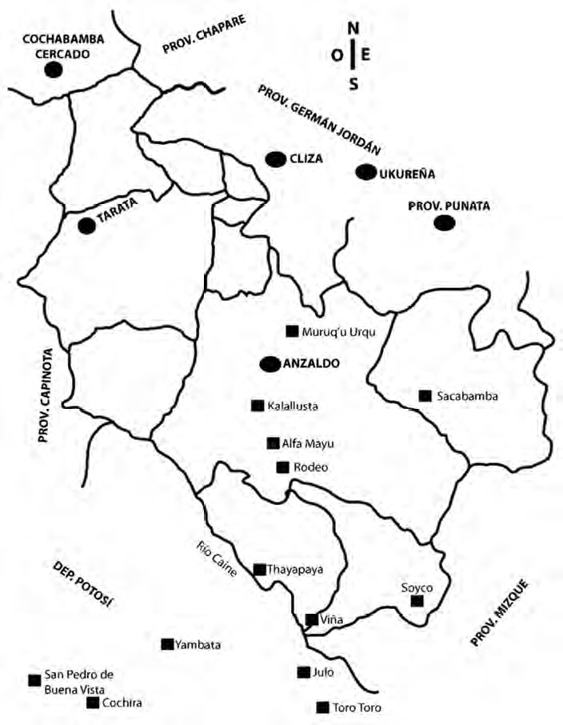

Phuyup Yawar Waqaynin
The bloody tear of a cloud
Qillqaq: Gladys Camacho Rios
Author: Gladys Camacho Rios
Tikraqkuna: Gillian Gallagher & Gladys Camacho Rios
Translators: Gillian Gallagher & Gladys Camacho Rios
This translation was prepared by Gillian Gallagher with the assistance of Gladys Camacho Rios, the author and a native speaker of Quechua from Cochabamba, Bolivia. The translation is meant to be helpful to students of Quechua. To this end, the English translation has been interspersed with the original Quechua, paragraph-by-paragraph. Additionally, every effort was made to remain as close as possible to the original Quechua in the structure of the translation. In many cases, this meant sacrificing some naturalness and flow in the English. In other cases, substantial modification from Quechua to English were unavoidable. Errors, questions or suggestions are welcome and should be directed to Gillian Gallagher at ggillian@nyu.edu. The novela was completed in May 2013 and published in Bolivia by Kipus. The translation was completed in September 2014, and was partially supported by funds from the Center of Latin American and Carribean Studies at New York University.
Kay jawariyqa:
Tata Faustinu Camacho Sotop kawsayninpi qillqasqa. Anzaldo chirupi, Kalallusta ayllumanta runakuna llakiyta kawsakuq kasqanku, chantapis kay jawariyqa chaypi t’ukurispa qillqasqa kachkan.
Qillqaq
This story:
was written based on the life of Don Faustino Camacho Soto. The people in the town of Kalallusta, in Anzaldo, lived a hard life, and so this story was written with that in mind.
The author
Kay p’anqaqa paykunap yanapayninwan tukuchisqa kachkan:
This book was completed with the help of many people:
Tata Walter Pardo, tata Juvenal Castro, tata Hernan Peralta, paykunata pachi ñiriyman kay Viñapi, Yambatapi ch’ampa awqanakuymanta willariwasqankumanta.
Tata Walter Pardo, tata Juvenal Castro, tata Hernan Peralta, thanks to them for telling me about the war in Viña and Yambata.
Teófilo Laime Ajacopa turayta pachi ñiriyman, kay p’anqata tukuchinaypaq sinchita yanapariwasqanmanta.
Thanks to my dear friend Teófilo Laime Ajacopa, for helping me so much to complete this book.
Tata Jaime Torricota, pachi ñini p’ayqata manaraq tukuychakuchkaptin ñawiripuwasqanmanta.
Tata Jaime Torricota, thanks for reading my writing before it was finished.
Anzaldomanta Alcaldía ñisqata pachi ñini yanapawasqanmanta.
Thanks also to the Anzaldo City Hall for helping me.
Tukuy munasqa yawarmasiykunata; tatayta, mamayta, turayta, ñañayta, masikunayta, yanasakunayta ima pachi ñini kallpachariwasqankumanta.
And to my dear family: my father, mother, brother, sister, friends and relatives, thank you for supporting me.
Qillqaq
The author
Ruri
Contents
JUK PHATMA CHAPTER ONE
Faustinup wawa kawsaynin Faustino’s childhood 9
ISKAY PHATMA CHAPTER TWO
Elenap paqarikuynin Elena’s birth 22
KIMSA PHATMA CHAPTER THREE
Faustinup waynuchu kawsaynin Faustino’s young adulthood 36
TAWA PHATMA CHAPTER FOUR
Sawachaku raymi The wedding 64
PHICHQA PHATMA CHAPTER FIVE
Ch’ampa awqanakuy The war 69
SUQTA PHATMA CHAPTER SIX
Quchapampa llaqtapi llamk’ayta Looking for work in Cochabamba 93
mask’aspa
QANCHIS PHATMA CHAPTER SEVEN
Mama Fransiskapis Quchapampapi Mama Francisca in Cochabamba 120
“PHUYUP YAWAR WAQAYNIN” JAWARIYMANTA RIQSICHISPA
“THE BLOODY TEAR OF A CLOUD” INTRODUCING THE STORY
Kay Bolivia jallp’anchikqa tukuy laya runayuq, kulturayuq, qalluyuq, imaymana puriyniyuq ima. Chaykunamanta juk chhikitata Gladys Camacho pananchikqa yuyarichiwanchik, willariwanchik. Quchapampa jallp’akunapiqa qhichwa runa, qhichwa parlaqkuna kawsakunku, chaypi imaynatachus qhichwa kawsaypiqa tukuy imapis rikhurin, chaykunamanta pay chhikamanta chhika kay p’anqapi jawariwanchik.
In our country of Bolivia there are all kinds of people, cultures, languages and ways of living. Our dear sister Gladys Camacho reminds us and tells us a little about this diversity. In the region of Cochabamba live Quechua people and Quechua speakers, and in this book she tells us, little-by-little, what Quechua life is like and how it all seems.
“PHUYUP YAWAR WAQYNIN”-manta jawariyqa sumaqta t’ukurispa, sumaqta wakichispa tukuy qhichwa parlaqkunapaq qillqarisqamin. Jinamanta qhichwa simipi pisimanta pisi, chanta p’unchawmanta p’unchaw astawan allinta ñawirisunchik. Tukuynichik Quchapampa llaqtapi kaqkuna qhichwa p’anqataqa ñawirinapaq munanchikpuni, chayrayku kayjina p’anqapis wakichisqa kachkan.
Regarding the work “The bloody tear of a cloud”, it is written and prepared for all Quechua speakers. Like this, little by little, day by day, we will read better in Quechua. All of us in the city of Cochabamaba really want to read a book in Quechua, and because of this this book was prepared as it is.
Kay jawariyqa Faustinup kawsayninmanta wawa kasqanmanta pacha ña machu runa kanankama imaynatachus Kalallusta ayllupi juch’uymanta wiñasqa, chanta sawachakusqa, chantapis Quchapampa llaqtaman llamk’aq risqa, llamk’aspapis qullqintaqa mana waqaychasqachu, chay llakiy puriyninmanta juk ñiqi phatmanta qanchik ñiqi phatmakama allinta ch’uwanchaspa, yuyaytapis mast’arasqatajina kay p’anqataqa ñawirichiwanchik. Chayrayku may kusaq jawariymin ñispa ñuqa ñiyman.
The story of Faustino’s life from when he was a little boy up until he was an old man, how he grew from a small boy in the town Kalallusta, got married, and then went to Cochabamba to work, and even though he worked, he didn’t keep his money, the story of him going through this sadness crystalizes from Chapter 1 to Chapter 7, we are made to read the book as an extended memory. This is why I can say this is a great story.
Ñawpaqtaqa Faustinuqa Fransisku, Inkarna tatan mamanwan juch’uy kaspaqa kawsakusqa, chanta ña wayna kaspari payqa Fransiska sipaswan sawachakusqa. Sawachakuy raymipiri warminpa yawarmasillan Muruq’u Urqu ayllupi sawachasqanku, Faustinup yawarmasinri mana achkhachu kasqa, chay p’unchawpacha runaqa kay qhariwarmiri mana sumaqtachu kawsakunqa ñispa parlasqanku. Chaymanjinapuni watamanta wata paykunapaq mana allinchu kasqa. Faustinuqa phusilwan awqanakuymanpis ayllu runawan khuska risqa, kutimullasqataq; chanta Quchapampa jatun llaqtaman risqa, chaypi aqha upyay kawsayman yaykuspa qullqintapis qhasillaman chikchasqa.
In the beginning, Faustino is small and lives with his mother Inkarna and father Fransisco, then when he is a young man he marries Francisca. For the wedding, they get married with just the woman’s family in Muruq’u Urqu, not many of Faustino’s family were there, that day people don’t speak well about the life of this bride and groom. And just like they said, year by year it isn’t good for them. Faustino goes with a gun to fight together with his fellow townspeople, and then he comes back; then he goes to the big city of Cochabamba, where he enters the life of drinking chicha, and spends all his money on nothing.
Gladys Camacho pananchikpa jawariyninqa yaqa chiqapuni; achkha runap kawsayninqa jinapuni, chayrayku payqa p’anqanwan may sumaqta t’ukurichiwanchik, unanchakunanchikpaq yuyayninwanpis allin kawsayta mask’ananchikpaq yanapawanchik. Pachi pachi Gladys ñispa kay qillqasqaniqta ñimuykitaq.
Our sister Gladys Camacho’s story is almost perfect; it is like many people’s lives, because of this her book makes us think hard, reflect and remember the past and helps us to see a better way to live. Thank you, thank you Gladys for writing this story here.
Teofilo Laime Ajacopa
Runa-simikunamanta yachachiq
Quchapampa, 2013
Teofilo Laime Ajacopa
Professor of Quechua
Cochabamba, 2013
Esteban Arze chirupi ayllukuna
Towns in Esteban Arze

Juk phatma Faustinup wawa kawsaynin (1936)
Chapter 1 Faustino’s childhood (1936)
Tata Fransiskuwan Faustinituwanqa chakipi utqhayta wasinkuman kutirimuchkasqanku, p’unchawnintinta Chullpa Muqupi papata qhuramusqankumanta. Jampuchkaptinkuqa, ñan patapi, kumpa Philipip wasinpi achkha ayllumasikuna aqhata upyarichkasqanku, chayllapi kumpa Philipiqa wasinmanta lluqsimuspa, tata Fransiskutaqa wawantin ñanta jamurichkaqta rikumusqa pacha.
Tata Francisco and little Faustino were walking quickly back home after having gone to weed potatoes on Chullpa Muqu[1] all day long. When they were on the road heading back, lots of the townspeople were drinking chicha at Kumpa Philip’s place. Just as Kumpa Philip came out of his house, he looked out and saw Tata Francisco coming down the road together with his child.
-“¡Jamuy Fransisku!” – ñispa sinchimanta qhaparimusqa.
“Come on in, Francisco!” he said, calling out loudly.
Kalallusta juch’uy ayllupiqa tata Fransiskuqa sumaq yuyaychasqa runa kaq kasqa. Payqa achkha qullqiyuq kaq kasqa. Jallp’anpis may chhikan tukuy imata sumaqta puqurichiq kasqa. –“Supaywan parlan” – tukuy ayllumasikunaqa ñiq kasqanku. Sumaq lisu runataq kaq kasqa.
In the little community of Kalallusta, Tata Francisco was a well respected person. He had a lot of money. He also had a lot of land, and grew everything very well. “He talks to the devil”, all the townspeople said. He was a very mean man.
Tata Philipiqa juk tullu runalla, Kalallusta ayllupi ñan patapi aqha wasiyuq karqa. Warmin wañupusqanmanta pacha sapan aqhaspa tukuy ayllumasikunaman aqhata ranqhaq. Chay p’unchawqa tata Philipiqa tata Fransiskuman qayllaspa makinmanta jap’ispa wasin ukhuman aysaykusqa. Faustinuqa mana tatanta saqiyta munaspa qhipanta, llamt’a q’ipirisqa pacha, yaykuykullasqataq.
Tata Phillip was a skinny little guy, with a chichería on the main road in the town of Kalallusta. Since his wife died, he had been making chicha on his own and selling it to everyone in town. That day, Tata Phillip went up to Tata Francisco, grabbed him by the hand and pulled him into his house. Faustino, not wanting to leave his father, also went in after him, carrying his load of wood.
-“¡Tatay ama aqhata upyankichu! ¡tutayawasunman ripunallaña tatay!” - ñispa, Faustinuqa tatanman parlasqa.
“Papa, don’t drink chicha! Let’s go before it gets dark on us, Papa.” Faustino said to his father.
-“¡Karaju! ¡Mana kaypi wawakuna aqhata upyankuchu! Qamqa ¡utqhayta wasiman ripuy! ¡chay llamt’ata mamayki wayk’unanpaq, utqhayta apay!” - ñispa tata Fransiskuqa wawanta ch’inyarparichisqa.
“Damnit! Children don’t drink chicha here! You, go home right away! That wood is for your mother to cook with, take it to her quickly!” said Tata Francisco, silencing his child instantly.
-“Arí Faustinitu, ripullayña, ¿yachu? Ñuqaykuqa tataykiwan juk juch’uy p’uyñu aqhitataraq upyarqusqayku, chanta tataykiqa jampullanqa”- kumpa Philipiqa ñisqa.
“Yes, Faustino, go on, ok? We’ll just drink a small jug of chicha, your father and me, and then he’ll head back.” Kumpa Phillip said.
Wawaqa ch’insitumanta llamt’a q’ipirisqa pacha lluqsimuytawan wasinman kachaykakapusqa. Tata Philipip wasinmanta Faustinup wasinman chayamunapaqqa karutaraq thatkimuna kasqa, P’uqru Pata[2] mayutapis chimpamunaraq kasqa.
The child silently left the house and went on towards home, carrying the wood. There was a still a long way to go from Tata Phillip’s house to get to Faustino’s house, and he still had to cross the P’uqru Pata[3] river.
Sapitan Faustinuqa jampuchkasqa, karutañamin thatkimusqa, jinallapi jukta paraqa sut’uykachariyta qallarisqa pacha. Wawaqa patata qhawarisqa, yana phuyukuna junt’ita urmaykurimuchkankumanpis jina tukuy chiruman kuyuykacharisqanku.
Faustino was heading back alone, and when he had already walked very far, all of a sudden, rain started to drip down. The child looked up, the full black clouds moved back and forth, looking as though they were were about to fall down.
-“¡Lliphiq! ¡Lliphiq! ¡Qhururun! ¡Qhururun!” - patapiqa sinchita uyaririkusqa.
He suddenly heard the crash! boom! of thunder from the sky, and saw the flash of lightning.
Astawan paraqa sinchimanta jich’akuyta qallarisqa. Faustinutaq mancharisqa utqhayta thatkillasqapuni. Ichapis payqa yachasqaña P’uqru Pata mayuman sapa paraptin achkha yaku chayamunantaqa. Wasinman chayapunanpaqtaq chay mayutaqa chimpananpuni kasqa. Mana chay mayupi chaka tiyaqchu.
The rain started to pour down even harder. Faustino kept walking quickly, afraid. He may have known that every time it rained, a lot of water filled the P’uqru Pata river. And to get home, he had to cross that river. There was no bridge over the river.
Wawa urquta muyuykamusqataq, mayuta qhawarimusqataq. Mayutaqa qunchu yaku junt’ita ririchkasqa. Chayta rikuytawan uña yuqallituqa astawan mancharikusqa.
The child came around a mountain, and the river came into view. Murky water was flowing rapidly, filling the river. The young boy saw this and got very scared.
-“¿Imaynallata kunan mayuta chay chhika yakuyuqta chimpasaqri? Chay chhika yaku apaspa wañuchiwanmanpischá”- ñisqa t’ukurisqa, chanta thatkillasqapuni.
“How will I cross the river with so much water? With that much water, it could kill me.” He thought and then continued walking.
Mayuman chayamusqataq, parataq manapuni pisiyasqachu, astawan sinchita parayta qallarisqa. Faustinuqa mayu kantupi llamt’a q’ipisituntin ima juk juch’uy sach’a uritapi paramanta pakakuspa qhipakusqa.
He got to the river, but the rain was still not weakening. It started to rain even harder. At the river bank, Faustino kept himself and all the wood he was carrying covered from the rain under a small tree.
Mayumanqa yakuqa yapakamullasqapuni, sinchita mancharikunapaqjinapuni. “¡Luqhuqun! ¡Luqhuqun!” ñispa rumikunataqa yakuqa uraman, uraman chinkaykuchisqa. Chay chhika yakuqa mayu kantupi sach’akunatapis t’iraytawan chinkaykuchillasqataq.
Water kept adding itself to the river, making him so terribly afraid. “Gulp, gulp” and the rocks disappeared deep under the water. All this water uprooted the trees at the bank of the river, and made them disappear too.
Para tumpata ch’inyaptinqa, chiriñataq qallarisqa, Faustinup p’achanqa ch’aritan, yakulla sut’urichkasqa. Chiriqa juq’u p’achayuqtaqa kharkatichiyta qallarichisqa, laqhataq mancharichisqa. Mana ni imata ruwayta atispa wawaqa sapan mayu kantupi llakiyta waqaq churakusqa. Tatan chayman kutinanpaqqa karu, mayuta chimpananpaqtaq yaku junt’ita. Ni imanayta atispa chayjina laqhapi llakiyta waqallasqapuni, ni killapis chay ch’isiyaytaqa k’anchamuchkasqachu. Chimpanta qhawarisqa, jatun yana chhankallata rikusqa; urata qhawarisqa, sach’akunallata runakunapis maqanarikuchkankuman jinata rikusqa. Astawan mancharikuspa, -“jik’un jik’un”- ñispa, chayjina ch’in mayu kantupi phutiyta waqallasqapuni.
When the rain calmed a little, it began to get cold. Faustino’s clothes were completely soaked, dripping water. He began to tremble from the cold and his wet clothes, and the darkness scared him. Unable to do anything, the child sat down on the bank of the river and cried sadly. It was too far to turn back to his father, and the river was too full of water to cross. Unable to do anything, there in the dark he kept crying sadly, not even the moon shone down on him as it got darker. Looking out in front of him, he saw a big black cliff; looking down, he saw the trees with their limbs flailing, as if they were people sparring back and forth. He was even more afraid – “hiccup, hiccup” – he said, at the silent river bank he cried and cried, becoming very distressed.
Faustinup wasinpiqa mama Inkarnaqa ch’isi mikhunata chayachiytawankamaqa, llakisqa phichqa wawanwan ima t’ukurisqa.
At Faustino’s house, right after she prepared the evening meal, Mama Inkarna was thinking about her poor fifth child.
-“Yakuchá tataykichiktawan Faustinuytawan jark’aykun. Ichapis taripamuq risunman”- ñisqa.
“Maybe the water stopped your father and Faustino. Perhaps we should go find them.” She said.
-“Arí mamay jaku rinachik kay ch’aki punchukunatawan apanachik q’alitutachá para juq’uykun”- kuraq warmi-wawan Libirata sutiyuq kutichisqa.
“Yes Mama, let’s go. Let’s take dry ponchos, the rain may have completely soaked them.” Libirata, the eldest daughter, responded.
Mama Inkarnawan, Libiratawan, Apoloniowan, Juliawan imaqa chakipi kachaykukusqanku. Chay ch’isiqa michiru juqharisqa, ñanta k’ancharispa thatkisqanku. P’uqru Pata mayuman chayachkaptinkuña Faustinuqa michiru k’anchata rikumuytawankamaqa phutiyta ñisqa:
Mama Inkarna, Libirata, Apolonio and Julia headed off on foot. They took out the lantern that night, they walked along a well-lit road. When they were getting to the P’uqru Pata river, Faustino saw the lantern glow and immediately called out in distress.
-“¡Ayllu-masikuna, yaku jark’aykuwan!”- sunqu nanayta, sinchita qhaparikamusqa.
“Neighbors! the water has blocked me!” he cried out loudly, his heart aching.
-“¡Chay Faustinituysinaqa!” - ñispa mama Inkarnaqa utqhayta purirpasqa.
“That sounds like my little Faustino!” Mama Inkarna said, walking faster.
-“¿Imaptintaq sapitan kachkanmanri?”- ñispa Juliataq mamanpaq qhipanta utqhayta purillasqataq.
“Why would he be alone?” said Julia, and continued walking quickly after her mother.
Mayuman chayaptinku, wawaqa sapitan mayu kantupi llamt’itantin llakiyta chukukuchkasqa.
When they got to the river, the child was alone at the bank of the river, sitting sadly with all of his wood.
-“¡Mamay! tatay kumpa Philipippi qhipakun, ñuqatataq wasiman ripuchkay ñispa sapitayta kacharpampuwan”- ñispa Faustinuqa sinchimanta jik’un jik’un waqaririspa mamanman willarikamusqa.
“Mama! Papa stayed at Kumpa Phillip’s, and sent me off by myself to go home” Faustino told his mother, choking loudly on his tears.
-“Ama waqaychu wawitay, kunititan chimpamusqayku” -ñispa mamanqa llakisqa kutichisqa.
“Don’t cry my child, we will cross right now,” his mother answered sadly.
Maman paymanta qayllapi kasqanta yachaytawanqa Faustinuqa manaña manchachikusqañachu. Tawa phanimantawanqa pisimanta pisi yaku pisiyasqa. Astawan yaku pisiyaptinqa, mamanqa Juliawan, Libiratawan, Apoloniowan ima mat’ita jap’inaykukuytawanqa mayuta chimpayta qallarisqanku. Yakuqa chaki muqunkuman chayasqa, sinchita yakuqa urmachiyta munasqa. Juliaqa punchukuna q’ipirisqa astawan sinchita mamanmantawan turanmantawan jap’ikusqa, jinallapi mayutaqa chimpasqanku.
Once he knew his mother was close by, Faustino wasn’t afraid anymore. Over four hours, the water level went down little by little. When the water had gone down enough, his mother, Julia, Libirata and Apolonio grabbed onto each other tightly and began to cross the river. The water was up to their ankles, all the water almost made them fall. Carrying the ponchos, Julia tightened her grip on her mother and brother, and like that they all crossed the river.
-“¡Kay millana qhincha, wawaytachu sapanta kachampuwan! ¿Maypi kunan tatayki kachkanri?”- mama Inkarnaqa ñisqa.
“Oh that awful, wretched man, sending my child back to me alone. Where is your father now?” Mama Inkarna said.
Faustinuqa mamanta uqllaykuytawan sinchitapuni jik’un jik’unta waqallasqataq.
Faustino hugged his mother and kept sobbing very loudly.
-“Tata Philipippi aqhata upyachkan, jampuchkaptiyku Philipi lluqsirqamun, chantataq makinmanta paypuni aysaykun, ñuqatataq ¡ripuchkay chay llamt’ata utqhayta mamaykiman ch’isi mikhunata wayk’unanpaq jaywamuy! ñispa sapayta kacharpampuwanku” -ñisqa Faustinuqa jik’un jik’un mamanman willakusqa.
“He is drinking chicha at Tata Phillip’s. While we were on our way back, Phillip just came out, and grabbed him by the hand. Then he said to me “Go, take that wood to your mother quickly so she can make dinner!”, and they just sent me off by myself,” Faustino said to his mother, choking on his sobs.
Pananqa utqhayta ch’aki punchuta q’ipinmanta jurqhuytawan Faustinuta mayt’uykusqa.
His sister quickly took out a dry poncho from her bundle and wrapped it around Faustino.
-“Tuta ch’isiyayta chay aqha wiksaqa aqhata upyanqa, ¡jaku ripunachik!” -mama Inkarnaqa llamt’ata q’ipiriykukuspa ñisqa.
“That drunkard will drink all night, let’s go!” Mama Inkarna said, gathering up the wood.
Yakuqa astawan pisiyayta qallarisqa. Kunanpiwanqa phichqankumanta astawan jasatañamin mayuta chimpapusqanku. Michiruwan k’ancharikuspa, k’ancharikuspaqa wasinkuman chayamusqanku.
The water was beginning to lessen even more. Then the five of them crossed the river more easily. With the lantern glowing and glowing, they made it home.
Q’ayantin paqarinqa laqhallaraq kachkaptin, k’anka jukta qhapariptin tata Fransiskuqa machasqa wasiman chayamusqa.
The next morning when it was still dark, Tata Francisco arrived at the house drunk, just as the rooster crowed for the first time.
-“¡Inkarna! ¿Maytaq mikhuna?”- ñispa, punkuta sinchita jayt’aspa kichariytawan yaykumusqa.
“Inkarna! where is the food?” he said. He came in, throwing the door open.
-“¿Imaptintaq wawata sapanta kachampurqankiri?” -ñispa mama Inkarnaqa payman phiñasqa chimpasqa.
“Why did you just send the boy back alone?” Mama Inkarna said to him, going over to him angrily.
-“¡Manachu chakiyuq imataqri! Chakiyuqqa, kay chayampusqaqa. ¡utqhayta mikhunata jaywaway!” –ñispa Fransiskuqa astawan phiñarikusqa.
“Doesn’t he have feet?! He has feet, he can get here. Bring me some food, quickly!” Fransisco said, very angry.
-“Jinallatapuni qamqa ñuqaykuta ñak’arichiwayku ¡saqra! ¡lisu!” -ñispa mama Inkarnaqa phiñasqa wayk’una wasimanta ila k’ispiñuta jurqhumuytawan jaywasqa.
“You always make us suffer like that! bastard! jerk!” Mama Inkarna said angrily from the kitchen. She took out some cold wheat patties and served them to him.
Chaypi tata Fransiskuqa ila k’ispiñuta llaqwayuqta mikhuq churakusqa. Jinallapi Faustinuqa jatarimusqa.
Tata Francisco started to eat the cold wheat patties with hot sauce. Just then, Faustino got up.
-“Sumaq p’unchaw tatay, sumaq p’unchaw mamay”-
“Good morning Papa, good morning Mama”
Tatan mamanta napaykuytawan Faustinuqa, yakuq’uñita mut’iyuqta mikhusqa. Quqawita uña llikllanpi q’ipiriykukuytawantaq yachay-wasiman Rodeo[4] aylluman kachaykukusqa.
After greeting his mother and father, Faustino ate his breakfast of boiled corn. The boy wrapped up a little lunch in his shawl and headed out to his school, in the town of Rodeo[5].
-“¡Richkaniña!” -ñispa punku-wasamanta qhaparimusqa.
“I’m off!” he said calling from by the door.
-“Allin pacha waway utqhayllata rirquy, sumaqtamin yachachiq ñisqanta ruwanki ¿yachu?” -mamanqa ñisqa. Tatanqa machasqa ni uyarillasqapischu, mikhullasqapuni.
“Go on my boy, do what your teacher says, ok?” His mother said. His drunk father didn’t even hear, he just kept on eating.
-“Ya mamay” - ñispa punkuta kichariytawan lluqsisqa.
“Yes mama!” he said, he opened the door and left.
Uña yuqallaqa chiqitanta ñanta kachaykukusqa. Yachaywasiman chayananpaqqa, karutaraq sapa p’unchaw thatkina kasqa, kanmanchá qanchis sillk’u. Puqru Pata mayuman chayaptinkamaqa Waltiku Pardo atillchanqa papawki juqharisqa suyarichkasqaña.
The young boy headed straight down the road. He had to walk very far everday to get to school, it was about 7 kilometers away. When he got to the P’uqru Pata river, his friend Waltiku Pardo was already waiting for him with a ball.
-“¿Faustinu wach’inaykita apachkankichu?”- ñispa Waltikuqa tapurisqa.
“Faustino do you have your arrow?” asked Waltiku.
-“Arí kayqa, qhawarillaypis”- ñispataq rikuchispa kutichisqa.
“Yeah here, look” He replied, showing him.
Iskaynin uña yuqalla ñanta yachaywasiman chakipi kachaykukusqanku.
The two young boys headed off down the road to school.
-“Qayna ch’isi P’uqru Pata mayupi yaku jark’aykuwarqa”- ñispa Faustinuqa Waltikuman willarikusqa.
“Last night the water in P’uqru Pata river blocked me” Faustino told Waltiku.
-“Sinchita paraykurqa, wasiy wasantapis achkha yaku jurayk’urichkarqa”- ñispa Waltikuqa kutichisqa.
“It rained so much, there was even water running down behind my house” Waltiku responded.
Jinata tukuy imamanta parlaspa, p’isqukunata wach’inawan wañuchiyta munaspa, unayta thatkiytawan yachay-wasikama chayasqanku.
They walked a long time like this until they go to school, talking about everything and trying to kill birds with the arrow.
Chay p’unchawqa yachachiqqa yupaykunata wawakunaman yachachisqa. Wawakunaqa yupayta yachakunankupaq chuwita, wakinqa uña k’aspikunata, uña rumikunata, riwuta, sarata apasqanku. Faustinuwan Waltikuwanqa puka chuwikunata apasqanku. Chaypiqa, wawakunaqa unayta pukllaspa, pukllaspa yachayta jap’iqasqanku. Sapa chawpi p’unchawta, tukuy wawakunaqa mikhuq lluqsiytawan muyupi misk’ita sama apakusqankuta sapa jukpis mikhurasqanku. Mikhuyta tukuytawan wakin wawakunaqa mayuman pukllaq yaykusqanku. Faustinuwan Waltikuwanqa papawki kanchaman riytawan wakin wawakunawan ima papawkita jayt’aq churakusqanku.
That day, the teacher taught addition to the children. To learn to count, the children got beans and some little sticks, small stones, wheat and corn. Faustino and Waltiku got red beans. The children spent a long time playing like this, playing and learning. Everyday at noon, when they went to eat their lunches, all the children sat in a circle and ate what they had brought. When they finished eating, some of the kids went into the river to play. Faustino and Waltiku went to the football field and played with the other children.
Sinchitamin qhari wawakunaqa papawkiwanqa sapa p’unchaw yachay-wasipi pukllaq kasqanku. Chayraykutaq tukuy wawakuna yachaywasiman riyta munaq kasqanku. Tukuy yachay-wasiman riqkunaqa yupaytawan, ñawiriytawan, qillqaytawan imalla yachakuq kasqanku. Chayta yachakuytawanqa manaña yachay-wasimanqa riqchu kasqanku, tatankunallataña llamk’ayta yanapaq kasqanku. Ajinata Faustinup panankunapis wawqinkunapis mañana yachaywasiman riqñachu kasqanku, paykunaqa tatantawan mamallantawanña chakrapi tarpuysiq kasqanku, jallmaysispa, riwu rutuysispa, tukuy imapi yanapaq kasqanku.
The boys played ball so much at school, everyday. Because of
this, all the kids wanted to go to school. Everyone who went to school had to
learn addition, reading and writing. After learning these things, they didn’t
have to go to school anymore. They were put right to work helping their
parents. Faustino’s brothers and sisters didn’t go to school anymore. They had
to plant in the fields with his mother and father, digging and cutting the
wheat. They had to help with everything.
Iskay Phatma Elenap paqarikuynin (1940)
Chapter 2 Elena’s birth (1940)
Juk intichaw p’unchawpi tukuy ayllukunamanta achkha runa; warmikuna, qharikuna, waynuchukuna, sipaskuna ima tata Fransiskup wasin punkuman sut’iyayta chayamusqanku. Manaraq k’anka juktapis qhaparisqaraqchu. Chay p’unchawqa Tata Fransiskuwan mama Inkarnawanqa papata allachinanku kachkasqa.
One Sunday many people from all the communities in the area, women, men boys and girls, arrived at dawn at the door to tata Francisco’s house. The rooster hadn’t even crowed yet. It was the day that tata Francisco and mama Inkarna were going to have them harvest the potatoes.
Sapa wata paykuna achkhatapuni papataqa puquchiq kasqanku, ni pipis Kalallusta juch’uy ayllupi ajinata papata puquchiqchu, paykunallapuni sumaqta puquchiq kaq kasqanku. Chayraykutaq tukuy runakunaqa papa allayman allaysiq utqhayllata jamuq kasqanku.
They grew so many potatoes every year, no one else in the little town of Kalallusta grew potatoes like that, they had always been the best farmers. And because of this, everyone rushed to help dig up potatoes at harvest time.
Jinallapi jukta k’anka qhapariptinkama tata Fransisku sayarisqa. Kuka wayaqanta juqharikuytawankama, juk pikchuta tukuspa jawaman lluqsisqa. Achkha runakunata rikuytawanqa tapusqa:
Tata Francisco got up as soon as the rooster crowed. He took out his coca bag and chewed a bit right away, then he went out. He saw all the people and asked:
-“¿Qamkunachu papa allayman yanapakuq jamurqankichik?”- umanta patata juqharispa sinchimanta parlarispa tapurisqa.
“You came to help with the potato harvest?” he asked loudly, raising his head up.
-“Arí tata Fransisku, papayku wasipi pisiyarparin, mana mikhunaykupaq kanñachu. Chayrayku papaman jamukuyku. ¡Sumaqta llamk’aq, yanapaq ima jamuyku!”- ñispa juk runa kutichisqa.
“Yes tata Francisco, our supply of potatoes has diminished very quickly, there isn’t anything to eat already. We come because of this. We come to work hard and help out!” one person answered.
-“Jina kaptinqa lluqsisunchik pacha. ¡Kunan p’unchaw papa allayta tukuchinanchik tiyan!” - juknintaq ñisqa.
“That’s right, let’s get going right away. We have to finish the harvest today!” someone else said.
-“¡Inkarna! ¿Maytaq chay qhilla wuru wawakunayki, sayarimunkuñachu? Yanapakuqkunapis kaypiña kanku, ¡jakuchik rinallachikña!”- ñisqa sinchita qhapariykachaspa wasinman phiñasqa yaykusqa.
“Inkarna! Where are your lazy ass children, have they gotten up yet? The helpers are already here, come on, let’s go already!” He went angrily into the house while calling out loudly.
Jinallapi chakraman tukuymin qutupi kachaykukusqanku. Chakra kantupiqa tata Fransisku sumaqta runakunata rak’isqa, mayqinkunachus juk chirumanta papata allanankuta, mayqinkunataqchus wak chirumanta allanankuta. Chayta uyariytawanqa, papa allaqkunaqa jukllata papa allayta qallarisqanku. Sapa papa yuraqa sumaq puquyniyuq kasqa, sapa saphipi chunka, chunka kimsa, chunka phichqa papayuq kasqa, jatuchaq puquykunayuqraqtaq kasqa. Tukuy allaqkunaqa muq’irispa kusisqa, asirispa, parlarispa, qhapariykacharispa ima allallasqankupuni.
Then they all set off for the field in a group. At the edge of the field, tata Francisco carefully divided up the people, some would dig up the potatoes in one area, and others in another area. After hearing their instructions, each worker began to dig right away. Every potato plant was perfectly ripe, each root had 10, 13, 15 potatoes, and they were all enormous. All the workers, happy and longing for such potatoes of their own, kept on digging, smiling, talking and shouting back and forth.
Tata Fransiskupis wakin llamk’aqkunajina papa allaq churakullasqataq. Paypaq allaynintaqa ni pipis atipaqchu kasqa. Wiskanata 4 jap’iykuytawankamaqa jukllata sinchita waqtaspa ch’aki yurataqa karuman phawachisqa. Chaymantataq papataqa tawamanta tawa kanastaman pallasqa. Kanastaman papata junt’achiytawantaq uman pataman churaykuytawan tukuy rikunankupaqjina ñawinta ch’irmiykurispa papa qutuman jich’aykusqa. Chayta rikuytawanqa tukuy yanapaqkunaqa t’aqllararikusqanku. Juknintaq umanta patata juqharispallapuni kasqa. Fransiskuqa tukuymantapis astawan jatun runa kasqa. Yana runa. Jatuchaq ch’apayuq. Sapa asiriptin ch’apan ukhumanta yuraq kirun rikurikuq kasqa. Sumaq ñawi-sapa, Fransiskuqa lisu runa kaq kasqa.
Tata Francisco also started digging, just like all the other workers. No one could dig like he could. As soon as he grabbed the spade, he sent a dry shrub flying with one big thrust. After that, he picked up the potatoes four by four and put them in a basket. After a filling a basket, he put it on his head so that everyone could see, and closing his eyes he dumped the basket out onto the big pile of potatoes. After seeing this, all the workers applauded. He raised his head up. Francisco was the greatest man of all. A black man. With an enormous beard. Every time he smiled his white teeth appeared through his beard. He had big eyes, Francisco was an awful man.
-“¡Ajinata papataqa allana karaju!”- ñispa papata allaq watiqmanta churakusqa.
4 Wiskana = kaywan papata runakuna allanku.
4 Wiskana = people dig potatoes with this. [like a pickaxe]
“Now that’s how you harvest potatoes!” He said, starting to dig potatoes again.
Papa allaqkuna qhipanmanqa achkha wawakuna papata chaqmaq jamullaqtaq kasqanku. Paykunaqa, papa allaqkuna ichapis papata mana q’alitutachu pallanku chayta wasinkuman apakunankupaq chaqmakuq kasqanku. Chaypi Maximilianoqa juk uña yuqallallaraq Muruq’u Urqu5 ayllumanta tatanwan papa allayman jamukusqa.
Many children followed after the harvesters, sifting through the dirt for potatoes. Perhaps the potato harvesters hadn’t collected every single potato, and they could dig them up themselves to carry home. Maximiliano, a boy from Muruq’u Urqu, still quite young, had come to the potato harvest with his father to do just this.
-“¡Waway! Qamqa papitata wasiman apakunanchikpaq chaqmakunki”- Maximilianop tatanqa ñisqa.
“My child! You dig up a few potatoes for us to carry home.” Maximiliano’s father said.
-“Manchikuni tatay. Ichapis Tata Fransiskutaraq tapuriwaq”- Maximilianoqa kutichisqa.
“I’m afraid father. Maybe you could ask tata Francisco?” Maximilano replied.
-“Jaqay, jaqaypi wawan kachkan. Yana liq’iyuq qamjina yuqallitu, payta tapurqamuy wawitay”- ñispa tatanqa kachasqa.
“There’s his son right over there. That little boy with a black hat like you, just go over and ask him my child.” his father said, sending him off.
Jinamanta Maximilianoqa Faustinu chayman puriytawan ajinata tapusqa:
5 Muruq’u Urqu = Anzaldo chirupi juk juch’uy ayllu.
5 Muruq’u Urqu = A small town in the Anzaldo area.
So Maximilano walked up to Faustinu and asked:
-“¿Kay sukapi papata chaqmarikuymanchu?”
“Could I sift for potatoes in this row?”
-“Arí, ichapis atipanakuta iskayninchik chaqmasunman”- ñisqa Faustinuqa tata Fransiskup sullk’a yuqallanqa.
“Yes, maybe the two of us could race” said Faustino, Francisco’s youngest child.
Jinamanta atipanakupi papata allaqkuna puchusqanmantajina chaqmasqanku.
Then they dug up the potatoes from what the harvesters had left behind, racing each other.
Chawpi p’unchawña kachkaptinqa, mama Inkarna iskay sipas wawakunanwan ima phichqa jurnu wathiyata ruwanankupaq pirqayta qallarisqanku pacha. Kuraq wawan Libirataqa sumaqta jurnutaqa sayachisqa. Juliataq jump’i suruyta utqhayta jurnu q’uñinanpaq inqhasqa. Sumaqtaña jurnukunata k’ajaykuchispaqa, chunka jatuchaq kanasta papatapuni jurnu ukhuman jich’aykusqanku. Sumaqta jallp’awan p’ampaykuytawan wasinkuman llaqwata kutamuq kutirisqanku.
At midday, mama Inkarna and her two daughters started to build five ovens for roasting potatoes in the ground. The older child Libirata built a good oven. Julia, dripping sweat, quickly lit the fire to heat up the oven. When the ovens were good and hot, they dumped in ten enormous buckets of potatoes. After covering them very well with dirt, they turned back into the house to grind the hot sauce.
Wasinkupiqa achkha ulupika6 llaqwata kutasqanku, kanmanchá karqa juk chunka juch’uy chuwa junt’itachá, chay chhika yanapaq runapaqqa. Juk jatun t’uru ch’illamipi7 llamk’anaman apanankupaq wakichisqanku.
In their house, they ground many ulupika peppers into a sauce, it was maybe enough to fill ten little bowls, it was enough for all the workers. They prepared it in one big clay bowl to carry to where the others were working.
Libirataqa juk jatun p’uyñupi aqhata q’ipiriykukusqa, makinpitaq ch’illamipi llaqwata juqhariykukusqa. Mama Inkarnaqa, jatun unqusqa pacha manaña llasakunataqa juqhariyta atispaqa ñisqa:
Libirata carried chicha on her back in a big jug, and took the big bowl of hot sauce in her hand. Mama Inkarna was already big with child and as she tried to lift the heavy things she said:
-“Ususikunay, unquq kachkani, qamkunalla aparquwaqchik, mana ñuqaqa llasata juqhariyta atiniñachu, wiksay nanayta qallarichkawan, ichapis paqarichikusaqña”-.
“My daughters, I don’t feel well, you’ll have to take it on your own, I can’t lift something so heavy, my stomach is starting to hurt, maybe I’m already going into labor”.
-“Arí mamay qamqa tutumakunallatapis apawaq”- Juliaqa wak aqha p’uyñuta q’ipiriykukuspa kutichisqa.
“Yes mama, I‘ll carry the big dish” Julia replied wrapping up another jug of chicha
6 Ulupika = luqutu jina, juch’uy muruq’itukunapi puqurin. Sumaq jaya, Kalallusta ayllupi llaqwata kay ulupikamanta kutarinku.
6 Ulupika = like a locoto, they grow small and round. Very spicy, they make a hot sauce with these ulupika peppers in the town of Kalallusta.
7 Ch’illami = Jatun chuwa, t’urumanta ruwasqa.
7 Ch’illami = A big bowl, made out of clay.
in her bundle.
Jinapi kimsantinku chakraman kachaykukusqanku. Chayaytawankamaqa wathiyata utqhayta p’amparaytawan phichqa jatuchaq kanastaman jurqhusqanku.
Then the three of them set out for the field together. As soon as they arrived, they quickly dug up the potatoes, and then put them into five huge baskets.
-“¡Apolonio!- Papa wathiyata pampaman jich’ananchikpaq picharquy”- ñispa mama Inkarnaqa qhari wawanta qhaparisqa.
“Apolonio! Sweep up so we can put the roasted potatoes on the ground.” Mama Inkarna called to her son.
Paytaq t’ulamanta8 juk jatun q’umir k’allmata p’akimuytawan chaywan karuta pichasqa. Chaymantaq achkha papa wathiyata sinrupi jich’asqanku. Jich’aptinkukamaqa mama Inkarna uña kanastapi papa wathiyata jatuchaq jatuchaqninta akllaraspa juqharisqa. Juk chuwapi llaqwatawan ni pipis mikhuchkaptinraq tata Fransiskumanraq ñawpaqta jaywasqa.
He broke off a big green branch from a t’ula tree, and swept clean a big area with it. Then they dumped lots of roasted potatoes in a row. When they had dumped them out, mama Inkarna picked out the biggest potatoes and put them in a small basket. She would give these to tata Francisco with a bowl of hot sauce, before anyone else ate.
Tata Fransisku mikhuyta qallariptinraq wakin runakunaqa misk’ita wathiyata llaqwayuqta mikhurasqanku. Patanpitaq tukuymin aqhata upyarisqanku.
When Tata Francisco had started eating, the others also each ate the delicious
8 T’ula = juk q’umir sach’a, sumaq pichanapaq.
8 T’ula = a green tree, good for making brooms.
roasted potatoes with hot sauce. And on top of this they also all drank chicha.
Mikhuykuytawankama papata tukuchinankukama allallasqankupuni. Inti yaykuytataq tukuy yanapaqkunaman yanapasqankumanta papata tata Fransisku junt’achichkaptinqa, mama Inkarnap wiksan sinchita nanayta qallarisqa.
As soon as they finished eating, the went back to digging up potatoes until they were finished. At sunset, when tata Francisco was giving out potatoes to the workers for their help, mama Inkarna’s stomach started to hurt badly.
-“¡Paqarikunqaña, Paqarikunqaña! Sinchitapuni wiksay nanachkawan”- ñispa pampaman chukuykakapusqa.
“I’m giving birth, I’m giving birth!” My stomach hurts so much” She said, sitting down on the ground.
-“¡Utqhayta wuruman wasarichiychik!”- mama Isika juk papa allaysiq warmi ñisqa. Jinapi wasinman pusakapusqanku. Wasiman chayasqataq puñuna pataman winkhuykusqataq paqarichikusqataq. Mama Isikaqa pikunachus paqarichikuq warmikunataqa yanapaqpuni kasqa. Chaypacha pay sumaqta mama Inkarnata yanapasqa.
“Quickly, let’s get her up on a donkey” mama Isika, one of the potato harvesters, said. They led her back to her house like this. When they arrived at the house, they laid her out on the bed to give birth. Mama Isika was the woman who always helped with births. She would take good care of mama Inkarna.
Chay p’unchaw, juk k’acha imillita paqarikusqa. Mama Inkarna ch’aska ñawi wawitanman Elena sutita churaykusqa.
On that day, a beautiful girl was born. Mama Inkarna gave the name Elena to her little child with shining eyes.
Chay p’unchawmantapachaqa Elenaqa sumaq munasqa wawita kasqa. Tukuymin munakuq kasqanku. Faustinuqa sullk’a pananta tukuymantapis astawan sinchita munakuq kasqa. Sapa p’unchaw uwijakunamanta wilalita ch’awaspa k’acha imillitamanqa upyachiq kasqanku.
From this day on Elena was a well loved child. Everyone loved her. Faustino loved his little sister most of all. They milked the sheep every day to give the beautiful girl milk to drink.
Wata puriypi Elena wiñasqa, Faustinupis jatun waynuchumanña tukuykapusqa, astawanña kallpachakusqa. Faustinuqa tatankuwan panankuwan, wawqinkuwan imaqa sinchitañamin llamk’aq kasqa, manaña yachaywasimanpis riqñachu kasqa. Tata Fransisku mama Inkarna imaqa, sapa wata sumaqta chakrata puquchillaqpuni kasqanku, chantataq Clizaman ranqhaq apaq kasqanku.
As the years passed, Elena grew, Faustino became a tall man and he got stronger. Faustino and his brothers and sisters worked very hard with their parents, he didn’t go to school anymore. Every year tata Francisco and mama Inkarna grew a bountiful crop and then they took it to Cliza to sell.
Tata Fransiskuqa puquykunata ranqhasqanpi qullqirarallapuni kasqa. Sinchi lisu runallapunitaq Kalallusta ayllupiqa kaq kasqa. Chay ayllumasikunanqa sinchita chiqnikuq kasqanku, millay Fransiskutaqa, ichapis payqa mama Inkarnata anchatapuni maqaq, wawankunatapis maqallaqtaq. Chayrayku mama Inkarnaqa, tata Fransisku sapa kuti Philipip wasinman aqhata upyaq riptinkama, wawankunata pusariykukuytawan, wasin pata chiruman juk rumimanta ch’ukllitaman ayqikuq kasqa, mana wasinpi qusanwan ch’ampaypi kawsananpaq. Q’ayantintaq wasinman sut’iyayta kutiykapuq kasqa. Mama Inkarna juch’uy warmilla kasqa. P’aqu uya warmi. Yana rakhu sap’anayuq. Yuraq liq’iyuq. Yana juk’utayuq. Q’umir pullirayuqllapuni puriq kasqa.
Tata Francisco always had a lot of money from selling his produce. He was the meanest man in Kalallusta. The townspeople really hated him, awful Francisco, because he beat mama Inkarna so hard, and his children too. Because of this, every time tata Francisco went to kumpa Phillip’s chicería to drink, mama Inkarna immediately took her children and escaped to a rock hut a little ways beyond her house, in order to avoid fighting with her husband when he came back. They next day she came back at dawn. Mama Inkarna was a small woman. Olive-skinned. Thick black braids. White hat. Black sandals. She always wore a green skirt.
Kalallusta ayllupiqa tata Fransiskup wasillanpi juk uritu kaq kasqa. Chay k’acha q’umir uritutaqa wawqin Chapare9 llaqtamanta apamuytawan chunka suqtayuq waranqapi ranqhasqa. Chay urituqa sumaqta qhichwa simita parlayta yachakusqa. Runakunata parlaqta uyariytawankamaqa payqa paykunawan parlariyta munaq pacha kasqa. Durasnu sach’a patamanta imallatapis parlarimuqpuni kasqa.
There was just a single parrot in all of Kalallusta, in tata Francisco’s house. His brother had brought this beautiful green parrot from the Chapare and sold it to him for 16 Bolivianos. This parrot knew how to speech Quechua well. As soon as it heard someone say something, it wanted to talk to them. It was always on top of the peach tree talking about something.
Juk Intichaw p’unchaw tata Fransiskuqa Lindi Q’asapi10 Katalina chulanwan sumaqta aysaykacharinakuchkasqanku. Mama Inkarnataq sapitan wasipi yakuta aqhananpaq juk jatun paylapi t’impuchiyta qallarichkasqa. Chayllapi urituqa, ajinata parlayta qallarisqa:
One Sunday Tata Francisco was in Linda Q’asa, flirting with his chola, Katalina. Mama Inkarna was alone in the house, starting to bowl the water for chicha in a big pot. Suddenly, the parrot started to talk:
-“Mama Inkarnita, Lisu Fransiskuqa chulanwan karichkan, Mama Inkarnita, Fransisku
9 Chapare = juk jatun ayllu, achkha sach’akuna tiyan, misk’i puquykuna chay chirupi puqun.
9 Chapare = a big town, where there are many trees and they grow good fruit.
10 Lindi Q’asa = chay chirupi tawa ñan tinkuchkan chayrayku ajina sutin.
10 Lindi Q’asa = this town is called this because four roads meet here.
wak chulanwan karichkan”- ñisqa.
“Little Mama Inkarna, that jerk Francisco is with his chola, little Mama Inkarna, Francisco is with his other chola” he said.
Mama Inkarnaqa urituta uyariytawanqa sinchita t’ukurikusqa.
After hearing the parrot, Mama Inkarna thought hard:
-“¿Imaptinpunitaq kay uritu ajinata ñiwanri?, urituqa sumaq yachayniyuq, mana payqa qhasita parlanmanchu. Chay qhincha Fransiskuqa chulanwanpunichá karikuchkan”-.
“Why does this parrot always say things like this to me? the parrot knows so much, couldn’t it just talk nonsense? That shameful Francisco is probably always with his chola.”
Ajinata t’ukurikuytawanqa, utqhayta yaku t’impunanpaq ninata inqhallasqapuni.
After thinking this, she quickly went back to lighting the fire to boil the water.
Yakuqa t’impuyta qallarisqa. Chaypitaq tata Fransiskuqa tumpa machasqa chayamusqa.
The water started to boil. And right then, Tata Francisco arrived a little drunk.
-“¿Maymantataq jamuchkankiri?, ¿Piwantaq kachkarqankiri?”- ñispa mama Inkarna phiñarikusqa.
“Where are you coming from? and who were you with?” Mama Inkarna said angrily.
-“Wirta Mayupi 11 chakrata watumurqani, mayumanta yakuta chakraman wasarichinapaq larq’ata allamurqani”- ñispa sinchita parlasqa.
“I visited the fields over in Wirta Mayu, I dug a canal to bring the water up from the river to the field.” He said loudly.
-“Chay qhincha chulaykiwan aysaykachanarikuchkarqanki ñin”- ñispataq astawan sinchita mama Inkarnaqa phiñarikusqa.
“He says you were fooling around with your disgraceful chola.” Mama Inkarna said even louder, angry.
-“¿Pitaq ñin?”- ñispa Fransiskuqa phiñarikullasqataq.
“Who says” Francisco said, getting angry himself.
-“Uritu niwan”- ñispataq kutichisqa.
“The parrot told me” she replied.
Chayta uyariytawanqa lisu Fransiskuqa sinchita phiñarikusqa. Juk rumita juqharikuytawan urituta ch’anqaspa sach’amanta urmaykuchimusqa. Jukta jap’iytawankamataq; -“¡Karaju llulla q’ipi!, ¡kunanmá yachanki!”- ñispa uritutaqa makinwan sinchita q’apiykuytawan payla uraman nina chawpiman chuqaykusqa.
When he heard this, the nasty Fransisco got really mad. He picked up a rock, threw it at the parrot and knocked it out of the tree. As soon as he had grabbed it, he said “Damn liar! Now you’ll learn something” he said to the bird, after squeezing it
11 Wirta Mayu = kaypi achkha jallp’a tiyan, tukuy Kalallusta ayllumasikuna sumaqta tukuy imata puquchinku.
11 Wirta Mayu = there is a lot of land here, and all the people from Kalallusta grow their crops here.
tightly with his hand he tossed it under the pot in the middle of the fire.
-“¡Ama jinaychu!”- ñisqapis mama Inkarnaqa.
“Don’t do that!” cried Mama Inkarna.
Lisu Fransiskuqa ni uyarillasqapischu. Ninaman uritutaqa chuqaykuytawan k’aspiwan payla urapi kawsachkaqta wañunankama kanaykusqa. Nina ukhupiqa urituqa phutiyta qhaparispa wañupusqa.
Nasty Francisco didn’t even hear her. He threw the parrot in the fire alive, and he kept it under the pot with a stick, burning it until it was dead. The parrot died in the fire, screaming in distress.
Faustinuwan yawarmasinkunawan ima, q’ayantin p’unchaw sinchitapuni chayta yachaytawanqa uritumanta waqasqanku. Sinchita tatankupaq phiñarikusqanku. Sapa munarispa tata Fransiskuqa wawankunata maqaraq kasqa. Imastapis qhapariqpuni kasqa; “¡luqt’u!, ¡upa!, ¡qhilla wuru!” Ñiq kasqa. Wawakunatawan mama Inkarnatawanqa sinchita ñak’arichiq kasqa. Chayrayku mama Inkarnaqa wawakunawan sapallanku astawan maymanpis puriq kasqanku. Tatankuqa ni raymikunallamanpis paykunawan ancha riqchu kasqa. Sapallan maykunamanchus rispa chinkaq kasqa. Ni pi yachaqchu, ni pitaq tapuqtaqchu.
The next day, Faustino and his siblings cried so hard when they learned about the parrot. They were very angry with their father. Tata Francisco beat his children whenever he felt like it. He was always yelling something, “idiot! stupid! lazy donkey!”. He really hurt Mama Inkarna and the children. Because of this, Mama Inkarna and her children usually went places alone. Their father didn’t even go to festivals with them. He disappeared to wherever on his own. No one knew, and no one asked.
-“¡Supaywan purin!, ¡Supaywan parlan!”- Kalallusta ayllupi tiyakuqkuna ñiq kasqanku. “He walks with the devil! He talks with the devil!” The people of Kalallusta said.
Tata Fransiskuqa manaraq wañuchkaspa, wañuy tawak’uchutapis sumaq k’achituta ruwachikusqa, puñunan wasin ukhupi chaypi jallch’aq ñin.
Before he died, tata Francisco made himself a beautiful coffin, and kept it in his bedroom.
Kimsa Phatma Faustinup waynuchu kawsaynin (1944-1946)
Chapter 3 Faustino’s young adulthood (1944-1946)
Jaqay 1944 watapi, wata purisqanmanjina Faustino juk sumaq waynuchumanña chayasqa. Rakhu yuqalla, yana chukchayuq, p’aqu ñawi, tumpa qhachqa uya pacha. Kurti pantaluyuq, p’aqu punchuyuqllapuni puriq kasqa. Akurdulapipis, charangupipis karnawal takiykunataqa sumaqtaña tukayta yachasqa. Takiytapis tusuytapis yachallasqataq. Sapanpis Anzaldo llaqtaman riqñamin kasqa.
In 1944, as the years went on Faustino became a young man. He was a big man, with black hair, brown eyes, and a slightly rough face. He had short pants, and always walked around in a brown poncho. He knew how to play the carnival songs well on the accordion and the charango. He knew both the songs and the dances. By then he was going to Anzaldo by himself.
Sapa ch’askachaw p’unchaw Anzaldopi jatun qhatu ruwakuq kasqa. Chaypi tukuy imaymanata ranqhaq kasqanku. Faustinuqa sapa ch’askachaw p’unchaw jukta k’anka qhapariptinkama jatariq pacha kasqa. Utqhayllata sumaqta musuq p’achanta juqhariytawan p’achallikuytawan, chukchanta ñaqch’arqukuq kasqa.
Fridays were market day in Anzaldo. They sold everything there. Every Friday, Faustino got up as soon as the rooster crowded. He quickly took out fresh clothes, got dressed and combed his hair.
Juk ch’askachaw paqarinqa, q’uñi yakuta mut’itawan mama Inkarna tukuy wawankunaman jaywarisqa. Faustino ñapis mikhuyta tukuchkaptinñaqa Waltiku masinqa yuthujina khuyurimusqa pacha.
One Friday morning, Mama Inkarna had made boiled corn for breakfast for all her children. When Faustino had almost finished eating, his friend Waltiku whistled out like a bird.
Waltikup khuyusqanta uyariytawanqa:
After hearing Waltiku’s whistle:
-“Mamay, tatay! Anzaldo qhatuman Waltikuwan richkani”- ñiytawan utqhayllata jawaman lluqsisqa.
“Mama, papa! I’m going to the Anzaldo market with Waltiku” he said and quickly went out.
Waltikupis juk jatun rakhu yuqalla kasqa. Yana ñawi. Uyanpi yana lunarniyuq. Chhuqu sinqa pacha. Kurti pantaluyuq, yana liq’iyuqllapuni puriq kasqa. Faustinuwan Waltikuwanqa sumaq masikuna unaymanta pacha kasqanku. Khuskallapuni may raymimanpis kachaykurikuq kasqanku. Chayraykutaq chay p’unchawqa Anzaldoman iskayninku kachaykukusqanku. Chay ch’askachaw p’unchawqa iskay phanitapuni ch’aqwarispa purisqanku. Tukuy imaymanamanta iskayninku ch’aqwaq kasqanku; warmikunamanta, raymikunamanta, llamk’aymanta, tatankunamanta.
Waltiku was also a big young man. Black eyes. He had a black mole on his face. With a square nose. He always had short pants and went around with a black shawl. Faustino and Waltiku had been good friends for a long time. They had always gone around to festivals together. And that day too, the two of them were heading out to Anzaldo together. That Friday, they walked for two hours, talking the whole time. These two talked about everything; women, festivals, work, their parents.
Chayllapi Waltiku ajinata parlasqa:
Suddenly, Waltiku said:
-“Wadalupita kay karnawal raymipi suwakapunaypuni tiyan”-
“I really have to get win Guadalupe over at the carnival this year”
-“Arí. Sumaq warmisina kanman Wadalupiqa, awaytapis, phuchkaytapis, lawa wayk’uytapis yachan, ñispa mamay parlachkarqa”- ñispataq Faustinuqa kutichisqa.
“Yea, I think she’s a good woman, my mom was saying that she knows how to weave, spin yarn, and make soup.” Faustino replied.
-“Ñuqapis juk k’acha imillata qhawarquchkani karnawalpi suwarqukunaypaqqa”- ñillasqataq Faustinuqa.
“I also have a beautiful girl in mind for this carnival” Faustino added.
-“Pitaq?”- ñispa Waltiku tapurikusqa.
“Who?” Waltiku asked.
-“Muruq’u Urqumanta, Fransiska sutin, Maximilianop panan”- ñisqa.
“She’s from Muruq’u Urqu, her name is Francisca, she’s Maximiliano’s sister,” he said.
-“Pitaq chay Maximilianori?”- T’ukuspa Waltiku tapullasqataq.
“And who’s this Maximiliano?” Waltiku asked, thinking.
-“Luqt’u uma! Manachu yuyanki! Ñawpaq ch’askachaw p’unchawpi kimsa sipaskunawan juk yuqallawan ima aqhata “Misk’i Simi” aqha-wasipi upyachkarqanku. Ñuqanchikqa punku wasapi juk jamp’arapi chukuchkarqanchik. Achkhataña aqhata upyaytawanqa jisp’arikuq riptiy chaypi, juk jatun yuqalla ñuqaman chimpaykamuspa makinta jaywarispa napaykuriwarqa”- ñispa Faustinu ñisqa.
“Dummy! You don’t remember! Last Friday a guy was drinking chicha with three girls at the “Sweet mouth” chichería. We were sitting at a table behind the door. When I went to pee after drinking a lot, then the big guy came over to me and offered me his hand to say hello,” Faustino said.
-“Ahhh. Juk p’aqu liq’iyuq yuqalla ih?”- ñispataq Waltikuqa tapurisqa.
“Ohhh, the guy with the brown shawl, right?” Waltiku responded.
-“Paypuni ah! qayna wata Tata Santiago[6] raymipi juk k’acha imillitatawan rikurqurqani ah aj ja ja, ñuqaqa Maximilianota napaykunaypaq payman qayllaykurqani. Chaypitaq pay chay k’acha imillitapaq misk’i chhullunkata rantiripuchkarqa. Chaymantaqa, Pitaq pay? ñiptiyqa “sullk’a panay” ñiwarqa Maximilianoqa. Rikurqullawaqchus panantaqa, juk k’acha imillita, yuraq uyita, ñawikunitanqa q’illu sut’i sut’isitu, k’acha sipas”- Ñisqa Faustinuqa.
“Yes, him!” Last year at the Tata Santiago[7] festival I saw him with a beautiful young woman, I went over to greet Maximiliano. Then he bought an ice cream for the young woman. After that, when I asked “who’s that” Maximiliano told me “my little sister”. If you could just see her, his sister, a beautiful girl, small white face, crystal clear hazel eyes, she’s a beautiful young woman” Faustino said.
Jinata ch’aqwaspa Anzaldoman utqhayllata chayarparisqanku. Anzaldoman chayaytawankamataq tukuy imata qhawarispa puriykacharikusqanku.
They got to Anzaldo quickly, talking like this. As soon as they arrived in Anzaldo, they walked around looking at everything.
Maximilianotawan Waltikutawan riqsinachisqa, jinamantataq kimsantinku; sipaskunata qhawarispa, turiyaraspa, muq’iraspa, p’achakunata qhawarispa ima puriykacharillasqankupuni. Mikhunatapis rantirpakuytawan mikhullasqankutaq, patanpitaq aqhitata upyaykurisqanku kimsantin llimp’iq waynuchukunaqa.
He introduced Maximiliano and Waltiku, and then all three of them walked all around looking at clothes and looking at girls, annoying them and longing for them. They bought food and ate it, and all three of the handsome young men drank chicha as well.
Chay p’unchawqa tumpata machaykuytawanñaqa, Maximiliano ajinata ñisqa:
That day, after they were a little drunk, Maximiliano said:
-“Karnawal raymipi Muruq’u Urqu llaqtayman jamunkichikpuni, chaypi aqhata upyarikusunchik, takisunchik tususunchik ima”-
“You guys should come to Carinival in Muruq’u Urqu, we can sing and dance and drink chicha there.”
-“Jamusqayku, jamusqayku. Ichapis qampis ñawpaqtaqa Kalallustamanraq jamuwaq, chaypi kumparsapi achkha tantakuytawan takiq, tusuq lluqsisunman” – ñispataq Faustinuwan Waltikuwan kutichisqanku.
“We’re coming, we’re coming. And if you come to Kalallusta beforehand, we could gather some other people there and all leave, singing and dancing.” Faustino and Waltiku answered.
-“Jina kachun! Ñuqa guitarrata raqhasaq, Faustinu charanguta raqhanqa, Waltikutaq Akurdulata aysanqa”- ñispa Maximilianoqa sinchimanta parlasqa.
“Great! I’ll strum the guitar, Faustino will play the charangu, and Waltiku will play the accordian.” Maximiliano said excitedly.
-“Ñuqa tataymanta akurdulanta mañakuytawan sumaqta aysasaq, warmikunataq takinqanku”- ñispataq Waltikuqa yapaykusqa.
“I’ll borrow an accordian from my father and play it really well, and the women will sing,” Waltiku added.
-“Arí masikuna, sumaqtapuni raymipi kay wata tususunchik. Maximiliano, panaykitawan pusarimuwaq ah”- ñispataq Faustinuqa tumpa p’inqansqa yaparisqa.
“Yea, friends, this year we’ll dance really well at the festival. Maximiliano, you could come with your sister” Faustino added a little anxiously.
-“ajajajay, Sullk’a panaytachu munakunki? ajajajay payqa uña imillallaraq ah, tataywan mamaywan mana payta ni mayman sapanta kachankuraqchu, mana sumaqta wayk’uytapis yachanraqchu”- ñispa Maximilianoqa kutichillasqataq.
“hahaha, You like my little sister? hahaha, she’s still a little girl, my mother and father don’t let her go anywhere alone yet, and she doesn’t know how how to cook well yet either” Maximiliano responded.
Faustinuqa chayta uyariytawanqa t’ukurillasqa. Jinallapi aqhataqa upyallasqankupuni, astawan machaykuytawanñaqa aqha wasipi takiq, tusuq churakusqanku. Chaymantaqa sapa jukpis wasinkunaman ripullasqankuña. Maximilianoqa Muruq’u Urquman kachaykakapusqa, Faustinuwan Waltikuwantaq Kalallustaman kachaykukusqanku. Laqha, laqhataña wasinkuman chayapusqanku.
Faustino heard this and thought about it for a bit. Then they continued drinking and when they were drunker, they started singing and dancing in the chichería. And after that they each went back home. Maximiliano set out for Muruq’u Urqu and Faustino and Waltiku headed to Kalallusta. They got home at dusk.
Karnawal raymiman iskay qanchischaw kachkaptin, mama Inkarnawan tata Fransiskuwanqa aqhayta qallarisqanku pacha. Sut’iyaymanta mama Inkarnaqa Anzaldokama sarata jak’uchiq risqa. Chay sukhayay pachataq achkha jak’utaqa kimsa wurupipuni chaqnaykuytawan wasinman kutipusqa.
When it was two weeks before Carnival, it was time for mama Inkarna and tata Fransisco to start making chicha. At dawn, mama Inkarna went all the way to Anzaldo to have corn ground. That evening, she loaded up three donkeys with all the ground corn and headed home.
Chay p’unchawmanta pacha; mama Inkarna, wawankuna ima tuta p’unchaw jak’utaqa muk’uyta qallarisqanku. Muk’u aqhata ruwanankupaqqa, jak’uta siminku ukhupi thuqayninkuwan juq’uchananku kasqa. Juq’uyaptinñataq lliklla pataman tantananku kasqa. Faustinuqa utqhayta jak’utaqa muk’usqa, tukuytapis muk’uspaqa atipaykusqa.
From then on, mama Inkarna and her children started soaking the ground corn in their mouths, all day and night. In order to make the chicha, they had to get the ground corn wet with saliva in their mouths. When it was wet, they collected it onto a cloth. Faustino soaked the ground corn really fast, he beat everyone at soaking corn.
Q’alitunkumantaqa kimsa p’unchawpi muk’uyta tukusqanku. Chaymanta kimsa p’unchawpitaq chay muk’usqa jak’uta ch’akichisqanku.
They finished soaking the corn after three full days. Then they dried the soaked corn for another three days.
Aqhayta qallarinapaqqa, mama Inkarna yakuta t’impuchisqa. Yaku t’impusqamantaq chay muk’usqanku jak’uta jich’aykusqa. Juk tutatataq puqunanpaq saqirpasqa. Q’ayantin p’unchawqa pata patanta wak paylaman wisirpasqa, chaytataq k’allkun chinkanankama t’impuchillasqataq. Kaypata upi sutikun.
To start making the chicha, mama Inkarna boiled water. She tossed the corn they had soaked into the boiling water. She left it for one night to germinate. The next day, she strained the water and filled another bowl all the way up to the top, then she boiled it again until the acidity was gone. At this point, it is called upi.
Chay ch’isiqa, misk’i q’itata paylapi sankhunankama chayachisqa.
That night, she cooked the germinated corn in the bowl until it thickened into dough.
Q’ayantin p’unchawtaq, upita t’impuchisqanta wak wirkhiman pata patanta jurqhullasqataq, chay uranpi qunchu qhipakusqanmantataq achkha ñiqita jurqhusqanku.
The next day, she again poured the upi into another pot to boil it, and everyone took from the dregs that were left on the bottom of that pot.
Chaymantataq upimanqa, mama Inkarnawan Libiritawan, Juliawan imaqa utqhayllata misk’i q’itataqa makinkuwan q’allpiykusqanku. Chayta tukuchiytawanqa, phichqa p’unchawta aqhataqa puquchisqanku.
Then mama Inkarna, Libirita and Julia squeezed the dough into little pieces with their hands in the upi. When that was done, they had chicha in five days.
Karnawal raymiman juk p’unchaw kachkaptin, mama Inkarna p’uyñuta taparaytawan, aqhata uña tutumapi juk chhikata jurqhuytawan, tata Fransiskuman llamirichisqa.
When it was one day before Carnival, mama Inkarna uncovered the jug, took out a little bit with a small bowl, and gave it to tata Francisco to try.
-“Q’ultin, q’ultin, q’ultin! Sumaq aqha kasqa karaju!”- ñispa tata Fransiskuqa tutumata ch’usaqyachisqa.
“Gulp, gulp, gulp! Damn, that’s good chicha!” tata Fransisco said and emptied the bowl.
Mama Inkarna asirispa paypis llamirillasqataq. Aqhaqa qhusqu, qhusqulla sumaq misk’i kasqa.
Smiling, mama Inkarna also tried some herself. The chicha was extremely oily and very delicious.
Q’ayantin p’unchawqa karnawal raymi chayamusqa pacha. Tukuy runakuna sut’iyaymanta pacha kaymanta jaqayman utqhayllata puriykachasqanku. Mama Inkarnap wasinpiqa mut’ita jatun mankapi chayachisqanku, musuq papa wayk’uta, llaqwata kutasqanku, jumint’ata ruwasqanku, q’allutawan achkha masarayuqta ruwarisqanku.
The next day was Carnival. At dawn, everyone was rushing around from one place to another. In mama Inkarna’s house they were preparing corn in a big pot and a dish of new potatoes, and they were grinding hot sauce and making tamales with a tomato-onion salad with a lot of cheese.
Chawpi p’unchawtaña achkha runa tata Fransiskup wasinpiqa tantakusqanku: Tata Fransiskup yawarmasikunan, mama Inkarnap yawarmasikunanpis jamullasqankutaq. Wakin ayllumasikunapis Kalallustamanta karnawal raymirayku chimparimusqanku. Achkha runa chawpi p’unchawpi jumint’ita, mut’ita, papa wayk’uta jaya llaqwayuqta, q’alluyuqta ima misk’ita mikhurasqanku. Mikhusqankumanjinataq runakunaqa aqhata mama Inkarnamanta mikhunap patanpi upyaykunankupaq rantirarisqanku.
In the middle of the day, a lot of people gathered at tata Francisco’s house: tata Francisco’s and mama Inkarna’s families both came. Some other townspeople from Kalallusta came over for the carnival festival as well. In the middle of the day, a lot of people enjoyed the tamales, corn and the potato dish with spicy hot sauce, as well as the tomato-onion salad. And as they ate, on top of all the food the people went to buy chicha to drink from mama Inkarna.
Chaypi Faustinu, Waltiku, Maximiliano wak masikuna ima charanguta, akurdulata, guitarrata tukaq churakusqanku. Warmikuna sinchimanta t’aqllararikuspa phinkiykacharispa, k’achituta ñañu ñañu kunkitalla takiriyta qallarisqanku. Jinallapi tukuy runakuna, warmikuna ima jukllata tusuq churakusqanku. Tata Fransiskupis mama Inkarnata aysariykukuytawan tusuqkuna chirupi tusuq churakullasqataq.
Then Faustino, Waltiku, Maximiliano and some other friends starting to play the charango, accordian and guitar. The women hopped around, clapping loudly, and started to sing with a beautiful thin voice. At once, all the men and women started to dance. Tata Fransisco grabbed mama Inkarna and started dancing in the middle of the group.
Mikhuykuytawankama Faustinu, Waltiku, wak waynuchukuna, sipaskuna imaqa wasimanta kumparsapi takirispataq tusurispataq lluqsisqanku pacha. Sapa jukpis sumaq t’ikanchasqa, kunkankuman sirpintinawan k’achituta muyuykuchikusqanku, uña phukuchukunatapis chay sirpintinaman astawan k’achitu kanankupaq wataykullasqankutaq. Warmikunaqa sapa jukpis uña wayaqayuq, chay uña wayaqankupiqa aphayllata13 junt’ita apasqanku.
As soon as they were finished eating, Faustino, Waltiku and some other young men and women left the house in a group, singing and dancing. Each one was all dressed up, with beautiful streamers wrapped around their necks, and they tied small balloons to these streamers to make them more beautiful. The women each had a little bag, which they carried full of aphaylla.
13 Aphaylla = Karnawal Raymipi kay misk’i rikhurimun, uña muyitus yuraq uchayqa llamkha.
13 Aphaylla = These sweets appear during Carnival. Small and round, they are white or pink.
Ñan junt’ata tususpa, takispa Alfa Mayu14 chiruman kachaykurikusqanku.
They headed off for Alfa Mayu, filling up the road singing and dancing.
Sapa wasiman chayaspa phinkiykacharirispa ima yaykuykuriq kasqanku. Qharikunaqa guitarrata, charanguta, bombota, akurdulata sumaqta waqarichisqanku. Warmikunaqa ñañu kunkitankuwan sumaqtapuni t’aqllararikuspa, qharikunawan khuska ajinata takirisqanku:
They went into every house they came across, jumping all around. The men played good music on the guitar, charango, bombo and accordian. The women kept on clapping and with their thin voices they sang with the men:
(1) “Maytaq kay wasiyuq? jamunki ñiwarqa!
Saramanta aqha upyasun ñiwarqa”
(1) Where is the owner of this house? he told me to come!
he said we’d drink corn chicha”
(2) “Takun takun takun Iskupitap takun.
Pichus qhipay jamuq
Sikiypi tatakun”
(2) “It’s bullet, it’s bullet, it’s bullet the shotgun’s bullet. The one who follows me
hits me in the butt”
14 Alfa Mayu = juk juch’uy ayllu, Toro Toro chiruman rinapi.
14 Alfa Mayu = a small town, on the way to Toro Toro.
(3) “Pampa ch’iki ch’iki Urqu ch’iki ch’iki
Qampaqchu kawsani
Upa ch’ichi siki”
(3) “The grassy ground the grassy mountain. Have I lived for you?
Jerk! Dirty ass!”
(4) “Sombreroy patapi Sombreritullataq
Wata kunanjina
Solteritullataq”
(4) “On my hat there is another hat. Next year at this time
I’ll still be single.”
(5) “Q’umir botellapi Ch’uspita uywani
Qampaqchu wiñani
Luqt’u mat’i ñawi”
(5) “I take care of a fly in a green bottle. Did I grow up for you?
Cross eyed idiot!”
Tukuy imaymanamanta takispa, turiyanakuspa ima sumaq kusisqa chay wata Kalallusta karnawal raymipiqa tususqanku.
At Carnival that year they danced, singing about everything and teasing each other, and they were very happy.
Chhaqpuyaytañaqa pata qhawariptinkuqa, yana phuyu tantarikuyta qallaririchkasqanku. Jukllata “lliphiq, lliphiq!” ñiytawan paraqa “qhururun qhururun!” uyaririkusqa. Faustinuwan masikunanwanqa Alfa Mayullamantaraq alliymanta sumaq machasqa thatkirimuchkasqanku.
At dusk, when they looked up at the sky, black clouds were beginning to gather. Suddenly the thunder crashed and they heard the rain falling. Faustino and his friends were still walking slowly on their way from Alfa Mayu, really drunk.
Alfa Mayuqa juk k’acha ayllu, juk jatun urqu sikipi. Achkha yukaliktu sach’a tiyan. Mana ancha achkha runachu chaypiqa tiyakunku, juk chunka wasijinalla tiyan. Chaymanta Kalallustaman chayanapaqqa karuraq, unaytaraq thatkimuna, P’uqru Pata mayutapis chimpamunaraq kasqa.
Alfa Mayu is a pretty town, at the foot of a big mountain. There are a lot of yukaliktu trees there. Not many people live in this town, there are only about ten houses. It’s far from there to Kalallusta, there’s a long way to walk and the P’uqru Pata river to cross.
Para sut’uykachariptinkama Faustinukunaqa sinchita mancharikusqanku, chantapis P’uqru Pata mayumanta llakirikusqanku. Sapa paraptin kay mayumanqa achkha yaku unaymanta pacha yapakamun.
As soon as the rain started falling, Faustinu and his friends got very scared, and then they worried about the P’uqru Pata river. Every time it rained, the river filled with water after a while.
-“Utqhayta ripunachik, amaña takinachikchu P’uqru Pata mayupi yaku jark’aykuwasunchik”- ñispa Waltikuqa sinchi sinchimanta parlasqa.
“Let’s hurry, let’s not sing anymore, the water in the P’uqru Pata river will block us,” Waltiku said, calling out loudly.
-“Arí utqhayllata kutipunachik Kalallustanchikman”- ñispataq Faustinu yapasqa.
“Yes, let’s hurry back home to our dear Kalallusta,” Faustinu added.
Chayta uyariytawankama utqhayllata tukuy thatkimuchkaptinku para sinchimanta jich’akuyta qallarisqa pacha. “Chhallallaq! Chhallallaq! Ch’araq! Ch’araq!” ñisqa paraqa quchisqa. Wakinqa anchata machaykusqanku, ñanta jamuchkaspataq urman jatariyta asikunapaqjina jamullasqankupuni. Wakinqa tukuy imaymanakunata ch’aqwaspajina parapi jamullasqankutaq.
Then after hearing this, when everyone was rushing back, the rain started to pour down harder. “Crash! boom!” the rain continued to stream down. Some of them were very drunk, and were coming down the road falling down and getting back up again comically. Others were just coming along in the rain, talking about everything.
Waltikuwan Wadalupiwan parlaspa alliymanta jamuchkasqanku, jinallapi karu qhipapi wakinkunamantaqa qhiparparikusqanku. Waltikuqa Wadalupita uqllaykusqa. Wadalupiqa manchi manchilla paywan khuska thatkimuchkallasqapuni. Jinallapi Waltiku Wadalupimanta mantanta qhichuspa llikllaykukusqa.
Waltiku and Guadalupe were walking slowly talking, and like this they got left far behind the others. Waltiku hugged Guadalupe. Guadalupe kept walking with him, a bit afraid. All of a sudden, Waltiku took Guadalupe’s blanket and wrapped himself in it.
-“Mantayta qupuway”- ñispa Wadalupiqa qhichukapuyta munasqa.
“Give me my blanket” Guadalupe said, trying to take it back.
Para parapi Waltikuqa manapuni mantanta qupuyta munasqachu. Astawan uqllaykusqa manataq kacharisqañachu. Ajinamanta chay karnawal raymi ch’isi Waltikuqa Wadalupita wasinman suwakapusqa.
In the pouring rain, Waltiku really didn’t want to give her blanket back to her. He hugged her tighter and wouldn’t let her go. That’s how Waltiku got Guadalupe to his house that Carnival evening.
Faustinuwan wakinkunawan imataq sinchi machasqa Waltikumantawan Wadalupimantawanqa mana yuyarikullasqankupischu. Parapi ñak’ayta P’uqru Pata yakuta muqunkupi chimpamusqanku. Yakuta chimpamuytawanqa tukuypis wasinkunaman ripurasqanku. Maximilianoqa Faustinup wasillanpiña puñuq qhipakusqa, ichapis Kalallustamanta wasinmanqa sinchi karuraq kasqa.
Faustinu and the others were so drunk they forgot all about Waltiku and Guadalupe. In the rain, they crossed the P’uqru Pata river with difficulty, the water up to their knees. After crossing over the water, everyone went off to their own home. Maximiliano just stayed at Faustino’s house to sleep, probably because it was still so far from Kalallusta to his house.
Q’ayantin p’unchaw, Faustinuwan Maximilianowanqa uma nanaywan sayarimusqanku. Mama Inkarna yaku-q’uñita iskay jatun tutumapi jaywasqa, juk t’uru ch’illamipi yuraq sara mut’ita juk masaratawan jaywallasqataq. Chayta mikhuchkaspaqa ajinata parlarikusqanku:
The next day, Faustino and Maximiliano got up with headaches. Mama Inkarna brought tea in two big bowls, she also offered them one clay bowl with white corn porridge and a piece of cheese. While they were eating this, they talked:
-“Sumaqta qayna karnawalpi quchinchik ih?”- ñisqa Faustinu.
“We had a great Carnival yesterday, didn’t we?” Faustino said.
-“Walliq ah”- Maximilianoqa ñisqa.
“It was good, yea” Maximiliano said.
-“Chayjinatapuni machaykusqaniri! Mana anchata yuyanichu imaynatachus kayman chayamusqaytaqa. Ajajaja! Waltiku maypi qhipakapurqari?”- ñispataq Faustinu tapurillasqataq.
“I was so incredibly drunk! I don’t remember much about how we got here. Hahaha! and where did Waltiku end up staying?” Faustino asked.
-“Chay karu qhipanchikta Wadalupiwan jamuchkarqankuqa”- Maximilianoqa ñisqa.
“We left him far behind, he was walking with Guadalupe” Maximiliano said.
-“Chaymantarí?”- ñispa Faustinu mancharikusqa.
“And then what happened?” Faustino said, starting to get scared.
-“Mana rikurqaniñachu, mana yuyaniñachu ah”- asirispa Maximiliano ñillasqataq.
“I haven’t seen him since, I don’t remember what happened” Maximiliano said, laughing.
-“Chay karaju Waltiku Wadalupitachá ch’isi suwakapurqa, unaymantañapuni suwakapusaq ñichkarqa”- ñispa Faustinuqa makinta uyanman churakuspa tumpata t’ukurisqa.
“That bastard Waltiku probably got Guadalupe for the night, a while ago he said he was going to go for it,” Faustinu said, putting his hand on his face and thinking a bit.
-“Kunan p’unchaw Muruq’u Urquman karnawalman, rillasuntaq ih? Mamay kulli aqhata aqhachkarqa, chayta upyarimusunchik”- ñispa Maximilianoqa Faustinuta tapurisqa.
“We’re going to Carnival again today, to Muruq’u Urqu, right? My mom was making purple chicha, we’ll drink that there.” Maximiliano asked Faustino.
-“Risunpuni ah! Panaykita anchatapuni ñuqa munakuni, payraykuqa may supay jutk’umanpis chayayman”- ñispa Faustinu ñillasqataq.
“Of course we’re going! I love your sister so much, I would go anywhere for her.” Faustino said.
-“Ajajajay! Chayllatapuni qamqa, uña imillallaraq”- ñispa Maximiliano sinchimanta asirparikusqa.
“Hahaha! It’s always the same with you, she’s still a young girl” Maximiliano said, bursting out laughing.
Jinamanta chawpi p’unchaw chayamuyta Muruq’u Urquman chakipi iskayninku kachaykukusqanku. Kay chiruqa Kalallustamanta sinchi karuraq. Muruq’u Urqu sutiyuq imaptinchus chay aylluqa uchu muruq’ujina urqupi kachkasqan rayku.
After this, when it was midday, the two of them headed out on foot to Muruq’u Urqu. This place is very far from Kalallusta. It’s called Muruq’u Urqu because this town is like a little bowl in a mountain.
Faustinuwan Maximilianowan Muruq’u Urqu aylluman chayaytawanqa, mamanpa wasinman chiqitunta yaykupusqanku. Chaypiqa Faustinu Fransiskitata rikuytawankama ni juk chininitapis mana payta qhawaspaqa chukukusqachu. Tukuy ima ruwasqanta, purisqanta mana ch’ipiq ñispa qhawallasqapuni.
Faustino and Maximiliano got to Muruq’u Urqu and went straight into his mother’s house. After Faustino saw little Francisca there, he didn’t take his eyes off of her for even a second. He kept watching her without blinking, everything she did, how she walked.
Fransiskaqa juk k’acha uña sipas imillallaraq kasqa. Mana ancha jatunraqchu, tumpa tullulla, uyitanqa yuraqsitu, k’acha sipaspa ñawikunitanqa sut’i p’aqu llimp’iq, k’acha uyitanpaqjina.
Francisca was a beautiful young girl, still a child. She wasn’t very tall yet, a little skinny, she had a small, pale face, the beautiful girl’s small eyes were a clear brown color, she had a perfect face.
Yuraq blusitayuq, q’umir pulliritayuq, yana juk’utayuq, juk yuraq liq’iyuq ima p’achallisqa. Chay p’unchawqa mamanta aqha ranqhayta yanapachkasqa.
She was dressed in a white blouse, a green skirt, black sandals and a white shawl. That day, she was helping her mother sell chicha.
Jinallapi Faustinu ajinata masinta ñisqa:
All of a sudden, Faustino said to his friend:
-“Panaykita riqsirichiway ah!”-
“Come on, introduce me to your sister!”
-“Amallaraq ah! astawan sukhayayllata ah, suyarikuy ah kumpay” ñispa Maximiliano kutichisqa.
“Not yet, ok! a little later, yea, wait my friend” Maximiliano replied.
Chay p’unchawqa Faustinuwan Maximilianowan aqhata upyaq churakusqanku, chantataq raywilata ch’anqarisqanku.
That day, Faustino and Maximiliano sat drinking chicha, and then they played rayuela.
Chay p’unchaw Muruq’u Urqupi karnawal raymi kasqanrayku, waynuchukuna kumparsapi Maximilianop wasinmanqa takiq ñataq, ñataq yaykumusqanku. Sapa karnawal qutu yaykumuspaqa sumaqta takiqtaq tusuqtaq kasqa. Takiptinkuqa wasiyuq aqhata jaywananpuni kaq kasqa, karnawalkunataq wasiyuqmanqa misk’ita aphayllariq15 kasqanku.
Because it was the day of Carnival in Muruq’u Urqu, groups of young men came into Maximiliano’s house one after the other, singing. Every Carnival groups came into the houses to sing and dance. When they sang, the owner of the house had to offer them chicha, and the revelers had to give the owners delicious aphaylla.
Faustinuwan Maximilianowan kimsa masikunankuwan imaqa sumaqtapuni aqhataqa upyasqanku, tumpa machasqa kachkaspañataq takirispa tusuq churakusqanku. Faustinuqa Fransiskawan tusuyta munaspa makinmanta jap’iytawan aysamuyta munasqa, manataq Fransiskaqa munasqachu, wayk’una wasi ukhuman sumaq mancharisqa ayqiykarikapusqa. Wayk’una wasi ukhumantaqa manapuni ch’isiyanankamapis lluqsimusqachu. Chayllapi Maximilianoqa kuraq turanqa riytawan Fransiskata Faustinu chayman pusarqamusqa.
Faustino, Maximiliano and three friends drank lots and lots of chicha, and when they were a little drunk they started to sing and dance. Faustino wanted to dance with Francisca, so he grabbed her hand and tried to pull her over. But Francisa didn’t want to, and she escaped into the kitchen, really frightened. She stayed in the kitchen and didn’t come out until it was evening. Then her older brother Maximiliano saw her and led Francisca over to Faustino.
15 Aphayllariy = aphayllata quriy.
15 Aphayllariy = to give aphaylla.
-“Fransiskita! kay Faustinu masiyta riqsichisqayki, payqa Kalallustamanta”- turanqa ñisqa.
“Francisca! let me introduce you to my friend Faustino, he’s from Kalallusta.” her brother said.
-“Imaynalla Fransiskita! Kay juk tutuma aqhitata upyariy ah”- ñispa Faustinuqa qhawarispa juk tutumapi aqhata jich’aytawan jaywasqa.
“How’s it going Francisca! have a little bowl of chicha, won’t you?” Faustino said, watching her he poured out a little chicha into a bowl and offered it to her.
Fransiskaqa ch’insitumanta sumaq mancharisqa mana ni imata ñispa aqhataqa jap’ikuytawan upyaykusqa. Tukuytawanqa, utqhayta chay juch’uy t’uru p’uyñumanta aqhata jich’ariytawan Faustinumanñataq jaywarisqa.
Francisca was really afraid and totally silent, without saying anything she took the chicha and drank it. When she finished, she quickly poured out some chicha from a little clay jug and offered it to Faustino.
-“Fransiska, muqutilla16 t’ikita, qampaq upyaykurisaq”- ñispa Faustinuqa pampaman ch’allaykurispa q’ultin, q’ultin! ñispa upyaykusqa.
“Francisca, muqutilla flower, I’ll drink with you.” Faustino said, he spat on the ground and drank, gulp, gulp!
Chayta rikuspaqa Fransiskita asirikullasqa. Faustinu ni jayk’aq asiriqta rikusqachu, chayrayku chayta rikuytawan Faustinup sunqunqa, chay k’acha sipastaqa, astawan munachisqa. Fransiska misk’i asiyninwan Faustinup sunqunta t’ikarichispa paymanta waqaririchisqa. Manañapuni paymanta t’aqanakuyta munasqañachu, ña astawan tutaña
16 Muqutilla = juk k’acha t’ika, karnawal raymi killapi t’ikarin.
16 Muqutilla = a beautiful flower, it blooms in the month of Carnival.
kachkaptin, Fransiska jawaman lluqsiptinpis qhipanta kachaykukusqa.
Francisca saw this and smiled. Faustino had never see her smile, and seeing it made his heart long for her even more, this beautiful girl. With her sweet smile, Francisca made Faustino’s heart swell up and cry out for her. He didn’t want to be separated from her yet, so when it was already dark and Fransisca went out, he took off after her.
-“Ama saqirpariwaychu Fransiska, ñuqa munakuyki”- ñispa Faustinu tumpa machasqa makinmanta jap’iykusqa.
“Don’t leave me just like that Francisca, I love you” he said, a little drunk, he grabbed her hand.
-“Mana ripuchkanichu, uwijakunallata qhawariq richkani, ichapis kurralmanta lluqsirparinku”- ñispa imillaqa kutichisqa.
“I’m not going away, I’m just going to look at the sheep, they may have just left the corral,” the girl answered.
-“Jaku ñuqawan ripuna”- k’acha imillap chumpillinmanta uqllaykuspa, Faustinuqa ñisqa.
“Let’s go, we’ll go together” Faustino said, grabbing the lovely girl around her waist.
-“Ama jinawaychu kachariway! mamayman willakusaq, kachariway Faustinu”- ñispataq juknintaq ch’urkirakusqa. Yuqallaqa manapunitaq kacharisqachu, antis astawan sinchita jap’iykusqa. Jinallapi unayta parlasqanku.
“Don’t do that to me, let me go! I’ll tell my mom, let me go Faustino,” she said, struggling. The young boy still wouldn’t let go, he just held on tighter. Then they talked for awhile.
-“Jaku ñuwaqan ripuna, ñuqa qamta munakuyki, qamwan sawachakuyta munani”- Faustinuqa ñisqa.
“Let’s go together, I love you, I want to marry you,” Faustino said.
Mana ni imata Fransiska ñisqachu, ch’insitullamanta waynuchup parlasqanta uyarikusqa. Umanpiqa ajinata t’ukurikusqa:
Francisca didn’t say anything, she listened silently to what the young man said. In her head she thought:
-“Kay qhariqa, tata Fransiskup wawanmin, allintachá paywanqa kawsakuyman, achkha qullqiyuqchá. Chantapis, pay anchatapuni munakuwan.”- ñispa t’ukurikusqa.
“This man, he’s tata Francisco’s son, it could be good to marry him, he probably has a lot of money. And also, he really loves me,” she thought.
Jinallapi chawpi tutataña, tukuy machasqa kachkaptinku, killapis k’ancharimuchkaptinñaqa, ñan patataña iskayninku makinkunamanta jap’inaykukuytawan Kalallustaman kachaykurikapuchkasqanku.
And then, in the middle of the night, when they were totally drunk and the moon was shining down, the two of them took each other by the hand and headed off down the road to Kalallusta.
Ñanta purichkaspaqa Faustinuqa ajinata t’ukurisqa:
Walking down the road, Faustino thought:
-“Imaynallatataq tataypa wasinman munasqitaywan yaykusaqri?”- ñispa t’ukurikusqa. “And how am I going to go back to my father’s house with my love?” he thought.
-“Kuraq turay warminta wasiman, kimsa wataña pusamurqa chaypi, tatayqa iskayninkuta wikch’urqa. Chayraykutaq kuraq turay Chapare llaqtaman ripuytawan juktawan mana kutirimunchu. Jinatachu ruwawanqa? Amachu wasiyman chayapusaq?”- t’ukullasqapuni.
“My older brother brought his woman home three years ago, my father threw the two of them out. And because of that, my brother went off to the Chapare and never came back again. Will he do the same to me? Should I not go home?” he kept thinking.
Jinallapi Kalallustaman chayaytawankamaqa ichhu wasiman pusaykunakusqanku, unayta chukuykuytawan parlasqanku. Faustinuqa kusikuywantaq tumpa machasqataq Fransiskata uqllaykusqa. Pulliranta q’ulluriytawankama ichhu patapi sunt’ichisqa pacha.
As soon as they arrived in Kalallusta they went together to the grass house and sat down and talked for a long time. Faustino hugged Francisca, happy and a little drunk. He lifted up her skirt and then quickly laid her down on the long grass.
-“Amaraq Faustinu! amaraq!”- ñispa qhaparichisqa.
“Not yet, Faustino! not yet!” she cried out.
Jukninqa manapuni kacharisqachu, ajinamanta unayta chay ch’isi iskayninku ichhu patapi sunt’ichinakusqanku. Chantataq q’ayantinkama ichhu ukhupi puñurparisqanku.
The boy still didn’t let go, the two of them stayed like that for a long time that night, making love on the hay.
Q’ayantin paqarinqa, mama Inkarna ichhuta wakaman qarananpaq jurqhuq jamusqa.
The next morning, mama Inkarna came to take out hay to feed the cows.
-“Faustinu! Imatataq kaypi ruwachkanki? Maymantataq kay imillata pusamurqanki?”- ñispa mamanqa mancharisqa qhaparisqa.
“Faustino! What are you doing here? Where did you bring this girl here from?” his mother cried, frightened.
-“Mamay, pay Fransiska! Muruq’u Urqumanta Maximilianop sullk’a panan. Ñuqa payta anchata munakuni. Ñuqa paywanpuni sawachakuyta munani. Fransiskata mañaqaq rinanchikpaq tataywan parlana mamay. Yanapariway mamay. Sapay tataywan parlasaq chayqa tatay sipirpariwanqa.”- ñispa Faustinuqa khuyayta mañakusqa.
“Mama, this is Francisca! She’s Maximiliano’s younger sister, from Muruq’u Urqu. I really love her. I really want to marry her. Let’s talk to papa, mama, so that we can go and ask for Fransisca. Help me, mama. If I go talk to papa myself, he’ll hang me right away.” Faustino said, begging for pity.
-“Yaykunachik tatayki chayman”- ñispataq mama Inkarna kutichisqa.
“Let’s go in to your father,” mama Inkarna replied.
Tata Fransiskuqa tutamanta, achkha aycha kankata rupha ruphallata mut’iyuqta misk’ita mikhurichkasqa. Chayllapitaq mama Inkarna, Faustinu, Fransiska ima yaykusqanku.
Tata Fransisco had been feasting since very early in the morning, lots of steaming hot roast meat and corn porridge. And then mama Inkarna, Faustino and Francisca came in.
-“Sumaq p’unchaw tatay. Qam sumaq yachayniyuq, sumaq runa q’alitun kay Kalallusta ayllupi tiyakuqkunamanta kanki. Kunan ñuqa qamta mañarikuyki; kay Fransiskawan sawachakunaypaq yanaparinawaykita munani”- ñispa Faustinu qunqurikuspa qharijina tatanman parlarisqa.
“Good morning papa. You are so wise, you are the best man among all of those who live in Kalallusta. Now I would like to ask you; I want you to help me to marry Francisca.” Faustino said, kneeling down and speaking to his father like a man.
-“Karaju! ima yachasqaykiwan qam kay warmita uywankiri?”- ñispa tata Fransisku mikhunanta pampata qhallirparisqa, juk rakhu k’ulluta juqharikuytawantaq sumaqninta wawantaqa maqaykusqa.
“Dammit! How do you think you’re going to take care of this woman?” tata Fransisco said, throwing his food to the floor, he picked up a thick piece of wood and started hitting his child hard.
-“Amaña tatay, amaña tatay!”- ñispa Faustinu qhaparikusqa.
“Don’t papa, don’t!” Faustino cried.
Chayllapi panakunan jamuytawan jark’akusqanku. Jinapitaq lisu Fransiskuqa manaña wawanta maqasqañachu.
Just then, his sisters came in and stopped him. And then mean Francisco didn’t beat his child anymore.
Kalallusta chirupiqa qhari warmita suwan chayqa, qharip tatanwan mamanwan iskayninkupuni mañaqaq rinanku kasqa. Mana mamalla nitaq tatalla mañaqaymanqa rinmanchu kasqa. Chayraykutaq Faustinuqa sinchita tatanta qunqurchakimanta mañaqapi yanaparinanpaq mañakusqa.
In Kalallusta, if a man wanted to marry a woman, then both the man’s father and mother had to go and ask for the woman’s hand. It couldn’t be just the mother or just the father who went to ask. Because of this, Faustino begged his father from his knees to help him in asking for Francisca’s hand.
Chayjinamanta chay p’unchawqa parlaq churakusqanku, Fransiskata mañaqaq rinankupaq.
And then, they started to talk that day about going to ask for Francisca’s hand.
-“Sumaqta wayk’unachik, chantapis achkha aqhata apananchik tiyan”- ñispa tata Fransiskuqa phiña phiñalla parlarisqa.
“We’ll cook some delicious food, and then we also have to bring a lot of chicha.” tata Fransisco said, a little annoyed.
Ajinatataq ruwasqanku. Q’ayantin paqarin sut’iyaymanta phichqa wallpata ñak’aytawan samata wayk’usqanku. Aqhatapis tawa p’uyñupi wakichiytawan wuruman chaqnaykusqanku. Chantataq Muruq’u Urquman; tata Fransisku, mama Inkarna, Faustinu, Fransiska ima kachaykukusqanku. Tata Fransiskuqa jatun kawallunman khapataykuytawan, k’uyunanta pitarispa tukuyta karu qhipapi saqirparispa, ñawpaqta kachaykukusqa.
And that’s what they did. The next day at dawn they killed five chickens and cooked the food to take with them. They also prepared four jugs of chicha and loaded them on to a donkey. Then tata Fransisco, mama Inkarna, Faustino and Francisca headed off for Muruq’u Urqu. Tata Francisco mounted a big horse, and smoking his cigarette he went on ahead, leaving everyone else behind.
Muruq’u Urquman chayaytawanqa, punkuta takaykurisqanku. Fransiskap maman lluqsimusqa. Juk juch’uy warmi. Tumpa mirkha uya, q’umir ñawi, yuraq p’aqu uya.
When they got to Muruq’u Urqu, they knocked on the door. Fransisca’s mother came out. She was a small woman. A few freckles, green eyes, light brown face.
-“Sumaq p’unchaw”- ñispa napaykurisqa.
“Goodday” she said, greeting them.
-“Sumaq p’unchaw, ñuqayku qamkunawan parlarikuq jamuchkayku”- ñispa mama Inkarna kutichisqa.
“Goodday, we are coming to talk with you,” mama Inkarna replied.
-“Yaykurimullaychik”- ñispataq mama Asteria, Fransiskap mamanqa wasin ukhuman, chaypi sumaqta parlarikunankupaq, yaykuchisqa.
“Come on in,” said mama Asteria. Francisca’s mother went into her house, where they could talk more easily.
Yaykuytawanqa, wurumanta aqhata jurayk’achisqanku, mikhunatapis pampaman muyullata churasqanku, ajinamantataq parlayta qallarisqanku:
They went in, unloaded the chicha from the donkey, and put the food on the floor in a circle, and then they started to talk:
-“Kay qhari waway karnawal raymipi juchacharpakusqa, wawaykichikta wasiyman pusamusqa”- ñispa tata Fransisku qallarisqa.
“My child, this man, has just sinned at Carnival, he brought your child to my house,” tata Francisco began.
-“Kunanri kumpadri wawakunanchik ña juchachakunkuña, paykuna munanakunku, sawachakuchunku ah”- ñispataq llakisqa Fransiskap tatanqa, tata Leoncioqa, ñisqa. Leoncioqa juk muqu wasa runa. Tullu runa. P’aqu punchuyuq. Kuka wayaqayuq kunkanpi warkhusqa kasqa.
“And now, my friend, when our children have already sinned, they love each other and they should get married.” Francisca’s father, tata Leoncio, said sadly. Leoncio was a hunchbacked man. A skinny guy. With a brown poncho. There was a bag of coca hanging from his neck.
-“Wawayqa mana t’aqsaytapis ni wayk’uytapis sumaqta yachanraqchu, ch’usaq llawitallataraq 17 wayk’ukuyta yachan. Imaynatataq pay qharinman imatapis jaywanqari?”- ñispa mama Asteria t’ukuspa ñisqa.
“My child doesn’t know how to cook or clean well yet, she just knows how to make clear soup. How will she offer anything to her man?” mama Asteria said, thoughtfully.
-“Ña juchachakunkuña! Sawanchakunanku tiyan!”- ñispa tata Fransiskuqa sinchimanta parlaspa tukuyta ch’inyarpachispa.
“They have already sinned! They have to get married!” tata Francisco yelled, silencing everyone.
-“Jina kaptinqa, mayk’aqpaqtaq sawachaku kanman, tatay?”- Tata Leoncioqa tapusqa.
“That’s how it will be, when should the wedding be, tata?” Tata Leoncio asked.
-“Kunan kachkanchik chunka iskayniyuq p’unchaw jatun puquy killapi, qhipan killaqa pacha puquy killa, chay iskay p’unchawpi kachun”- ñispa lisu Fransisku kutichisqa.
“Today is February 12th, next month is March, the wedding will be March 2nd.” mean Francisco answered.
17 Ch’usaq lawa = lawa yakuyuq kachiyuq jak’uyuq imalla.
17 Empty soup = soup with just water, salt and corn.
-“Jina kachun”- ñispa tukuy ñisqanku.
“That’s how it will be” everyone said.
Chaymantaqa mama Inkarna mikhunata apasqanta tukuyman jaywararisqa. Tukuymin mikhunata mikhusqanku, patanpitaq achkha aqhata upyasqanku. Machaytawanñaqa sut’iyanankama tusuq churakusqanku.
After this, mama Inkarna offered the food she had brought to everyone. And everyone ate the food, and on top of this they drank lots of chicha. Once they were drunk, they danced until dawn.
Tawa Phatma Sawachaku raymi (1947)
Chapter 4 The wedding (1947)
Iskay p’unchaw, pacha puquy killa kachkaptin, Faustinu sut’iyaymanta jatariytawan Kalallustamanta Anzaldoman tatanwan, mamanwan, yawarmasikunanwan ima kachaykukusqa. Fransiskapis yuraqmanta sumaq p’achallisqa utqhayllata mamanwan tatanwan ima Muruq’u Urqumanta pacha chakipi jamusqa.
When it was March 2nd, Faustino got up at dawn and headed off from Kalallusta with his father, mother and family to Anzaldo. At the same time, Francisca, welldressed in white, came on foot with her mother and father from Muruq’u Urqu.
Iñiy wasipiqa tata kuraqa ñisqa:
In the church the priest said:
-“Faustinu, qam kay warmiwan wañunaykikama kawsanaykipaq sawachakuyta munankichu?”-
“Faustino, do you want to marry this woman, and live with her until you die?”
-“Arí tatay”- ñispa kutichisqa. Umanpitaq ajinata t’ukurisqa. “Ñuqa paywan wañupunaykamapuni kawsakusaq, mana payta wak warmiwan wasanchasaqchu. Payllatapuni munakusaq.”
“Yes, father” he answered. In his head he thought: “I will live with her until the day I die, I will not betray her with other women. I will always love only her.”
-“Qamri Fransiska? Kay qharita sumaqta munakunaykipaq, paywan kawsanaykipaq, wayk’upunaykipaq munankichu?”- ñispa tata kura tapurisqa.
“And you Francisca? Do you want this man, to cook for him, to live with him and to love him well?” the priest asked.
-“Arí tatay”- ñispa kutichisqa.
“Yes father” she answered.
-“Jina kaptinqa jatun tatanchikpa sutinpi qamkuna saqachasqa kankichik. Kunanmanta pacha wañupunaykichikkama, mana phiñanakuspa, mana maqanakuspa, mana t’aqanakuspa.”- ñispa tata kuraqa misata tukuchisqa.
“Let it be, in the name of our father, you are married. From now until the time of your death, may you not be angry with each other, not fight with each other, not separate from each other.” the priest said, finishing the mass.
Iñiy wasimanta tukuy lluqsimusqanku. T’ika laqhikunawan sawanchakuqkunataqa umankuman churarasqanku, chantataq kusikuywan mak’allirasqanku ima.
Everyone went out of the church. They put flower petals on the heads of the bride and groom, then they hugged with joy.
Fransiskap tatankunaqa Muruq’u Urqu wasinkupi juk jatun raymita wakichisqanku. Faustinup yawarmasikunanqa mana ni imatapis wakichisqankuchu. –“Iñiy wasillamanta lluqsirpamuchunku ah”- ñisqa lisu Fransiskuqa.
Francisca’s parents prepared a big party at their house in Muruq’u Urqu. Faustino’s relatives didn’t prepare anything. “They’re just leaving from the church, right?” mean Fransisco said.
-“Muruq’u Urquman rinachik, chaypi wak’urqayku, chantapis aqhatawan wakichirqayku”- ñispa tata Leoncio tukuyman parlasqa.
“Let’s all go to Muruq’u Urqu, we cooked there, and also made chicha” tata Leoncio said, speaking to everyone.
Faustinup masikunanqa, -“kunititan kutimusqayku”- ñispa, tumpata chay qutumantaqa karuchakapusqanku. Jinallapitaq Kalallustaman ririkapuchkasqanku. Fransiskap masinkunaqa iñiy wasi punkupi t’uku t’ukulla suyakuchkallasqankupuni. Manapuni rikhurimuptinkutaq Faustinu masinkunata waqyamuq risqa, manataq pipis jamuyta munasqachu. Sinchitapuni waqaspa kutimusqa iñiy wasi punkumanqa. Jina llakisqa sapan Muruq’u Urquman wakin warminpa yawarmasikunanwan kachaykukusqa. Qhipataña Waltikuwan Wadalupiwan Muruq’u Urqu chiruman Faustinup qhipanta kachaykukullasqankutaq.
“We’re going back right away”, Faustino’s friends said, distancing themselves a bit from the group. And just like that, they went off to Kalallusta. Francisca’s friends were still waiting in the door of the church, curious. When they still hadn’t appeared, Faustino went to call his friends, but no one wanted to come. He went back to the door of the church, sobbing. Sad and alone, he headed off to Muruq’u Urqu with some of his wife’s family. Right afterwards, Waltiku and Guadalupe set off after Faustino to Muruq’u Urqu.
Raymipiqa achkha runa mikhurasqankutaq tusurasqankutaq. Sawachakuqkunamantaq qullqita t’ipaq qayllaspa warmillaman astawan achkhata t’ipasqanku, qharimanqa kanmanchá karqa juk phichqa qullqichá, Fransiskaptari qullqi t’ipasqa wasanta muyuykurichkasqa. Chayta rikuytawan runaqa ajinata thuturasqa –“kay iskayqa wiñaypaq allquwan misiwanjina kawsanqanku”-.
Many people ate and danced at the party. People went up to the bride and groom to give them money and they gave more to the bride, they gave maybe only a fifth as much to the groom. Francisca’s money was in a circle on her back. After seeing this, the people grumbled “These two will live like cats and dogs”.
Faustinuwan Fransiskawan sawachakusqankumanta chunka kimsayuq wata purisqanmanjina, kimsa wawayuqña kasqanku; ñawpaqqa Guillermo, qhipan Luwisa, sullk’a wawataq Albino kasqa.
Thirteen years after the wedding, Faustino and Francisca had three kids; first Guillermo, then Luwisa, and the youngest child was Albino.
Chay watakunapiqa Faustinuwan Fransiskawan llakiyta kawsakusqanku. Paykuna tukuy wata puriymanjina chakrallapi llamk’akuq kasqanku; riwuta, papata, sarata, jawasta, kinuwata ima puquchispa. Mama Fransiskaqa sapa p’unchaw uywakunata lumaman michiq qhatiq kasqa. Wawakunataq kimsantinku Alzaldoman yachaywasiman killachaw p’unchawmanta ch’askachaw p’unchawkama riq kasqanku.
Faustino and Francisca lived sadly in these years. They just worked in the fields all year round, every year; they grew wheat, potatoes, corn, fava beans and quinoa. Everyday, mama Francisca took the animals to graze on the hill. All three children went to school in Anzaldo from Monday to Friday.
Chay watakunaqa tata Faustinuwan mama Fransiskawanqa manapuni allintachu kawsakuq kasqanku, phiñanakuspallapuni kaq kasqanku. Faustinuqa sapa kuti aqhata upyaykuytawankama warminta maqallaqpuni kasqa, sapa kuti q’uyu ñawillata purichiq kasqa. Wakin kutiqa mama Fransiskañataq Muruq’u Urquman riytawan machaykamuq kasqa, jinamantataq qusanwan ch’ampaypi rikhuriq kasqa ñin.
Tata Faustino and Mama Francisca didn’t live well at all during those years, they were always angry with one another. Everytime Faustino drank chicha, he’d hit his wife and give her black eyes. Sometimes when mama Francisca had gone to Muruq’u Urqu he would get drunk, and then she would have problems with her husband.
Tata Faustinu tatanjina sumaq yachayniyuq runa kaq kasqa. Tatan wañupusqanmanta pacha, payqa k’ullukunamanta wisllakunatapis sumaqta ruwayta atiq, chantataq Cliza qhatuman puquchisqankutawan khuska ranqhaq apaq kasqa.
Tata Faustino was a knowledgeable man, like his father. At the time his father died, he could make wooden spoons very well, and he took them to the market in Cliza to sell along with his produce.
Chay watakunaqa tukuy Anzaldo chirupi tiyakuqkunaqa, imatapis puquchisqankutaqa Clizaman wurupi chaqnaykuytawankama ranqhaq apaq kasqanku.
During those years, everyone who lived in Anzaldo loaded whatever they had grown onto donkeys and took it to Cliza to sell.
Phichqa Phatma Ch’ampa awqanakuy (1960)
Chapter 5 The war (1960)
Kay 1960 watamanta astawan ñawpaqtaqa MNR partido ñisqamanta kaqkunaqa, jaqay Hernan Siles Suazo, Carlos Montenegro, Walter Guevara Arce, Juan Lechin, chantapis tata Victor Paz Estenssoro ima sumaqta paykuna MNRpaq llamk’arikuq kasqanku ñin. Jaqay 1952 Revolución ñisqapipis khuska atiparisqanku ñin.
Long before 1960 the members of the MNR party, Hernan Siles Suazo, Carlos Montenegro, Walter Guevara Arce, Juan Lechin, and even tata Victor Paz Estenssoro, were working hard for the MNR party. Together, they won the 1952 revolution.
Jinallapi, paykunapura llamk’ayninkupi tukuy imamanta qhawanakuspa tukuy ima ch’ampaykuna kaptin pacha tata Walter Guevara Arcewan tata Victor Paz Estenssorowan t’aqanarparikusqanku, wasanchanarpakusqanku, chaymanta-pachataq sinchitapuni chiqninakuq kasqanku ñin. Jinapi juk jatun ch’ampay qallarikusqa. Tata Victor Paz Estenssorota yanapaqkunaqa; kay tata Pedro Carita, tata Fermin Torrico, tata Rosendo Causiri jaqay San Pedro de Buena Vista, Norte Potosípi sumaqta ch’ampaypaq wakichikuq risqanku. Ñawpaqta Ukureña18 ayllupi juk ch’ampay karqa, kikinta wakirichikuchkasqanku. Jaqay Norte Potosípiqa MNRpaq llamk’aqkuna ayllumasikuna kaq kasqanku ñin, chayraykutaq tata Victorta yanapaqkuna jaqay chiruman risqanku. Paykunaqa Ukureñapi kaqkunata ch’allpayta munarichkasqanku.
Then, while they were all working together, everyone looked at each other and because of the problems they divided themselves between tata Walter Guevara Arce and tata Victor Paz Estenssoro. They suddenly betrayed one another and from that moment on they really hated each other. Then they began a big war. Tata Victor Paz Estenssoro’s men, tata Pedro Carita, tata Fermin Torrico and tata Rosendo Causiri, went to San Pedro de Buena Vista in Norte Potosí prepare to
18 Ukureña = juk ayllu Valle Alto ñisqapi.
18 Ukureña = a small town in Valle Alto.
fight well. Earlier, there was a small fight in the town of Ukureña18, and they had prepared for that one in advance too. Victor Paz Estenssoro’s men went to Norte Potosí because it was said that there the citizens worked for the MNR. The people in Ukureña wanted to kill.
Tata Walter Guevara Arceta yanapaqkunari jaqay Ukureña chirupi sumaqta wakirichikullasqankutaq, paykuna karqanku tata Jorge Solís, tata José Rojas, tata Juvenal Castro, tata Miguel Veizaga. Paykuna sumaqta munachikuq kasqanku jaqay Valle Alto[8] chirupi; Ukureñapi, Clizapi, Chiliqchipi, Tocopi, Anzaldo chirupi ima.
Tata Walter Guevara Arceta’s men trained in Ukureña, they were tata Jorge Solís, tata José Rojas, tata Juvenal Castro and tata Miguel Veizaga. They really loved the people of Valle Alto[9]; Ukureña, Cliza, Chiliqchi, Toco and Anzaldo.
Jinamanta jaqay 1960 wata kachkaptin Tata Victor Paz Estenssorota yanapaqkunaqa Ukureña chiruman kachaykukuyta munaspa, ñawpaqtaqa Yambata ayllutaraq ch’inyachiyta munasqanku. Yambataqa juk jatun ayllu Norte Potosímantawan Quchapampamantawan chawpinpi kachkan. Chayraykutaq iskay kutita Yambataman rispa tukuy imata ruwarasqanku, runakunata maqarasqanku, uywakunata wañuchirasqanku, ayllumasikunap wasinkuman yaykuytawan tukuy imankuta jurqhurqakapusqanku. Wasikunaqa ch’in ni imayuq qhipakusqa. Kay Yambata ayllupiqa kimsa killata maqanaku, ch’allpanaku kasqa. Kay tata Fermin Torrico, Pedro Carita, Rosendo Causiri ima Victor Paz Estenssorota yanapaqkunaqa sinchita Yambata ayllupi runakunata ñak’arichisqanku. “Comunista ñisqakunap chawpinku kankichik” ñispa turiyaraq kasqanku ñin. Yambatamanta jatun umalliqkunata wañuchinankupaq jap’iyta munasqanku -“Comunistas ñisqakunata chinkachinanchik tiyan”- ñispallapuni parlarakuq kasqanku.
In 1960, tata Victor Paz Estenssoro’s men wanted to head out to Ukureña, but first they tried to silence the town of Yambata. Yambata is a big town in between Norte Potosí and Cochabamba. Because of this, tthe men came through Yambata twice and sacked the town, they beat the people, killed the animals, went into the townspeople’s homes and took all of their things for themselves. The houses were silent, there was nothing left. The fighting and killing went on for three months in Yambata. Victor Paz Estenssoro’s men, tata Fermin Torrico, Pedro Carita and Rosendo Causiri, really made the people in Yambata suffer. “You’re communists” they accused. They wanted to capture the leaders of Yambata and kill them. They were always saying, “We have to make the communists disappear”.
Tata Hernan Peraltaqa Yambatapi paqarikurqa ñin. Chay pachaqa pay Llallaguapi[10] qhuyapi llamk’achkasqa. Yambata ayllunta jinata ñak’arichichkasqankuta yachaspataq qhuyamanta iskay camionadas ñisqa qharikuna yanapaq jamusqanku. Chantapis Yambatapiqa kimsa chunka Beneméritos ñisqakuna Chaco awqanakuymanta karqankuraq ñin, jinapitaq chay ch’ampaypiqa yawarninkuta pampaman qhallispa sinchita maqanakusqanku. Kimsa killa junt’ata chay maqanaku kasqa Yambata ayllupiqa. Chaypiqa, achkha runa wañupusqanku, runa wañuptinqa jinapi kurkun wikch’urayakuq ñin. Runap chakinta uchayqa runap makinta allqukuna achuspa wasikunakama chayachimuq ñin. Kay ch’ampayqa sinchi llakiy kasqa.
Tata Hernan Peralta was born in Yambata. At that time, he was working in a mine in Llallagua[11]. When he learned about how the people in his town of Yambata were suffering, he came from the mine in two trucks with men to help. In Yambata there were still thirty Beneméritos left from the Chaco war, they fought one another hard, their blood falling to the ground in the battle. This battle went on for three months in Yambata. Many people died, and when someone died like this his body was left where it was. The dogs took a person’s hands or feet in their mouths and brought them to their house. The battle was very sad.
Yambataqa Norte Potosímantawan Quchapampamantawan chawpinpi karqa, chayraykutaq chay ayllupijina ch’ampay kasqa. Chaymanta pacha Yambatamanta runakunataqa - “yawar maki”- ñiq kasqanku.
The battle was in Yambata because this town is in between Norte Potosí and Cochabamba. Afterwards, people from Yambata were called “bloody hands”.
Chay ch’ampaq tukukuptinkamanqa tata Victor Paz Estenssorota yanapaqkunaqa, Ukureña, Quchapampa chirumanñataq jamunankupaq wakirichikuchkasqanku. Paykunaqa umankupiqa ajinata t’ukurarikusqanku:
As soon as the battle was over, tata Victor Paz Estenssoro’s men were training themselves to go straight to Ukureña and Cochabamba. They thought in their heads:
“Viñanta chimpasunchik, Anzaldo chirupi tukuyta wañurachisunchik chantataq Ukureñapi tukuyta ch’allpasunchik, jinamantataq tukuy Bolivia suyupi ñuqanchik sumaq yuyaychasqa kasunchik” Viñaqa juk ayllu Quchapampatawan Toro Torotawan t’aqan, chaypi juk jatun mayu tiyan Caine mayu sutin.
“We’ll cross Viña, kill everyone in Anzaldo, and then we’ll slaughter everyone in Ukureña, we’ll be known for this all over Boliva.” Viña is a small town separate from Cochabamba and Toro Toro, there is a big river called the Caine there.
Chayta yachaytawankamaqa tata Walter Guevarata yanapaqkunaqa tata Jorge Solís, tata José Rojas, tata Juvenal Castro, tata Miguel Veizaga sumaqta tukuy chay chiru ayllukunamanta yanapayta mañarikusqanku. Tata Miguel Veizagaqa Cliza ayllupi sumaq yuyaychayqa kasqa, jinamantataq paykunamanta yanapayta mañarikusqa. Tata José Rojastaq jaqay Ukureña chirupi sumaq yuyaychasqa kasqa, chantapis tukuy chay chirukunapi. Tata Juvenal Castroqa Anzaldo chirupi jatun umalliq kasqa ñin, chantapis paytaqa tukuy ayllumasikuna riqsillaqtaq kasqanku. Jimananta kay tata Walter Guevara Arceta yanapaqkunapis wakichikullasqankutaq Viña Ayllupi Estenssorota yanapaqkunawan maqanakamunankupaq. Paykuna tukuy chay chayllapi ayllukunaman riytawan tukuy ayllumasikunamanta yanapayta mañarikamuq risqanku.
As soon as they learned of this, tata Walter Guevara’s men, tata Jorge Solís, tata José Rojas, tata Juvenal Castro and tata Miguel Veizaga, asked for help from everyone from the towns in this area. Tata Miguel Veizaga was well respected in Cliza, so he was the one who went to ask for help. And tata José Rojas was well respected in Ukureña, and the surrounding area. Tata Juvenal Castro was the mayor of Anzaldo, and so everyone also knew him. Like this, tata Walter Guevara Arce’s men prepared themselves to fight with Estenssoro’s men in Viña. They went around to every single community and asked for help from all the residents.
Kalallusta ayllupi juk paqarin sut’iyaymanta pututu21 waqasqa. Chayta uyariytawanqa tukuy ayllumasikuna qutupi tantakuq risqanku. Faustinuwan Waltikuwan utqhayllata yachaywasi punkuman chayasqanku.
In Kalallusta, a pututu cried one morning at dawn. After hearing this, all the residents went to gather in a group. Faustino and Waltiku got to the door of the school quickly.
Tukuy ayllumasikuna tantakuptinkukama, juk jatun tantakuy qallarikusqa. Ñawpaqta Kalallustamanta jatun umalliq, Valerio Soto ajinata parlasqa.
When all the residents were gathered together, a big meeting began. First, the mayor of Kalallusta, Valerio Soto, said:
-“Munasqa ayllumasikuna, sumaqta uyariwaychik. Tukuy ayllukunapi tiyakuqkuna juk jatun llakiypi rikukunchik. Mana ni imata ruwasun chayqa astawan llakiypi rikhurisunchik. Kunan paqarin tata Juvenal Castro Anzaldomanta jatun umalliq ñuqanchikwan parlananpaq jamun. Kunan pay imatachus ruwananchikta
21 Pututu = wakap waqranmanta ruwasqa, phukuptinchik sinchita waqarin.
21 Pututu = made from a cow’s horn, it makes a very loud noise when you blow into it.
riqsirichiwasun”- ñispa Valerioqa parlasqa.
“Dear citizens, listen well. All of us who live in these communities have seen ourselves in a great hardship. If we don’t do anything, then we’ll find ourselves in a worse situation. This morning Juvenal Castro, the mayor of Anzaldo, has come to talk with us. Now he’ll tell us what we’re going to do.” Valerio said.
Ajinata jatun umalliq Juvenal qallarisqa:
Mayor Juvenal began like this:
-“Kalallustamanta ayllu masikuna, juk jatun napaykuy qamkunapaq kachun. Valerio Soto ñisqanman jina ñuqa Anzaldomanta jatun umalliq kani, chantapis tata Walter Guevarapaq ñuqa tukuy sunquwan llamk’ani”- sinchi sinchimanta parlasqa.
“Citizens of Kalallusta, a big greeting to you all. As Valerio Soto said, I’m the mayor of Anzaldo, and so I work for Walter Guevara with all my heart,” he said loudly.
-“Kunanqa juk llakiyta qamkunaman riqsichiq jamurqani. ¡Ayllumasikuna! jaqay Yambata ayllupi runamasinchikta tata Victor Paz Estenssorota yanapaqkuna sinchita ñak’arichirqanku, wañurachirqanku, tukuy imankuta qhichurqanku ima. Kunanqa kay Anzaldo chirumanñataq jamunankupaq wakirichikuchkanku, ñuqanchiktapis kikinta wañuchiwasun. Mana ñuqanchik jinata qhawakullasunmanchu. ¡Maqanakuq rinanchik tiyan!”- ñispa sinchita kharkatirispa tata Juvenal parlasqa.
“I come now to tell you about a tragedy. Citizens! Over in Yambata Victor Paz Estenssoro’s men have really made the people suffer, they killed them, and took everything from them. Now they are already preparing to come to Anzaldo, and kill us the same way. We won’t just watch that happen! We have to go fight!” Tata Juvenal said loudly, shaking.
Kalallusta ayllumasikunaqa sinchimanta mancharikusqanku, uyankuqa pukayarisqa ninrinkupis qhichiyarisqa chayta uyariptinkuqa. Ni ima ñispa ch’inllamanta uyarillasqankupuni.
The Kalallusta townspeople were very afraid, when they heard this their faces turned red and their ears perked up. No one said anything, they listened in perfect silence.
-“Kunanqa, qamkuna ¿Imata ruwankichik? ¡phusilkunata qutuchakuspa rantikunaykichik tiyan! ¡awqanakuman risunchik! Mana risunchik chayqa, paykuna q’alitun runakunata uywakunata wañurachispa, wasinchikta ch’usaqyachispa ima paykuna kay qanchischawmantawan qallarinqanku. ¡Mana chaytaqa ñuqanchik qhawakullasunmanchu! Tukuy qharikuna ¡maqanakuq risunchik! Jaqay Caine Mayupi jatun awqanakuy kanqa”, -ñispa tata Juvenal Castro parlasqa.
“Now, what will you all do? You must group together and buy guns! We will go to war! If we don’t go, then in a week they will begin killing all the people and the animals and emptying our houses! We won’t just watch! Every single man, we will fight! There will be a big battle in Caine Mayu,” tata Juvenal Castro said.
Tukuy ayllumasikunaqa ch’inllamanta uyarillasqankupuni. Tumpata ch’inyariptinkamaqa tukuy ayllumasikuna sinchita phiñarikusqanku. Tata Victor Paz Estenssorop wasanpi paykunapura thuturarisqanku.
All the townspeople kept listening silently. When it had been quiet for a little while, all the townspeople got very angry. They all muttered among themselves about Victor Paz Etenssoro.
-“Ajina ayllumasikuna, kunanmanta pacha ¡wakichikunanchik tiyan! Tukuy qharikuna maqanakuq rinaykichik tiyan, chantapis sapa phichqa qutu juk phusilta rantikunaykichik tiyan”- ñispa yaparisqa.
“So, citizens, from this moment on, we must get ready! All the men must go to fight, and so every group of five must buy a gun,” he added.
-“¿Machkhapitaq chay phusilkunari?”- ñispa juk runa tapurikusqa.
“And how much are these guns?” one person asked.
-“Sapa juk, 150, 200, 300 waranqapi. Phusilkunata Anzaldomanta tata Julianpa wasinmanta rantimunaykichik tiyan. Kaymanta qanchischawmantaq tukuy maqanakuq rinanchik tiyan. Tata Valerio ichapis akllasunman juk qharita umapi churanapaq, ¿pitataq churasunmanri?”- Ñispa tata Juvenal tapusqa.
“Each one is 150, 200 or 300 Bolivianos. You have to go buy the guns from tata Julian’s house in Anzaldo. A week from now, everyone has to go fight. Tata Valerio, if you were to pick one man to be in charge, who would you pick?” tata Juvenal asked.
-“¡Tata Waltiku kachun ah! qamkuna ayllumasikuna, ¿Imaninkichiktaq?”- ñispa tata Valerioqa tapusqa.
“It should be tata Waltiku! townspeople, what do you think?” tata Valerio asked.
Chay pachaqa tata Waltikuqa wawamanta pacha Kalallusta ayllupi tiyakuspa, sumaqta p’isqukunata, juq’urikunata[12] sumaqta wañuchiq ñin. Payqa Wadalupi warminman tawa wawantin ima sumaqta kawsakuq ñin.
Tata Waltiku had been living in Kalallusta since he was a child, he was good at killing birds and juq’uri[13]. He lived a good life with his wife Guadalupe and their four children.
-“Arí, arí, pay sumaqta yuthukunatapis, juq’urikunatapis, wisk’achakunatapis wañuchiyta yachan, sumaqtachá pay umapi kaptin atipasunman, ¿ichari?”- ñispa Faustinu munasqa masinmanta parlasqa.
“Yes, yes, he knows how to kill yuthu, juq’uri and wisk’acha very well, maybe we’ll win if he’s in charge. What do you think?” Faustino said, talking about his dear friend.
-“Jina kachun, tata Waltiku, qam kay Kalallusta ayllumanta qharimasikunaykita sumaqta pusaykachanayki tiyan. Kunanqa ñuqa Rodeoman, Alfa Mayuman, Tarku Lumaman, Thayapayaman, Viñaman, wak ayllukunaman ima rinay tiyan. Qamkunapura umacharikunaykichikpaq saqisqaykichik. Kay qanchischaw jamuypitaq tukuy Viña Ayllupi tinkusunchik. ¡Ayllumasikuna! tinkunakama kachun”- ñispa tata Juvenal Viña chiruman q’ipin q’ipirisqa kachaykakapusqa.
“That’s how it will be, tata Waltiku, you must lead your fellow men from Kalallusta well. Now I must go to Rodeo, Alfa Mayu, Tarku Luma, Thapaya, Viña and some other towns. I’ll leave so you can coordinate with each another. In one week we’ll all meet in Viña. Citizens! we’ll see each other soon” tata Juvenal said, packing up his things and heading off to Viña.
Ripuptinkamaqa tukuy wakichikusqanku tata Juvenal ñisqanmanjina. Sapa phichqa phusilta rantikunankupaq tantakusqanku. Tata Faustinu mana nipiwanpis tantakusqachu.
As soon as he had gone, everyone prepared like tata Juvenal had said. They gathered in groups of five to buy guns. But tata Faustino didn’t get together with anyone.
Qutuchanaku tukukuptinqa tukuy wasinkuman ripusqanku. Faustinupis wasinman chayaytawan mama Fransiskaman tukuyninta willasqa.
When everyone had finished grouping off, they all went back home. Faustino also went home, and when he arrived he told mama Francisca everything.
-“¿Qamri, pikunawantaq phusilta rantinkiri?”- ñispa mama Fransiska tapusqa.
“And what about you? Who are you going to buy a gun with” mama Francisca asked.
-“¡Ni piwan karaju! ¡Sapa sapitas karaju! ñuqa sapay juk phusilta rantikusaq!”- ñispa Faustinu kutichisqa.
“No one, damnit! All by my damn self! I’ll buy the gun alone!” Faustino answered.
-“¿Maymantataq qullqita apamusunchik? mana kapuwanchikchuqa”- ñispa warminqa phiñarikusqa.
“Where will we get the money? We don’t have it,” his wife said, getting mad.
Q’ayantin p’unchawqa kimsa mañasu Viñamanta Anzaldo chiruman waka qhatirisqa richkasqanku. Chayta rikuytawankamaqa Faustinu t’ukurisqa- “Yuraq wakayta ranqhasaq chantataq phusilta rantikusaq”- ñispa.
The very next morning three traders from Viña went to Anzaldo, leading their cows. As soon as he saw this, Fautsino thought “I’ll sell my white cow and then I’ll buy a gun”.
Mañasukunaman chimpaykuytawan napaykusqa chantataq ajinata ñisqa:
He crossed over to the traders and greeted them, then he said:
-“Juk yuraq waka kapuwan, ranqhayta munani, ichapis qamkuna rantiyta munawaqchik”- ñisqa.
“I have a white cow, I want to sell it, maybe you want to buy it from me,” he said.
Waka mañasukunaqa, jinallatapuni puriykachaq kanku, wakata, uwijata, khuchikunata rantiytawan, Cliza chiruman apamuspa chaypi astawan achkha qullqipi ranqhaq kanku.
The cattle-traders bought cows, sheep and pigs, and then brought them to Cliza where they sold them for a lot more money, they were walking all around doing this.
Jinamanta jaqay mañasukuna Faustinup yuraq wakantaqa rantirparisqanku. Mama Fransiska mana munasqachu, yuraq wakanta mañasukuna apakapuchkaptinkuqa phutiyta waqaspa qhipakusqa. Waka ranqhasqa qullqiwanqa Faustinu juk phusilta sapanpaq rantikusqa. Jinallatataq tukuy ayllumasikuna phusilta rantikunankupaq uywakunankuta ranqhasqanku.
So, as part of this, these traders bought Faustino’s white cow. Mama Francisca didn’t want to sell it, she stayed inside and cried in distress when the lenders took away her white cow for themselves. With the money from selling the cow, Faustino bought himself a gun. All the townspeople sold their livestock like this in order to buy guns.
Intichaw p’unchawqa, sut’iyaymanta tukuy qharikuna Kalallusta yachaywasi punkupi qutuchakusqanku. Chay p’unchaw Viña chiruman ch’ampa awqanakuyman rinankupaq. Sapa jukpis juk lliklla q’ipipi ch’aki mikhuna q’ipirisqa. Wakin sara jank’ata, pituta, phirita, wathiyata ima lliklla q’ipinkupi aparikusqanku. Chay p’unchawqa tukuy warmikunapis qusankuwan kachkasqanku, tukuy ayllumasikuna chayamunankuta suyachkasqanku.
On Sunday at dawn all the men of Kalallusta gathered at the door of the school. That was the day they were to go to Viña to battle. Each one carried dried food in a shawl. In these shawls, they carried some toasted corn, pitu, phiri, and roasted potatoes. That day all the women were also with their husbands, everyone in the town waited for them to arrive.
Tata Waltiku ñisqa:
Tata Waltiku said:
-“Tukuypis phichqamanta phichqa qutuchanakuychik, phusilniykichikta wakichikuychik juk chunka chininipiwan kachaykukusunchik pacha”-
“All of you have grouped off, five by five, and you are ready with your guns. We’ll leave in ten minutes.”
Warmikunaqa jistuyta qallarisqanku pacha, wawakunapis; -“tatay ama sapaykuta saqiwaykuchu”- ñispa waqaq churakusqanku. Wakin warmikunaqa ajinata paykunapura thuturasqanku.
Then the women started to cry, the children also started to cry, saying “Papa, don’t leave us alone”. Some of the women also mumbled among themselves.
-“Ichapis qusanchikta wañusqasllataña rikusunchik”- ñispa waqaspa warmipura parlarikusqanku.
“Perhaps we will see the death of our husbands” all the women said among themselves, crying.
Tukuy qharikunataq juk sinrullapi churakusqanku, chantataq Viña chiruman kachaykukusqanku.
All the men lined up, and then they set off for Viña.
-“Juk, iskay, kimsa, jakuchik”- ñispa qhaparispa puririsqanku. Ñanta richkaspaqa, takirispa qhapariykacharispa rillasqankupuni.
“One, two, three, let’s go” they called out as they walked. Going down the road, they continued along singing and calling out.
Yachay-wasi punkupiqa warmikuna, wawakuna jatun awichukuna imallaña llakiyta waqaspa qhipakapusqanku. Chay p’unchawkunaqa tukuy ayllukuna jaqay Anzaldo chirupiqa ch’in ch’inlla karikuq kasqanku, mana qharikunaqa rikukuqchu kanku. Tukuy qharikuna ch’ampa awqanakuyman ripusqankurayku.
The women, children and grandparents stayed behind at the school door, just crying sadly. Those days, all the towns in the Anzaldo area were very quiet, there were no men to be seen. All the men had gone off to the war.
Ch’ampa awqanakuyman riqkunaqa, Viñaman thatkichkaptinkuqa astawan astawan achkhayasqanku. Sapa juch’uy aylluman chayaptinku, runaqa astawan astawan yapakullasqapuni. Viñamanqa iskay pachakman qaylla runa chayasqanku.
As they were walking towards Viña, the group of people marching toward battle grew bigger and bigger. At each little town they arrived in, more and more people joined. Close to 200 men arrived in Viña.
Viñapiqa juk jatun mayu tiyan. Chay mayumanta ch’impaman qulla chiruman Tata Victor Paz Estenssorota yanapaqkuna karichkasqanku; umalliqninqa tata Rosendo Causiri kasqa. Rosendo Causirip paña makintaq Casto Via “waka watana” ñisqa kasqa. Viña mayumanta Anzaldo kay chiruman, chincha chiruman kaqkunaqa Walter Guevara Arceta yanapaqkuna kasqanku, paykuna karqanku tata Juvenal Castro, Jorse Solís, Miguel Veizaga, José Rojas ima.
There is a big river in Viña. Tata Victor Paz Estenssoro’s men were marching south from the river; his leader was tata Rosendo Causiri. Rosendo Causiri’s righthand man was was Casto Via, ‘the cow wrangler’. Walter Guevara Arce’s men were to the north of the Viña river, towards Anzaldo, they were tata Juvenal Castro, Jorge Solís, Miguel Veizaga and José Rojas.
Tata Estenssorota yanapaqkunaqa, Toro Toro chirumanta Anzaldo chiruman tukuy runakunata uywakunantinta wañuchiyta munaspa, wasikunata ch’usaqyachiyta munaspa jamunankupaq, sumaqta wakirichikuspa kachaykuri-kamuchkasqanku. Tata Walter Guevarata yanapaqkunataq Viñapi, Caine mayupi suyaspa mana mayuta chimpamuqta saqinankuchu kachkasqa.
Tata Estenssoro’s men wanted to kill every person and animal, they were coming to empty every house from Toro Toro to Anzaldo. They were coming well prepared. They Tata Walter Guevera’s men were waiting at the Caine river in Viña, they had to stop Estenssoro’s men from crossing the river.
Chayasqankumanta pacha runakunaqa sinchita phusilkunawan waliyanaykukusqanku. Jukkunaqa Anzaldo chirumanta wakintaq Toro Toro chirumanta. Sapa ayllumasikunaqa chakipi juk’utayuq makipitaq phusilniyuq, tuta p’unchawta “¡Phum! ¡Phum! ¡Phum!” ñispa uyarikuqta t’uqyarachisqanku. Chayta uyarispa warmikunaqa waqaspallapuni purikuq kasqanku. Ichapis qusankuqa wañusqaña kachkanman jinata t’ukurasqanku. Chay p’unchawkunaqa, tukuy warmikunap sunqunkunata llakiy kuyurachisqa. Tukuy warmikunaqa sunqunku phirisqa purikuq kasqanku.
From the moment they arrived, the men started firing their guns vigorously. Some were from Anzaldo, and others from Toro Toro. Each of the townspeople had sandals on their feet and a gun in their hand, all day and all night you could hear them exploding “Boom! Boom! Boom!”. The woman walked around crying hard, hearing all this. They thought their husbands might already be dead. In those days, all the womens hearts trembled with sadness. The women were all walking around with broken hearts.
Sapa iskay p’unchaw warmikunaqa mut’ita, papa wayk’uta, jank’ata, phirita, pituta, wathiyata, sut’iyaymanta wakichispa qusankuman apachiq kasqanku. Tukuy awichukunawan, uña yuqallakunawan ch’aki mikhunataqa sutiyuqta wurupi chaqnaykuytawan apaq kasqanku. Sapa kuti mikhunata apachisqankupiqa warmikunaptaqa manaña thantankupis kasqañachu, ni imata ruwayta atispa, pullirankumanta forros ñisqakunanta llik’iytawan chaypi q’ipichaykuspa sutikunayuqta apachiq kasqanku.
Every two days the women were up at dawn preparing corn, cooked potatoes, toasted corn, phiri, pitu, and roasted potatoes to take to their husbands. With all the grandparents and young boys they loaded the dried food labeled for the men onto donkeys to carry it. They brought food each time. The women didn’t have any cloth left to wrap the food in and since they couldn’t do anything else, they ripped the lining of their skirt and carried the food in this.
Ch’ampa awqanakuypiqa mana allintapis mikhuqchu kasqanku. Tukuy pacha phusilkunawan waliyanakuq kasqanku. Utqhay utqhayta pakayllamanta rumi wasaspi, jutk’u allasqankupi ima mikhuriq kasqanku.
They didn’t eat well in the war. They were constantly firing their guns at each other. They would quickly hide behind some rocks and eat in a hole they had dug.
Mana sumaqtapischu puñuq kasqanku. Anchatapuni puñuy atiraptin rumi wasapi, jutk’u ukhupi, sach’a wasapi phusilninku jap’irisqa puñukuq kasqanku.
They didn’t sleep well either. When they were just too tired, they went behind a rock or a tree, or in a hole, clutching their guns.
Juk p’unchawqa Anzaldo chirumanta runaqa, Soyco ayllu chiruman mayu kantunta purisqanku. Soycoqa Viña ayllumanta urapiraq, Aiquile ayllu chiruman rinapi, chaypiqa sumaqta sara, melón, limón, camote, wayaba, papa ima puqurin.
One day the men from Anzaldo were walking along the edge of the the river towards Soyco. Soyco is south of Viña, on the way to Aiquile; they grow good corn, melon, lemon, sweet potato, wayaba and potatoes there.
Tukuy chay chiruman purichkaptinkuqa, chay pachaqa sara sumaqta chuqllurichkasqa. Chayta rikuytawan chaypi tukuy qutuchakuytawan chuqlluta t’ipiykusqanku. Chantataq tukuy Soycomanta runakuna, Anzaldo chirumanta kaqkuna chuqllu wayk’uta jatuchaq paylakunapi wayk’urasqanku. Tukuy misk’ita mikhuykusqanku.
When they were all walking, it was the time of year when the corn was good and ripe. When they saw the corn, everyone broke off into groups and picked the cobs of corn. Then all the people from Soyco, and those from Anzaldo, cooked boiled corn in an enormous bowl. Everyone ate the delicious food.
Chaykamaqa Toro Toro chirumanta kaqkunaqa Soyco chimpamanña mayu kantunta chayarqamusqanku. Sumaqtaña wakirquchikusqanku q’ayantin chaypi jap’iytawan kantumanta wañurachinankupaq.
During all this, the men from Toro Toro arrived in Soyco, at the bank of the river. They were good and ready to attack the next day and kill everyone.
Chay ch’isiqa, ¡Paraykusqaraqtaq! Sapa paraptin Caine mayumanqa achkha qunchu yaku chayamuq, mana runa mayuta chimpayta atiqchu, ni uña awtukunapis sapan pasaqchu kasqanku. Runa chay mayuman yaykuq chayqa chuqllu q’uruntatajina yaku apakapun.
That night there was a torrential rainstorm. Every time it rained, lots of murky water filled the Caine river, and people couldn’t cross the river, even cars couldn’t cross the river. If someone should enter the river, they would soak up the water like a corn cob.
Q’ayantin paqarinpaqqa Soyco qayllapi Tunal aylluman chayaspa, Anzaldo chirumanta kaqkunaqa, Caine mayuta chimpayta munasqanku. Yakutaq qunchu qunchulla achkha uraman mayunta ririchkasqa. Chay chhika yakuta rikuspaqa ajinata jatun umalliq parlasqa:
The very next morning, the people from Anzaldo wanted to cross the Caine river on their way to the town of Tunal, near Soyco. The murky water was swirling in the river. Seeing all the water moving around like that, the leader said:
-“Tumpata yaku pisiyaptinkama phichqa chunka runa qutuchakuspa, sumaqta makinchikmanta jap’inaykukuytawan mayuta chimpasunchik. Wakintaq urqu pataman wasariytawan Estenssorop qutunta ¡Phusilkunawan waliyanaykichik tiyan!”-.
“As soon as the water has gone down a little bit, 50 of us will break off and cross the river, holding each other’s hands tightly. The others must climb to the top of the mountain and shoot Estensorro’s group.”
Jinamanta paykunapura makinkumanta mat’ita jap’inaykukuspa yakuta qutupi chimpayta qallarisqanku. Chay qutupiqa Faustinu, Waltiku, Ricardo wakkuna ima chimpachkasqanku.
Then, altogether, they began to cross the water in a group, holding tightly to one another’s hands. Faustino, Waltiku, Ricardo and some others were crossing in this group.
Chayta rikuspaqa Estenssorop qutunqa sinchita mancharikusqa. Jukllata chimpaqkunata phusilwan waliyaykamusqanku. Anzaldo chirumantataq urqu patamanta sinchita waliyallasqankutaq. Yaku ukhupi kaqkunata Estenssorop qutunqa astawan waliyaykusqanku. Manataq ni jukta jap’ichisqankuchu. Yaku ukhullaman chayachimusqanku. ¡chhas! ¡chhas! ¡chhas! walasqa, yakuman runakunap ñawpaqinman, wak chirullaman chayamusqa.
Estenssoro’s group got very scared when they saw this. They fired down at those who were crossing. From the top of the mountain, the men from Anzaldo fired back, hard. Estensorro’s group fired more on the people in the water. But they didn’t hit anyone. The bullets landed splish! splash! into the water in front of them, or right to their side.
Tata Walter Guevarap qutun chimpasqataq, Estenssorop qutunqa sinchita mancharikusqataq. Ricardo, Anzaldo chirumanta jukta waliyaspa Rosendo Causirip masinta wañurpachisqa, chayta rikuytawanqa astawan jisp’ayta chhullaykukusqa.
Tata Walter Guevara’s group crossed, and Estenssoro’s group got very frightened. Ricardo, from Anzaldo, shot once and killed Rosendo Causiri’s friend, after seeing this he peed on himself in fear.
Walter Guevarakunaqa kantumanta waliyaspa pampapi chuqllu q’uruntatajina wikch’urasqanku. Chayta rikuspaqa Estenssorop qutunqa maymanchus ayqinankuta mana atisqankuchu; wakinqa sach’a ukhunta, rumi wasanta, phusilkunatapis kacharispa ayqillasqankuña. Wakinqa qunqurikuspa ajinata ñisqanku:
Walter Guevara’s men, shooting from the bank of the river fell to the ground like corn cobs. Estenssoro’s group saw that there was nowhere to escape to; some escaped into a tree, behind a rock, throwing their guns. Others knelt and said:
-“Ama wañuchiwaychu tatay”-
“Don’t kill me, tata”
Chaypiqa may chhika phusilkunata Anzaldo chirumanta kaqkunaqa pallakusqanku. Chay pallasqanku phusilwantaq Estenssorop runantaqa waliyaspa wañurachisqanku.
The men from Anzaldo got many guns like this. And with the guns they gathered up, they shot and killed Estenssoro’s men.
¡Ni pi kasqachu! Tata Walter Guevarap runallanña rikhurisqanku. Manaraqtaq chaykamaqa Rosendo Causirita wañuchisqankuraqchu.
No one was left! Only tata Walter Guevara’s men were visible. Up until this point, though, they still hadn’t killed Rosendo Causiri.
Rosendo Causiriqa juk urqu patapi, juk uña wasitajina juch’uy rumikunawan pirqarqusqa. Chay pirqasqanqa sapan winkhuykunanpaq jinalla kasqa. Chayman winkhuykuytawankama pistanin jap’irisqa ch’insitullamanta waliyarimuyta munachkasqa.
Rosendo Causiri was on top of a mountain, he had built up a little house-like shelter with small rocks. This structure was for him to lie down in alone. As soon as he lied down there, he grabbed his gun and silently tried to shoot.
Chaypitaq Sacabamba ayllumanta Ricardo rikurquytawan ajinata qhaparisqa:
Just then, Ricardo, from Sacabamba, saw him and called:
-“Kaypi Causiri karichkan”-
“Causiri is right here”
-“¡Phum! ¡Phum! ¡Phum!- ñispataq Causiriqa Ricardota wañuchipusqa.
“Pow! pow! pow! sounded, and Causiri killed Ricardo.
Chayllapi Braulio Vega Kalallustamanta Rosendo Causirita wasanmanta rikurqusqa.
Suddenly, Braulio Vega, from Kalallusta, saw Rosendo Causiri clearly from behind.
-“Jaqaypi chay karaju winkhurayarichkan”- ñispa Waltikuman makinwan rikuchisqa.
“That jerk is lying down over there” he said to Waltiku, pointing with his hand. -“¿Maypi ah? ¿maypi?”- ñispa Waltikuqa rikuyta mana atisqachu.
“Where, where?” Waltiku said, he couldn’t see him.
Chayllapitaq Waltikuqa Causirita rikuytawankama jukllata phusilninta payman chiqancharispa, ¡Phum! quchisqa. Causirip chawpi wasanpi jap’ichispa wañurpachisqa. Waliyaytawankamaqa Waltikuqa kimsa chininitajina ni parlaspa, ni kuyuspa phusil juqharisqa qhiparparikusqa. Chaymantaqa tukuy Causiri chayman utqhayta risqanku. Causirip pistanninta qhichunankupaq kurkunta tikrasqanku.
Suddenly Waltiku saw Causiri, instantly pointed his gun at him, and took him down with a “pow!”. He got Causiri in the middle of the back and killed him. Waltiku stood for about three minutes after shooting, without speaking or moving his gun. Then everyone came quickly to where Causiri was. They turned his body over to take Causiri’s gun.
-“ajajajay”- ñispa Causiriqa asirisqa, manaraq sumaqtachu wañusqa.
“hahaha” Causiri laughed, he wasn’t dead yet.
-“Karaju asirikuwaqraq kasqa”- ñispataq kimsa karqa dinamita ñisqata sikinman sat’iykusqanku. Dinamita ñisqamantaq ninawan jap’iykuchispa phatarpachisqanku. Causirip kurkunmantaqa ni ima rikukusqañachu, juk chhika aychallanña sach’a patapi k’askaraykachkasqa. Chayllataña Causirimantaqa rikusqanku. Chayta yachaytawanqa tukuy Causirip qutunmantaqa maymanchus chinkasqanku. Waka Watanapis, ayapaq tawa-k’uchuta Julo23 ayllu iñiy wasipi saqirpaytawanqa chinkasqa.
“You’re still laughing, you jerk” they put three sticks of dynamite in his ass. Then they lit the dynamite and he was immediately thrown up into the air. After that, there was nothing left to be seen of Causiri’s body, just a big pile of flesh stuck on
23 Julo = juk k’acha ayllu Viña aylluman chayanapi.
23 Julo = a beautiful town on the way to Viña.
top of the trees. That was all that was left of Causiri. Seeing this, everyone from Causiri’s group disappeared to wherever. Even the Cow-Wrangler disappeared, after leaving the coffin in the Julo23 church for the corpse.
Manaraq ch’ampa awqanakuy kachkaptinqa, Rosendo Causiri juk aya tawa-k’uchuta rantikusqa. Chantataq Waka Watanaman ajinata ñisqa:
Before the war, Rosendo Causiri had bought a coffin. Then he had said to the CowWrangler:
-“Sumaqtapuni kay tawa k’uchuta jallch’anki, ichapis ñuqata ch’ampa awqanakuypi wañuchiwanqanku, kay tawa-k’uchupipuni p’ampawankichik”-.
“Be sure to keep this coffin, if they kill me in the war, bury me in it.”
Manataq ajinachu kasqa, Causiritaqa juk llakiyta dinamita ñisqawan chinkarparichisqanku. Causirip pistaninta juqhariykukuytawantaq: -“¡ñuqanchik atipananchik Karaju!”- ñispa tata Walter Guevarata yanapaqkunaqa kusirikusqanku.
But it wasn’t to be like that, they made Causiri disappear altogether with one sad stick of dynamite. And after taking Causiri’s gun for themselves, tata Walter Guevara’s men said “we got you, jackass!”, and they were happy.
Ricardop kurkunta llakisqa juqhariykukuytawan Anzaldo chiruman kutimpuchkaspa, Julo iñiy wasipi samarikusqanku. Iñiy wasiman yaykusqanku. Chaypitaq Causirip aya tawa-k’uchun ch’usaq churaraykachkasqa.
They picked up Ricardo’s sad body and while they were carrying it back to Anzaldo they stopped in the Julo church to rest. They went in to the church. Inside, Causiri’s coffin was empty and abandoned.
Chay tawa-k’uchuta Waka Watana qhawachkasqa. Causirita wañuchiptinkutaq saqirpaytawan, maymanchus pakakamuq ayqisqa. Anzaldo chirumanta runakunaqa chay tawa-k’uchuta sapanta tariytawanqa, chayman Ricardop kurkunta churaykuspa llakisqa, yarqhasqa, ayata wantuspa thatkiyta qallarisqanku.
The Cow-Wrangler was watching that coffin. When they killed Causiri, after they left, he escaped and hid somewhere. The men from Anzaldo found the coffin on its own, put Ricardo’s body inside, and then, sad and hungry, they started to walk in procession with the body.
Ch’ampa awqanakuypi atipaqkunaqa ñan junt’itata sik’imirajina, juk aya tawa-k’uchuta wantuspa jamurichkasqanku. Chayta rikuytawan warmikunaqa ñan pataman allin mancharisqa, waqarikuspa qhawaq lluqsisqanku, ichapis chay ayaqa qusanku kanman ñispa.
The victors in the war filled the road like ants, coming in a procession with the coffin. The women became frightened when they saw this, and they came crying out onto the road to watch, perhaps this corpse could be their husband.
Qharikunaqa ch’ichi p’achayuq, jutk’u p’achayuq, llik’isqa p’achayuq, juk’utankupis p’itisqa, yarqhaymanta wañusqa, sapa wasiman chayamuytawan wayk’una wasinkuman yaykuytawan mut’i-mankata, lawa-mankanta ch’usaqyachisqanku.
The men had dirty clothes, with holes and tears, their sandals were broken too, they were dying of hunger. At every house they came across, they went into the kitchen and emptied the pots of boiled corn and soup.
Kalallustaman chayamuchkaptinkuqa mama Fransiska urqumanta pacha urman jatariyta phawamusqa, uwijakunantapis sapankuta saqirparisqa. Aya tawa-k’uchuta rikuytawanqa ñawikunanmanta waqay surumusqa pacha.
When they were coming in to Kalallusta, mama Francisca ran from the mountain, falling down and getting up again, leaving the sheep on their own. When she saw the coffin, tears started flowing from her eyes.
-“Faustinuy wañusqa chayri ¿imanasaqtaqri? ¡Tatituy ñiñitu!”- ñisqa. Ukhunpiqa sunqun sinchimanta kharkatirikapusqa. Chantaqa, Faustinuta rikuytawanqa sunqun t’ikayarisqataq. Chaymantaqa utqhayta ch’usaq lawata wayk’uq churakusqa.
“What will I do if my Faustino has died? my little man, my little child!” she said. Inside, her heart trembled violently. Then she saw Faustino and her heart lept. After that, she quickly went to prepare some empty soup.
Mankata yakuyuqta chhaqasqa, sara jak’uta lawaykusqa, ninapi t’impuchisqa, chantataq lawata rupha ruphata qusanman jaywasqa pacha. Jina ruphata may yarqhasqa Faustinu phukurispa phukurispa lawata may misk’ita qhutuykusqa.
She filled the pot with water, mixed in the dried corn, put it on the fire to boil and then served the soup to her husband when it was nice and hot. Faustino was so hungry he gobbled up the boiling hot soup, slurping down every delicious bite.
Albinowan Guillermitowanqa tatankup iskay phusilninta rikuytawankamaqa tukuy imata tatankutaqa tapurisqanku. Tatankutaq mama Fransiskaman wawakunaman ima tukuyta willarisqa. Tata Faustinuta uyariytawanqa llakirikusqankutaq kusirikusqankutaq.
Albino and little Guillermo saw their father’s two guns and asked him about everything that had happened. And their father told mama Francisca and his children everything. As they listened to tata Faustino, they were both sad and happy.
Wakin runakunaqa Anzaldoman chayaytawan, wasinkuman ripurasqanku, wakintaq Sacabambakama Ricardop wañusqa kurkunta wasinkama wantusqanku. Ricardop warminqa sinchita -!jik’un jik’un!- ñispa qusanta wañusqata rikuspa waqarikuspa qhipakusqa.
Some of the men went back home when they got to Anzaldo, and others carried Ricardo’s dead body all the way to his home in Sacabamba. Ricardo’s wife let out a loud sob and then kept crying as she looked at her dead husband.
Jinapitaq chay Anzaldo chirupi ch’ampaykuna ch’inyasqa. Tata Victor Paz Estenssorota yanapaqkunamanta Rosendo Causiri wañusqa, tata Pedro Caritamanta mana yachakusqachu. Tata Fermin Torricotaqa jaqay Cochira [14] ayllupi sunqu nanayta wañuchisqanku, umanta khuchurparisqanku, chantataq warminta San Pedro de Buena Vista Plazakama, llikllapi yawar sut’urichkapta q’ipichisqanku. Chay plaza ñisqapiqa Torricop umanta papawkitajina juk chirumantataq wak chirumantataq asirikuspa jayt’aykacharisqanku ñin.
And then, just like that, the battle in Anzaldo fell quiet. Rosendo Causiri, of tata Victor Paz Estenssoro’s men, had died, they didn’t know anything about tata Pedro Carita. They killed tata Fermin Torrico over in Cochira[15], he was killed in a sad way, they cut off his head right away, and then made his wife carry it in her shawl to the San Pedro de Buena Vista Plaza, dripping blood. In that plaza they kicked Torrico’s head back and forth like a ball, laughing.
Suqta Phatma Quchapampa llaqtapi llamk’ayta mask’aspa (1965)
Chapter 6 Looking for work in Cochabamba (1965)
Jaqay 1965 watapaqqa mama Fransiskawan tata Faustinuwan tawa wawayuqña kasqanku. Kuraqkunaqa kasqanku: Guillermo qhipanqa Luwisa, qhipantaq Albino sullk’ataq Fortunato. Sapa p’unchaw paykuna llakisqa pachalla kawsakuq kasqanku. Chakranku manañapuni sumaqtachu puquq kasqa. Anchatapuni mikhunamantaqa usuq kasqanku. Faustinup yawarmasinkuqa, tata Fransisku mama Inkarna wañupusqankumanta pacha Chapare chiruman llamk’aq ripusqanku. Wakin kuti Apolonioqa Gabina warminwan Kalallusta ayllupipis tiyakuqtaq kasqa, wakin kutitaq mana. Kuraq panan Libirata Quchapampaman ripusqa.
By the year 1965, mama Francisca and tata Faustino already had four children. In order, they were: Guillermo, then Luwisa, and then Albino, and Fortunato was the youngest. Everyday, their lives were very sad. Their fields didn’t produce much anymore. They suffered a lot over food. Faustino’s relatives had gone to work in the Chapare when tata Francisco and mama Inkarna died. Sometimes Apolonio and his wife Gabina also lived in Kalallusta, but other times they didn’t. His older sister Libirata had gone to Cochabamba.
Juk p’unchawqa riwuta tukuy irapi wakawan saruchispa trillachkasqanku. Chayllapi tata Faustinu Albino wawanta ñisqa:
One day everyone was walking the cows around in the ira to thresh the wheat. At one point Faustino said to his son Albino:
-“Riy wasiman, p’iti lasuta kay wakata watanapaq aparqamuy”- ñispa wawataqa iramanta25 wasinkama sapanta kachasqa.
“Go home, and bring back a piece of rope to tie up this cow,” he said to his son,
25 Ira = Kalallustapiqa sapa runapta iran tiyan, ch’aki riwuta chaypi trillanku.
25 Ira = In Kalallusta, every man has an ira, where they thresh the dried wheat.
who headed home alone from the ira25.
Yuqallaqa sapan kusisqa ajinata ñispa kachaykukusqa.
The young boy, happy by himself, headed back saying:
-“Yayawki Apolonioqa iskay runtupaq juk k’acha sinturunta quykuwan”-
“Uncle Apolonio traded me this beautiful belt for two eggs”
Ajinallatapuni kusisqa puriq Albinoqa. Chay p’unchawqa wasinman richkaspaqa mayupi yayawkin Apoloniotawan mama Gabinatawan kaña apachkaqta rikurqusqa.
Like this, Albino continued to walk happily. That day while he was going home, he saw uncle Albino and mama Gabina carrying sugarcane in the river.
-“Sumaq p’unchaw yayawkiy”- ñispa napaykurisqa.
“Good day uncle” he said, greeting him.
-“Sumaq p’unchaw waway”- ñispa paykunapis napaykurillasqankutaq, chaymantaqa kaña marq’arisqa ripusqanku.
“Good day my child” they said, greeting him back, then they went off with their arms full of sugarcane.
Chay p’unchawqa riwu saruchiyta tukuchisqanku. Sumaq sayk’usqataq tata Faustinuwan Fransiskawan, wawakuna ima phirita mikhuykuytawan puñukapusqanku.
They finished threshing the wheat that day. Tata Faustino, Francisca and the children were so tired, they ate phiri and went straight to sleep.
Q’ayantin sut’iyaytaqa, phichqa phanita Albino yakuta upyananpaq sayarikamusqa.
The next morning, Albino got up at 5:00 am to drink some water.
-“¡Ay! Sumaqta ch’akiykuchkawan”- ñispa.
“Ay! I’m so thirsty” he said.
Chayta uyarispaqa mama Fransiskaqa,
Mama Fracisca heard this,
-“¿Imanantaq wawitay? ¿Muspachkankichu, imataq?”- ñispa tapurisqa.
“What was that my little child? are you delirious, what is it?” she asked.
Wawaqa yakuman rispa, juk uña tutumapi yakuta wisiytawan upyaykusqa,
The child went to the water, scooped out some water in a little bowl and drank,
-“Chayqa, sumaqta saqsayarparini”- ñispa puñuykakapusqa.
“There, now I’m satisfied,” he said, and went to sleep.
Mama Fransiska astawan mancharikuspa, jatariytawan Albino chayman purisqa.
Mama Francisca was really frightened, she got up and walked over to Albino.
-“¿Imanantaq wawitay? ¿imatachu muq’irqanki?”- ñispa sumaq mancharisqa tapusqa.
“What is it, my child? what did you want?” she asked, scared.
-“Qayna yayawki Apoloniowan mama Gabinawan kañata aparichkarqanku, chayllata muq’irqurqani”- ñispa kutichisqa.
“Yesterday uncle Apolonio and mama Gabina were carrying kaña, I just wanted some of that,” he answered.
Tata Faustinu wawqi masin Apoloniop wasinman phawaspa, kañata Apoloniowan ima apamusqanku. Wisllaman ch’irwaytawan siminman jich’asqanku. Chayllapi wawitaqa wañurqapusqa.
Tata Faustino’s ran to his brother Apolonio’s house, and he and Apolonio brought back the sugarcane. They strained the sugarcane with a spoon and poured it into his mouth. All of a sudden, the child just died.
Mama Fransiska wawanta wañusqata qhawarispa phutiyta waqaq churakusqa. Tata Faustinup ñawinmantapis llakiy waqaykuna sut’uykachamusqa. Yayawki Apolonioqa ukhunpiqa phiñarikusqataq, llakirikusqataq.
Mama Francisca started to cry in distress as she watched her child die. Tears of sadness streamed from tata Faustion’s eyes as well. Uncle Apolonio felt sad and angry.
-“¡Ñuqa juchayuq kani! Manamá juk kañata jaywariyman karqa”- ñispa umanpi paña makinwan waqtakusqa.
“I’m guilty! I should have given him the sugarcane yesterday” he said in his head, hitting himself with his right hand.
Chay p’unchawqa mama Fransiska wak ayllumasikunanwan wasipi juk chhika ch’usaq lawata wayk’usqanku. Tata Faustinuwan Apoloniowan Anzaldoman aya tawa-k’uchuta rantiq kachaykukusqanku. Faustinu mana phatayuq, ni juk waranqa qullqiyuq kaspa waqarikusqa. Apoloniomanta mañakuyta munasqa. Wawqin Apolonio khuyaspa pay qullqita jaywasqa, chaywantaq juk yuraq aya tawa-k’uchuta wawata p’ampanankupaq rantimusqanku.
That day in the house, mama Francisca and some of her neighbors made a lot of empty soup. Tata Faustino and Apolonio went to Anzaldo to buy a coffin. Faustino didn’t have a cent, or even a single boliviano, and he cried. He wanted to borrow from Apolonio. His brother Apolonio felt bad and gave him the money, and then they went to buy a white coffin to bury the child.
Chay ch’isiqa ayata wilaspa sut’iyasqanku. Q’ayantintaq Albinitutaqa p’ampaykusqanku. Aya p’ampanapiqa tukuy phutiyta waqasqanku. Waqachkaptillanku inti chinkaykusqa. Tukuy wasiman kutiripusqanku. Aqha apasqankutapis kutiykuchikapusqanku. Chaypi mama Gabina ajinata ñisqa:
That night they held a vigil for the dead body. And the very next day, they buried little Albino. Everyone cried in anguish at the cemetery. As they were crying, the sun went down. Everyone went back to the house. They also brought back the chicha they had carried with them. Then mama Gabina said:
-“Ama aqhata wasiman apaykuychikchu, watiqmanta mama Fransiskapaq llakiy chayamullanqañataq”-.
“Let’s not take chicha to the house, it’ll only make Francisca sad again.”
Mana uyarillasqankupischu, q’alitu aqha yurukunata apaykuspa wasi ukhupi mana sayariyta atinankukama upyallasqankupuni.
They didn’t listen, they carried all of chicha into the house in small jugs and they kept drinking until they couldn’t stand up.
Jisq’un p’unchawmanqa, tata Faustinuwan mama Fransiskallawan Anzaldoman
Albinopaq misata churachiq risqanku. Wakin yawarmasikunanpis yachaytawan jamullasqankutaq. Misa pasaytaqa tukuypis wasinkuman ripusqanku. Mama Fransiska qusanwanqa wasinkuman yarqhasqa chayasqanku. Wasinkupiqa mana ni k’arku mut’illapis kasqachu. Wawakunapis yarqhaymanta siminkuta kicharispa ajinata mañakusqanku:
Nine days later, tata Faustino and mama Francisca went alone to Anzaldo to give a mass for Albino. Some of their neighbors found out and came too. When the mass was over, everyone went home. Mama Francisca and her husband arrived home hungry. There wasn’t even rotten corn in their house. The children begged, with their mouths hanging open from hunger too:
-“Mamay yarqhawayku”- ñisqa, Luwisaqa.
“Mama, we’re hungry,” said Luwisa.
Chayta uyarispaqa tata Faustinu warminwan wasi ukhuman yaykuspa sinchita llakirikusqanku.
When they went into their house and heard this, tata Faustino and his wife got very sad.
Mama Fransiska wayk’una wasi ukhuman yaykusqa. Ni imapis mikhunapaq kasqachu. Juk k’uchupi thanta taligupi juk chhika riwullaña kasqa, ni imawanpis astawan kasqañachu. Chay riwumanta juk chhika ch’usaq lawitata wayk’uspa qusanmanwan wawakunanmanwan ima jaywasqa. Chay lawa wayk’usqanqa yakuyuq, kachiyuq, juk chhika ch’aki wirayuq imalla kasqa. Mana paykunaqa sanawryatapis ni siwullatapis mikhuqchu kasqanku. Tukuy lawata mikhuykuytawan puñuykakapusqanku.
Mama Francisca went into the kitchen. There wasn’t anything to eat. There was some wheat in an old sack in one corner, but there wasn’t even enough of that. She made some empty soup from that wheat, and served it to her husband and children. That soup is made from just water, salt and a bit of dried fat. They didn’t eat any carrots or onions. When they finished all the soup, they went to bed.
Q’ayantin p’unchawqa tata Faustinu warminman ajinata ñisqa:
The next day tata Faustino said to his wife:
-“¿Wawakunata, imawantaq uywasun? ¿Yarqhaymantachu wañuchisun? ¡Mana! Kunan pacha Quchapampa llaqtaman risaq chaypi kuraq panay Libirata tiyakun paypa wasinman chayasaq. Qullqita llamk’aspa ruwasaq, chantataq juk killapi kutimusaq. Qam chaykama uwijakunata michinki, sumaqta wawakunata qhawanki. Juk uwijata ranqhaspa papata, sarata, riwuta ima rantimunki. Ñuqataq qullqita llamk’aspa ruwaytawankama kutimusaq. Papa mujutawan rantispa tarpukunanchikpaq apamusaq, chantaqa kutillasaqtaq ajinata kunanmanta pacha kawsasunchik”-
“How will we take care of the children? Will we kill them with hunger? No! I’m going to Cochabamba right now, my older sister Libira lives there, I’ll go to her house. I’ll work for money, and then in a month I’ll come back. Until then, you’ll take the sheep to graze, and take good care of the children. You’ll sell one sheep and then go buy potatoes, corn and wheat. And I’ll come back when I’ve made some money. I’ll buy some potato seeds and bring them back for us to plant, and then I’ll go back again, and that’s how we’ll live from now on.”
Chayta ñispaqa kuka wayaqanta juqhariykuytawan, kimsa p’achanta juk llikllapi q’ipiriykukuytawan Quchapampaman chakipi kachaykukusqa. Chawpi p’unchawpaqqa Clizaman chayasqa pacha. Tata Juvenal Castro Clizapi wasiyuq karqa. Faustinu chayta yacharquytawanqa paypa wasinman chayarikusqa.
When he had said this, he took out his coca bag, wrapped up three changes of clothes in a shawl and headed off for Cochabamba on foot. He got to Cliza at midday. Tata Juvenal Castro had a house in Cliza. When Faustino though of this, he went to his house.
-“¿Imaynalla kakuchkanki tata Faustinu?”- ñisqa Juvenalqa.
“How are you doing, tata Faustino?” Juvenal said.
-“¡Waliqlla ah! ¿qamri?”- ñispataq kutichisqa.
“Great, and you?” he answered.
-“¿Mayman kachaykukuchkankiri?”- ñispa tata Juvenal tapullasqataq.
“Where are you heading?” tata Juvenal asked.
-“Quchapampaman, Libirata panaypa wasinman waturiq richkani, ichapis jaqaypi llamk’arikuyman”- ñispa as tumpa llakisqa kutichisqa.
“To Cochabamba, I’m going to my sister Libirata’s house to visit, maybe I’ll work there,” he answered, just a little sadly.
Libirata sutita uyariytawanqa tata Juvenal llakirikusqataq yuyaririkusqataq. Imaptinchus sumaq waynuchu kachkaspaqa tata Juvenal Libiratawan anchatapuni sawachakuyta munarqa. Manataq tatanqa munaqchu. Libirataqa kimsa kutikama Juvenalpaq wawayuq karqa ñin, ni juk k’atataq kawsasqachu. -“Miyu wilaliyuq ñuñunpi”- runaqa, ñiq kanku. Chayrayku wawitan paqarikuqtaq wilalinta ñuñuykuchiqtaq wañurqapuqtaq. Ni juknin wawa kawsasqachu.
When he heard Libirata’s name tata Juvenal thought back and grew sad. It was that when he was much younger, tata Juvenal had really wanted to marry Libirata. But her father didn’t want them to. It was said that Libirata had been pregnant from Juvenal three times, but not a single one lived. “She has poison milk in her breast”, that’s what the people said. So when she gave birth to a baby, she nursed it and it died. Not a single child lived.
Tumpata t’ukurispa tata Juvenal, Faustinuta qhawarispa ajinata ñisqa:
Thinking a little, tata Juvenal looked at Faustino and said:
-“¡Mikhurinaraq ah Faustinu! chanta khuskalla risunchik, ñuqapis Quchapampaman risaq”- ñispa mikhuna wasi ukhuman pusaykusqa.
“Let’s eat, Faustino! then we’ll go together, I’ll go to Cochabamba too,” he said, taking him into the kitchen.
Chaypi sumaqta mikhusqanku, tukuy imaymanamanta ch’aqwararisqanku. Chaymantaqa Quchapampaman tata Juvenalpa awtunpi kachaykukusqanku.
They ate well there, and talked about everything. Then they headed off for Cochabamba in Juvenal’s car.
Tata Juvenal sumaq qullqirara runaqa, awtutapis rantikusqa. Chay awtupiqa maymanpis, ima phanitapis rillaq kasqa. Chantapis sumaqta rikuq maypichus Libirata tiyakusqantaqa. Chay p’unchaw Faustinuta pananpa wasinman chiqitunta apaspa. Libiratap wasinqa Republicapi kasqa. Chanta pananpa wasin punkupi saqiytawan utqhayllata ripuyta munasqa.
Tata Juvenal was a wealthy man, he had bought himself a car. In that car, he went wherever, whenever. He went right to where Libirata lived. That day he took Faustino straight to his sister’s house. Libirata’s house was in Republica. He tried to leave quickly after leaving him at his sister’s door.
-“Pachi Juvenal. Manachus qam, ¿imanaymantaq karqa? tinkunakama kachun”- ñispa Faustinu Juvenalpa makinta q’apirisqa.
“Thanks Juvenal. If it weren’t for you, what would have happened? see you later” Faustino said, squeezing Juvenal’s hand.
-“Tinkunakama”- ñiytawan tata Juvenalqa awtunman wasarispa q’usñi jatariyta chinkaykakapusqa.
“See you later,” tata Juvenal said, and he disappeared with a cloud of smoke coming out of his car.
Sumaq kusisqa Faustinu punkuta takaykusqa, mana ni pitaq lluqsimusqachu. Ni pi lluqsimuptinqa, wasi punkupi punchunta mast’aykukuytawan, chukuykuspa kukata pikchiyaspa suyasqa.
A very happy Faustino knocked on the door, but no one came out. When no one came, he covered the doorstep with his poncho, sat down, and chewed coca while waiting.
-“¿Mana Juvenal apamuwanman karqa chayri? ¿Imaynatataq chayamuyman karqari? kunan, kunantaqa chakillapiraq jamuchkayman karqa, chantari ¿imaynatataq panaypaq wasinta mask’ayman karqa? ¿mana tariyman karqa chayri? Yaku ch’akiymantapis wañuymanchá karqa ah”- ñispa unayta t’ukurisqa.
“If Juvenal hadn’t brought me here, then what? How would I have gotten here? I would still be walking now if I had come on foot, and how would I have found my sister’s house? What if I hadn’t been able to find it? I might have died of thirst,” he said to himself, thinking for awhile.
Libirata chay jatun wasipi sapan tiyakuq. Mana qusayuqchu kasqa. Sapa ch’isi ch’unchula kankata Pulakayu qhatupi ranqhaq. Ajinallata pay qullqita ruwakuq. Sumaqllata Libirata Quchapampapi sapan kawsakuq. Mana ancha Kalallustamanqa kutiqchu, ichapis tukuy runakuna mana tata Juvenalwan sawachakusqanmanta, chay ñawiwan qhawaq kanku.
Libirata lived alone in that big house. She wasn’t married. Every night she sold roasted tripe in the Pulakayu market. She made money doing just that. Libirata lived well by herself in Cochabamba. She didn’t go back to Kalallusta often, since everyone there would stare at her because she hadn’t married tata Juvenal.
Chay p’unchawqa Faustinu t’ukurayachkaptillan Libirata qhatumanta jatun q’ipiyuq chayamusqa.
While Faustino was sitting around thinking that day, Libirata arrived from the market with a big load.
-“¡Faustinu! ¿Imata kaypi ruwachkanki?”- ñispa tapusqa.
“Faustino! What are you doing here?” she asked.
-“¡Panay! ñuqa ancha llakisqa kachkani, kay Quchapampapi qullqita ruwarikuq jamurqani. Panay wasiykipi juk k’uchituta puñunaypaq quriway ari, chantapis llamk’ayta taripayta yanapariway”- ñispa Faustinu pananman willakusqa.
“My sister! I’m so sad, I came to Cochabamba to make money. Sister, give me a little corner in your house to sleep, and help me find work,” Faustino said to his sister.
-“Ama llakikuychu turay ñuqa panaykichá kani ari, wasiypi karikullanki, ñuqa juk chuwa mikhunitatapis jaywarillasqayki”- ñispa panan kutichisqa.
“Don’t be sad my brother, aren’t I your sister? Stay in my house, and I’ll bring you a plate of food,” his sister answered.
Chay p’unchawmanta qhipaman, Libirata turanta qhatuman pusaspa maypichus q’ipiykachakuspa qullqita ruwakunanpaq rikuchimusqa. Chaymanta Faustinu sapallanña sapa p’unchaw chakipi Quchapampa qhatuman riq kasqa. Sapa p’unchaw, phichqa phisutajina ruwakuq kasqa. Killa tukukuypaqqa pachak kimsa chunkayuqtajina ruwakusqa.
From that day on, Libirata took her brother to the market, where there was money to be made carrying things on his back. Then Faustino went by himself on foot to the Cochabamba market everyday. Every day he made about 5 bolivianos. At the end of the month, he had made about 130.
Tata Faustinuqa achkha qullqita ruwarqukuytawankama sumaqtapuni kusirikusqa. Juk illapachaw p’unchaw qhatuman rantirakuq risqa. Chay p’unchawqa: juk tupu papa mujuta, sanawryata, siwullata, tumatita, papata, arrusta, latanuta, laranjata, juk chhika misk’itawan wawakunapaq rantisqa.
After making so much money, tata Faustino was really happy. One Thursday he went to the market to shop. That day he bought: some potato seeds, carrots, onions, tomatoes, potatoes, rice, bananas, oranges and some sweets for his children.
Q’ayantin p’unchawqa ch’askachaw p’unchaw kasqa. Anzaldo chiruman awtuqa sapa ch’askachaw p’unchawlla Quchapampamantaqa riq kasqa, mana wak p’unchawkunaqa awtu kaqchu kasqa. Chay p’unchaw Faustinu tukuy rantirasqanta chay awtuman chaqnaykuytawan Anzaldoman kutipusqa.
The next day was Friday. A truck went from Cochabamba to Anzaldo every Friday, there weren’t trucks the other days. That day, Faustino loaded everything he had bought into the truck and went back to Anzaldo.
Anzaldomantaqa wuruta mañarpakuytawan Kalallusta ayllunman chakipi kusisqa chayapusqa. Tukuy imata apasqa, qullqitapis suqta chunkata apasqa. Chayaptinkama tukuy anchata kusikusqanku. Tukuy apasqanta rikuspa astawan kusikusqanku. Faustinu, Fransiska wawakuna ima latanuta, laranjata misk’ita mikhurisqanku. Mama Fransiskaqa, qusan qullqita jaywaptin kusikuymanta Faustinup makinta much’aykusqa.
From Anzaldo he rented a donkey and arrived happily on foot in his town of Kalallusta. He carried everything, and he also had 60 Bolivianos. Once he arrived, everyone was very happy. They got even happier when they saw everything that he had brought. Faustino, Francisca and the children enjoyed the bananas and oranges. When her husband gave her the money, Mama Francisca kissed Faustion’s hand with happiness.
Chay p’unchawmantaqa, may kusisqa papata jatun jallp’api tarpurikusqanku. Qullqinkuqa mikhunankupaqpis karisqaña. Latanutapis jukta killapiqa mikhuqña kasqanku. Tumpata qullqi pisiyariptinqa tata Faustinu Quchapampaman kachaykukullaqtaq kasqa. Qullqita llamk’aspa ruwarquytawantaq killamanta, iskay killamanta Kalallusta ayllunman kutipullaqtaq kasqa.
From that day, they were very happy, they planted potatoes in mounds in the ground. Now there was money for food. They ate bananas once a month. When the money had dwindled, Faustion headed back to Cochabamba. He earned money working for a month, then went back home to Kalallusta for two months.
Juk p’unchaw qullqi pisiyaptin, -“Quchapampaman kutisaq”- ñisqa Faustinu.
One day when there wasn’t much money, Faustino said “I’m going back to Cochabamba”.
-“Guillermitu jaku Quchapampaman, qampis qullqita ruwakamunki”- ñisqa kuraq wawanta.
“Guillermo, let’s go to Cochabamba, you’ll also make money there,” he said to his oldest child.
-“¡Ama pusapuwaychu!, ¿imaynata pay qullqi ruwanqa? ¡uña waynuchullaraqqa!”- ñispa mamanqa wawanmanta jark’akusqa.
“Don’t take him from me! what money will he make? he still just a young boy!” his mother said, blocking him from her child.
Guillermoqa chunka qanchisniyuq watayuqllaraq kasqa. Manaraq sinchita llamk’ayta yachaqchu, uwijata, wakata michiyllataraq yachasqa. Akurdulallata sumaqtaña aysayta yachaq, sapa akurdulata aysaspa anchata mamantaqa kusichiq. Jinapi chay p’unchawqa tatanqa yuqallitutaqa llaqtaman pusasqapuni.
Guillermo was just seventeen years old. He didn’t know how to do much work yet, he only knew how to take sheep and cows to graze. He already knew how to play the accordian really well, he made his mom really happy everytime he played. That day, his father took the young man to the city anyway.
Guillermota llaqtaman chayachimuptinqa, Libirata pananpata juk riqsisqa masin Mario sutiyuq kasqa. Juk jatun wiksasapa runa. Q’umir ñawi.
When he had brought Guillermo to town, a friend of his sister Libirata’s, Mario, was there. He had a big belly. Green eyes.
-“Kay wawayki ñuqata wakata awtuman wasarichiyta yanapawanman. Pay uywakunawan yachasqa, ¿ichari?”- ñispa Marioqa Faustinutawan Libiratatawan tapusqa.
“Your child could help me get the cows onto the truck. He knows how to take care of animals, right?” Mario asked Faustino and Libirata.
-“Arí, Guillermitoqa sumaqta wakata michin, kusatachá qamwan llamk’anman”- ñispa tatanqa kutichisqa.
“Yes, Guillermo herds cows well, he should do a good job working with you,” his father replied.
Marioqa waka ranqhiri kasqa. Taratamanta, Clizamanta, Aranimanta, Punatamanta, Tiraquemanta, Aiquilemanta, wak chirukunamanta ima wakata rantispa awtunpi Quchapampaman ranqhananpaq apamuq kasqa. Wakata ranqhaspa Marioqa achkha qullqiyuq kasqa. Payqa wakata pisillapi rantiq Quchapampapitaq chay Waka Playa ñiq kanku chaypi astawan achkhapi ranqhaq. Guillermitoqa kimsa killa junt’ata sumaqta Mariowanqa llamk’asqa. Tukuy chiruta Mariowan wakata rantinapaq mask’aq riq kasqanku.
Mario was a cow seller. He bought cows from Tarata, Cliza, Arani, Punata, Tiraque, Aiquile and some other places and brought them to Cochabamba to sell. Mario made a lot of money selling cows. He bought cows cheap, and then sold them at Cow Beach, as they called it, in Cochabamba for a lot more. Guillermo worked for three whole months with Mario. He went everywhere with Mario, looking for cows to buy.
Juk p’unchawqa Aiquilemanta tawa machu wakata rantispa Quchapampaman apamuchkasqanku. Guillermituqa wakawan khuska awtu patapi jamuchkasqa. Aiquilemanta Quchapampaman ñanqa mancharikunapaqjina kasqa. Juk k’ullku link’uman chayamuspaqa ñawpaqinpi juk jatun awtu rikhurimusqa. Chay awtuqa link’u link’ullata jamuchkasqa. Chay jatun awtuta apamuqqa sumaq machasqa kachkasqa. Tata Marioqa paña chiruman k’askaykusqa jatun awtutaq kikillantataq, Marioqa sinchita lluq’i chiruman kutirisqataq juktataq tikrarpakusqa.
One day they bought four bulls in Aiquile and were taking them to Cochabamba. Guillermo was riding on top of the truck with the cows. The road from Aiquile to Cochabamba was as scary as could be. Right before they got to a narrow curve, a big truck appeared. That truck was zig-zagging along. The driver of this big truck was pretty drunk. Tata Mario turned to the right, and the big truck did the same, Mario turned back to the left, hard, and all at once they flipped right over.
-¡Way!- ñispa sinchita Guillermituqa qhaparisqa.
“Ahh!” Guillermo cried out.
Awtuqa millayta wakantin chay link’upi pata chakirparisqa. Wakaqa Guillermitutaqa p’altaspa wañusqatajina pampaman wikch’urparisqa. Marioqa allinlla kachkasqa, sayariytawankama ni imanayta atisqachu. Tukuy chiruman qhawarisqa ni pitaq kasqachu. Guillermitoman purisqa, wawaqa mana riqsiy atinapaqjina kachkasqa. Yuqallitup uyanqa yawarmanta aysarikuchkasqa. Makin chakin p’akisqa. Marioqa chayta rikuytawan sinchita mancharikusqa, ni imata ruwayta atispa waqaq churakusqa.
On that curve, the truck and all the cows flipped over horribly. The cows were thrown to the ground and crushed Guillermo almost to death. Mario was alright, when he got up he didn’t know what to do. He walked over to Guillermo, and he could barely recognize the child. The young man’s head was covered in blood. His hands and feet were broken. Mario saw this and got very frightened, he couldn’t do anything and started to cry.
-“¡Yanapariwaychik! ¡Yanapariwanchik!”- ñispa sinchita waqaririspa qhaparikusqa.
“Help us! Help us!” he called out, crying.
Juk q’illu uña awtu Clizamanta Quchapampaman jamuchkasqa. Chay awtituqa Mariota rikuspa sayaytawan yanapasqa. Wawataqa phullupi mayt’uykuytawan chay q’illu awtuman churaykusqanku. Wakatawan awtutawanqa kikinpi saqirpaytawan, q’illu awtupi jampina wasiman kachaykukusqanku. Ukhunpiqa t’ukurisqa: -“ichapis Guillermitoqa saniyapunmanraq”-. Ñanta apamuchkallaptinkuqa wawaqa ansaqichkallasqaraq. Quchapampaman chayamusqankutaq ilayarqapusqataq. Marioqa astawan mancharikusqa. Jampina wasiman yaykusqankutaq, jampikamayuqkunaqa wawata qhawaykurisqankutaq:
A small yellow car was coming to Cochabamba from Cliza. That car saw Mario and stopped to help. They wrapped the child in a blanket and put him into the yellow car. They left the cows and the truck as they were, and set off for the hospital in the yellow car. He thought in his head: “Guillermo could still get better”. As they were going down the road, the child was still breathing weakly. They got to Cochabamba and he turned cold. Mario got more scared. They went into the hospital and the doctors looked at the child:
-“Wañusqaña kay wawaqa”- ñisqankutaq
“The child is already dead,” they said.
Marioqa ni imanakuyta atisqachu, pirqata saqmasqa, waqayqa ñawinmanta may chhika mana sayay atinata jich’akamusqa.
Mario couldn’t do anything, he punched the wall, he couldn’t stop the tears from falling from his eyes.
Jampikamayuqkunaqa, Mariota jap’iykuytawan juk ila wasiman pusaykuytawan llaqllasqa uyanta jampisqaku. Jampichikuytawantaq utqhayllata jampina wasimanta lluqsiytawan Libiratap wasinman Faustinuta mask’aq kachaykukusqa.
The doctors grabbed Mario and took him to a cold room where they tended to his wounded face. After being taken care of, he left the hospital quickly and went to Libirata’s house to look for Faustino.
Faustinuqa juk killaña aqha upyayta qallarisqa. Sapa qanchischaw tukukuyta wak chulakunawan tuta ch’isiyayta aqhata upyakuq kasqa. Manaña Libiratap wasinmanpis anchata chayaqchu kasqa. Kalallustamantaqa manañapuni yuyarikullaqpischu kasqa. Nitaq mikhunata apaqñachu kasqa. Mama Fransiska imaynatachus iskay uña wawanwanqa kawsakuqpis, ¡ni pi yachaqchu! Mama Fransiskaqa unaytaña: “Guillermituy tatantin chayamunqaña”- ñispallapuni puriq. Ichapis Guillermituqa sapa ch’isi mamanta millaytapuni musquchaq kasqa.
Faustino had started drinking chicha a month ago. At the end of every week, he drank chicha all night with various cholas. He hadn’t even gotten back to Libirata’s house yet. He had forgotten all about Kalallusta. How mama Francisca survived with two young children, no one knows! Mama Francisca went around for a long time saying “Guillermo and his father will come back soon”. His mother had bad dreams about Guillermo every night.
Chay p’unchawqa Marioqa jampina wasimanta chakipi Libiratap wasinkama chayasqa.
Mario walked from the hospital to Libirata’s house that day.
-“Tata Faustinuta mask’achkani, juk llakiyta willanaypaq”- ñispa Libirataman ñisqa.
“I’m looking for tata Faustino, I have bad news to tell him,” he said to Libirata.
-“Iskay p’unchawña mana chayamunchu, maypichus ¡aqha-wasipichá kakuchkan ah! ¿ima llakiytataq ninayki karqa? Ama llakichiwaychu, ¿imataqri?”- ñispataq jukninqa mancharikuspa tapusqa.
“He hasn’t come back for two days now, he’s in some chicería somewhere. What bad news do you have to tell him? Don’t make me worry, what is it?” she asked him, afraid.
-“¡Ay! ¡Mama Libiratay! Paqarin Guillermituwan wakantin awtupi tikrarparikuyku”- ñispa tata Mario sinchimanta waqarikusqa.
“Oh, mama Libirata! this morning the truck flipped over with Guillermo and the cows,” tata Mario said, crying.
-“¡Tatituy ñiñituy! ¿Maytaq kunan Guillermituri?”- ñispa mama Libirata astawan mancharikusqa.
“My God! and where is Guillermo now?” mama Libirata said, terrified.
-“Jampina wasipi wañusqa wikch’urayarichkan”- ñispa Marioqa “jik’un jik’un” waqaq churakusqa.
“He is lying dead in the hospital,” Mario said, starting to sob.
-“¡Irpita! ¿Kunan imanasuntaqri? ¿Maman tatan yachaytawan imanawasuntaqri?”- Libiratapis waqaq churakullasqataq.
“O my poor little angel! And now what will we do? What will we do when his mother and father know?” Libirata also started to cry.
-“Chayta willayta munarqani ari, ¿maypitaq kunan tatanta tarimuymanri?”- ñispa Marioqa pañuylunwan waqayninta ñawinmanta ch’akichikusqa.
“I wanted to tell him, where could I find his father now?” Mario said, drying his tears from his eyes with his handkerchief.
-“¡San Antonio aqha wasipichá kachkan ah! ¡Kunanpacha mask’aq rinachik ah!”- ñispa Faustinuta mask’aq kachaykukusqanku.
“He’s probably in the San Antonio chichería. Let’s go find him right now!” she said to Faustino, and they set off to look for him.
Jinamanta Libiratawan Mariowan San Antonioman Faustinuta mask’aq kachaykukusqanku. San Antoniopiqa achkha aqha-wasi kaq kasqa, jukmanta juk tapurakuspa yaykurasqanku, nitaq tarisqankuchu. San Sebastian chiruman kachaykukusqanku. Chaypi juk jatun aqha wasi tiyasqa, chayman yaykusqanku chaypi Faustinu juk jatun chulawan, iskay qhari runawan ima aqhata sumaqta upyarikuchkasqa.
Libirata and Mario went to San Antonio to look for Faustino. There were many chicherías in San Antonio, they went into them one by one and asked, but they didn’t find anything. They headed to the San Sebastian area. There was a big chicería there, they went in and Faustino was drinking chicha there with a big chola and two other men.
-“¿Aqha upyanallata qam yuyanki ih? ¿Maypitaq kay iskay p’unchaw karqanki? ¿Imaptintaq mana wasillamanpis chayamunkichu? Guillermitupis wañusqa jampina wasipi wikch’uraykakuchkan”- ñispa Libirata sumaq phiñarisqa turanman parlasqa.
“Do you only remember how to drink chicha? Where have you been these two days? Why haven’t you come home? Guillermo died and is lying in the hospital,” Libirata said, speaking very angrily to her brother.
Chayta uyariytawanqa tata Faustinu sinchita mancharikusqa, jukllata -“¡p’uqun!”- ñispa pampaman chuqakusqa.
Faustino heard this and got scared, then suddenly he cried out and fell to the floor.
-“¡Imanantaq! ¿Imanakuchkantaq?”- ñispa chay jatun warmi piwanchus aqhata upyachkasqa chayqa qhaparisqa.
“What?! What’s happening?” the big woman he had been drinking with cried out.
Tukuy aqha-wasipi upyachkaqkuna qutuchaykukusqanku. Yakuwan jich’aykusqanku, manapuni rikch’arisqachu. Chaymanta pisimanta pisi wayrachisqanku, ñak’ayta rikch’arisqa.
Everyone drinking in the chichería gathered around. They poured water on him, but he still didn’t wake up. Then they blew on him just a little, and he woke up with difficulty.
-“¿Imanantaq?”- ñispa Faustinu rikch’ariytawankama tapukusqa.
“What happened?” Faustino asked once he woke up.
“Guillermitu wañusqa jampina wasipi kachkan”- llakisqa ñisqa Marioqa.
“Little Guillermo is dead in the hospital,” Mario said sadly.
-“Qam wañuchinki ¡karaju! ¿Imanapuwankitaq wawayta?”- ñispa Mariota maqayta munasqa.
“You killed him, you jerk! What did you do to my child?” he said, trying to hit Mario.
-“Ama jinaychu”- ñispa wakinqa jark’arakusqanku.
“It’s not like that” the other said, protecting himself.
Chaymanta tukuyta Libiratawan Mariowanqa Faustinuman Guillermitumanta willasqanku. Jinallapi Faustinupis phutiyta waqarikusqa, chantataq jampina wasiman pananwan kachaykukusqanku. Mariotaq awtuntawan wakantawan watukuq risqa.
Then Libirita and Mario told Faustino all about Guillermo. Suddenly Faustino burst into tears, then he set out for the hospital with his sister. Mario went to see about his cows and truck.
Jampina wasipiqa mana ayata jurqhuchiyta munasqankuchu. Aya tawa-k’uchuta apanankuta ñisqanku. Ajinata jurqhuyta atinkuman kasqa. Jinapi aya tawa-k’uchutapis Libirata rantisqa, Faustinu aqha uqusqanpi ni juk phatayuq kasqa.
At the hospital, they didn’t want to take the body out. They had to bring a coffin, they said. That’s how they should take it out. So Libirata bought a coffin, Faustino didn’t have a single dime because he had spent his money drinking chicha.
Marioqa ayata Anzaldo chiruman, Kalallusta llaqtanman apapuyta munasqapis.
Mario wanted to bring the body from Anzaldo to Kalallusta.
-“Juk tutalla trankata pasachipusqayki”- ñisqapis.
“I’ll take you through the roadblocks in the night” he said.
Faustinu mana munasqachu.
Faustino didn’t want to.
-“Quchapampallapi p’ampaykunachik”- ñisqa.
“Let’s just bury him in Cochabamba,” he said.
Jinamanta chay ch’isi-pacha ayata Quchapampapi Libiratap wasinpi wilasqanku. Q’ayantinpachataq Quchapampapi Guillermitutaqa p’ampaykusqanku.
So that night they had a vigil over the body in Libirata’s house in Cochabamba. And the next day they burried Guillermo in Cochabamba.
Mama Fransiska Guillermitun wañupusqanta mana yachallasqapischu. Faustinu mana willayta munasqachu, nitaq Guillermitup kurkuntaqa Kalallustaman p’ampanankupaq apachiyta munallasqataqchu.
Mama Francisca still didn’t know about her little Guillermo’s death. Faustino didn’t want to tell her, and he didn’t want to take Guillermo’s body to Kalallusta to be buried either.
Chaymantaqa, Libirataqa turanta ajinata ñisqa:
At some point, Libirata said to her brother:
“Mama Fransiska imaynachus kakuchkanpis, wawantaqa p’ampakuqtaqa mana rikullanpischu. ¿Imaptintaq mana riytawan pusarqamurqankichuri? Kunanqa, ¿Imaynatataq willankiri?”-
“And what about mama Francisca, she didn’t even see her child buried. Why didn’t you go and get her? Now, what are you going to tell her?”
-“Kunan-pacha Kalallustaman kachaykukusaq, kay Guillermitup p’achanta apakapusaq, chaypi mamanman willasaq”- ñispa Faustinu kutichispa kachaykukusqa.
“I’m going to Kalallusta right now, I’ll take Guillermo’s clothes, I’ll tell his mother there,” Faustino answered and headed out.
Anzaldoman chayaytawanqa aqhataraq chay ch’isi upyakusqa. Q’ayantin paqarinraq Kalallustaman chayasqa. Wasinman yaykuykurisqa. Luwisaqa tatanta rikuytawankamaqa ajinata ñisqa:
When he got to Anzaldo, he spent the night drinking chicha. The next morning he got to Kalallusta. He went into the house. As soon as Luwisa saw her father she said:
-“¡Tatay! ¿Misk’ita, latanuta, laranjata apamurqankichu?”- ñispa payman utqhayta chimpaykusqa.
“Father! Did you bring sweets, oranges and bananas?” she said, rushing over to him.
-“¡Mana ni imata apamunichu! ¡Mana qullqiyuq chayakamuchkani!”- ñispa tumpa machasqaraq sinchita Luwisataqa qhaparisqa.
“I didn’t bring anything! I didn’t make any money,” he yelled at Luwisa, still a little drunk.
Luwisaqa chayta uyariytawanqa punku wasapi sunqu nanayta waqaq churakusqa.
Luwisa heard this and started crying with heartfelt pain on the back of the door.
Chaymantaqa wayk’una wasiman yaykusqa. Mama Fransiska chaypi Fortunato sullk’a wawanman mut’iyakituta sunqu nanayta upichichkasqa.
Then he went into the kitchen. There, mama Francisca was giving his young son Fortunato mote water to drink, very sad.
-“¿Imaptintaq ajinata saqirpariwayku? ¿mayman chinkankiri?”- ñispa warminqa qusanta rikuytawan sumaq phiñasqa parlasqa.
“Why did you just leave us like that? where did you disappear to?” his wife said angrily to her husband when she saw him.
Jukninqa ch’inllamanta warmintaqa makinpi uña wawa jap’irisqata qhawarisqa. Sumaqta qhawallasqapuni, mama Fransiskap p’achanqa thantataq llik’isqataq kasqa. Juk’utanpis q’ala p’itisqa manaña sumaqta puriytapis atisqañachu.
Silently, he looked at his wife, she was holding the young child in her arms. He kept looking at her, mama Francisca’s clothes were worn out and torn. Her sandals too were broken in parts, and she couldn’t walk well anymore.
-“Guillermito awtupi tikrakuspa wañupun”- ñispa Faustinu willarisqa.
“The truck flipped over and Guillermo died,” Faustino told her.
-“¿Ja?”- ñispa Fransiska sinchita qhaparisqa.
“What?!” Francisca cried out.
“Ñiykijina Guillermitu awtu tikraypi wañupun, qayna Quchapampapi p’amparqayku”- ñisqa yapasqa.
“I’m telling you that Guillermo died in an accident, we buried him yesterday in Cochabamba,” he added.
Chayta uyariytawanqa mama Fransiska sinchita sunqu nanayta waqaq churakusqa. Inti yaykuytapis waqachkallasqapuni. Ni imapis llakiyninta ch’inyachisqachu.
When mama Francisca heard this she started to cry with the pain of her whole heart. When the sun came up she was still crying. Nothing quieted her sorrow.
-“¿Imamanta waqachkanki mamay?”- ñispa Luwisaqa ch’ichi uyita-pacha mamanta tapurisqa.
“What are you crying about mama?” Luwisa asked her mother, with a dirty face.
-“Umay nanachkawan wawitay”- ñispa wawanta uqllaykuytawan waqallasqapuni.
“I have a headache, my little child” she said to her child, she hugged her and kept crying.
Chay p’unchawqa mana ni wayk’usqapischu. Ni uywakunatapis michiq qhatisqachu. Intipis chinkaykusqaña wayk’una wasi ukhupi chukuspa waqachkallasqapuni. Chaymantaqa, k’arku mut’ita mikhuykuytawan puñuykakapusqanku. Chay ch’isi mama Fransiska llakiymantaqa mana puñullasqapischu.
The didn’t even cook that day. They didn’t take the animals to pasture either. When the sun went down she was still sitting in the kitchen crying. Then, they ate some sour boiled corn and went to bed. That night, mama Francisca was too sad to sleep.
Q’ayantinqa Faustinu ñisqa:
The next day Faustino said:
-“Wawanchiqqa, sumaq k’acha tawa-k’uchupi p’ampasqa. Aya pampapis jaqay Quchapampa llaqtapiqa k’achitu kasqa. Achkha t’ika ukhullapi wawanchiktaqa p’ampaykuyku”-.
“Our child, he was buried in a beautiful coffin. The cemetery in Cochabamba is also beautiful. We buried our child in the middle of a lot of flowers.”
Chayta qusanpa siminmanta uyariytawan tumpata mama Fransiskap sunqunqa kusirikusqa.
When she heard this from her husband’s mouth, there was a little happiness in mama Francisca’s heart.
Jisq’un p’unchawninmanqa, misata Anzaldopi churachisqanku. Sut’iyaymanta-pacha samata chayachiytawanqa, tukuy Anzaldoman misata uyariq risqanku. Kalallustamanta achkha ayllumasinku misaman jamullasqankutaq. Misa pasaytaqa yanalla tukuy lluqsirasqanku. Chay p’unchawqa Faustinup wasinman riytawan mikhusqankutaq aqhawan macharasqankutaq.
Nine days later, they had a mass in Anzaldo. At dawn, they prepared a lunch, then they all went to hear the mass in Anzaldo. Lots of people from Kalallusta also came to the mass. When mass finished, everyone went out dressed in black. That day, they went back to Faustino’s house and ate and got drunk on chicha.
Chay p’unchawmanta qanchischawmanqa tukuy Kalallusta ayllupi papa tarpunapaq jallp’ata wakichisqanku. Chay wataqa Faustinukunapis tawa chirupi papataqa tarpusqanku. Papa jallmay pasaptinkama Faustinu ñisqa:
A week after that, everyone in Kalallusta prepared the ground to plant the potatoes. That year Faustino’s family planted potatoes in four different places. As soon as the potato mounds were built, Faustino said:
-“Quchapampaman kutinay tiyan. Kay iskay wawanchiktaqa sumaqta kawsachinanchik tiyan. Manaña llakiy ñuqanchikpaq chayamunanchu tiyan, ña iskay qhari wawanchikta wañuqta saqinchikña. Kunanmanta-pacha sumaqta llamk’asaq. Sapa killamanta killa kutirimusaq, mikhunata apamusaq”- ñiytawan watiqmanta Quchapampaman sapan kachaykukullasqataq.
“I have to go back to Cochabamba. Our two children have to live well. Nothing else bad can happen to us anymore, we have already lost two male children. From this point on, I’m going to work hard. Every month I’m going to come back, and I’ll bring food,” he said, and again he set off by himself to go back to Cochabamba.
Ñisqantajina ruwasqa, sumaqtañamin chaymantapacha llamk’aq kasqa. Juk yunta wakatapis rantisqankuña. Wakin paqarinqa mama Fransiskakuna wilalitapis upyariqña kasqanku. Sumaqtañapuni kawsachkaq kasqanku.
From that time, he worked very hard, just like he said he would. He bought a pair of cows. Now, Francisca and the children drank milk some mornings. They lived really well.
Qanchis Phatma Mama Fransiskapis Quchapampapi (1967-1970)
Chapter 7 Mama Francisca in Cochabamba too (1967-1970)
Tata Faustinu Quchapampaman qullqita ruwakuq jamullaqpuni kasqa. Sapa killa qallarikuyta jamuq kasqa, killa tukukuytataq qullqi juqharisqa, mikhuna juqharisqa ima may kusisqa kutipuq kasqa.
Tata Faustino was still coming to Cochabamba to make money. He came at the beginning of every month, and at the end of the month he took the money and food and went back very happy.
Kuraq wawa Luwisawan Fortunatowanqa iskayninku Kalallusta yachaywasiman sapa killachawmanta ch’askachawkama riq kasqanku.
The older child Luwisa and Fortunato were going to the Kalallusta school every Monday through Friday.
Yachaywasipiqa sapa p’unchaw wilalita juk t’antayuqta yachakuqkunaman quq kasqanku. Tukuy wawakuna chayrayku yachaywasimanqa juk ch’usaq qiru juqharisqa riq kasqanku. Tata Waltikuptawan mama Wadalupiptawan wawakunanpis yachaywasiman rillaqtaq kasqanku.
At the school, they gave milk and a piece of bread to the students every day. Because of this, all the students took an empty jug when they went to school. Tata Waltiku and mama Guadelupe’s children also went to the school.
Luwisawan Fortunatowanqa iskaynillankupuni yachaywasiman sapa paqarin kachaykukuq kasqanku. Mamankutaq uywakunata michiq kasqa. Mama Fransiskap uwijanqa achkhataña mirasqa. Watapi juk kutita uwijata ñak’aytawan misk’ita mikhurikuqñamin kasqanku.
Every morning, Luwisa and Fortunato always went to school together. Their mother took the sheep to pasture. Mama Francisca’s sheep were very fertile. Once a year, they slaughtered a sheep and they ate very well.
Tata Faustinu, mana Quchapampaman rispa, wisllakunata sumaqta k’ullumanta llaqllaq kasqa. Tallkakunatapis pay sumaqta ruwayta atiq kasqa. Chay wisllatawan tallkatawan ruwasqanta Anzaldopi mama Fransiska ch’askachaw p’unchaw ranqhaq kasqa.
When tata Faustino wasn’t in Cochabamba, he carved excellent ladles out of wood. He could also make great plows. On Fridays, Mama Francisca sold the ladles and plows that he made in Anzaldo.
Tumpata Kalallustapi sayk’urpaytawanqa Faustinu Quchapampaman kachaykukullasqañataq. Warmintawan wawakunatawan sapankuta Kalallustapi saqisqa.
When Faustino got a little tired of Kalallusta, he headed back to Cochabamba. He left his wife and children by themselves in Kalallusta.
Quchapampapiqa manaña Libiratap wasinpichu qhipakuq kasqa. República y Punatapi juk juch’uy wasillapi tiyakuchkasqa. Chaypi achkha runa sapa ch’isi puñuq kasqanku. Sapa iskay ch’isimanta juk waranqata wasiyuqman puñusqankumanta quq kasqanku.
He wasn’t staying in Libirata’s house in Cochabamba anymore. He lived in a little house at the corner of República and Punata. Lots of people slept there every night. Every two nights they gave a boliviano to the owner for sleeping there.
Sapa p’unchaw Faustinu wak mana riqsisqa runakunawan imaqa tukuy imata q’ipiykachaspa llamk’aq kasqanku. Intichaw p’unchawqa, Rio Rochaman p’achankuta t’aqsarikuq riq kasqanku. Juk intichaw p’unchawqa mayumanta kutimuchkaspa aqha wasiman yaykurqusqanku. Chaypi Faustinuta watiqmanta mana munachkaqta machaykuchisqanku. Chay ch’isi aqha upyaspa sut’iyasqanku. Faustinu achkha qullqitaña ruwakusqantapis q’alitunta chay ch’isi aqhapi tukurpasqa. Q’ayantin paqarintaq llakisqa:
Everyday, Faustino and some other men he didn’t know worked carrying all sorts of things on their backs. On Sundays, they went to Rio Rocha to wash their clothes. One Sunday, they were coming back from the river and they went into a chichería. There, they got Faustino drunk again, he didn’t want to. He drank chicha that night until dawn. Faustino blew all the money he had made on chicha that night. The next morning he was sad:
-“¿Kunan ima qullqitataq Kalallustaman apasaqri? ¿Imaynallatataq mana qullqiyuq chayasaqri?”- ñispa ukhunpi t’ukurispa llakirikusqa.
“Now what money will I take to Kalallusta? And how can I arrive with no money?” he said to himself, worried.
Chay killa tukukuytaqa mana Kalallustaman kutisqachu. Mama Fransiska llakisqalla qhipakusqa.
He didn’t go back to Kalallusta at the end of that month. Mama Francisca was left to worry.
-“¿Aqha uqunamanchu quykakapullantaq? ¿Imaptintaq qusay mana qullqiwan kutirimunchu?”- ñispa t’ukuspalla puriykachaq kasqa.
“Is he giving himself again to gulping chicha? Why doesn’t my husband come back with some money?” she thought, pacing back and forth.
Faustinu chay p’unchawmanta-pacha, llamk’aqtaq aqha wasiman chiqitunta ripuqtaq kasqa. Manañapuni Kalallusta ayllunmanqa kutisqachu. Sapa p’unchaw aqha wasillapiña sayaq kasqa. Tutamanta llamk’aq kasqa, mikhuykuytawanqa sapa p’unchaw aqha wasiman ripuq kasqa. Chaypi achkha runawan warmikunawan ima upyaq kasqanku.
From that day on, Faustino worked and then went straight back to chichería. He didn’t go back to Kalallusta anymore. He was in the chichería everyday now. He worked from the early morning, ate and then everyday went to the chicería. There, he drank with many men and women.
Mama Fransiska manaña sapan papatapis, saratapis, riwutapis tarpuchiyta atiqchu kasqa. Mana qullqiyuq sapa iskay killa juk uwijata ranqhaspa chayllawanña llakiyta kawsakuq kasqa. Papapis riwupis, sarapis wasinpiqa tukurpakuchkasqaña. Ni imata ruwayta atispa sapa p’unchaw llakiyta kawsakuq kasqa.
Mama Francisca couldn’t plant potatoes, corn or wheat by herself anymore. She didn’t have any money, and sold a sheep every two months, and with just that they lived poorly. Their store of potatoes, wheat and corn were about to run out. She couldn’t do anything, every day was a struggle.
Juk ch’askachaw p’unchaw mama Fransiska Quchapampaman qusanta mask’aq riyta munasqa. Awtuqa sapa ch’askachaw sukhayayta Anzaldomanta Quchapampaman riq kasqa. Chayta yachaspa mama Fransiskaqa tata Waltikup wasinman risqa, chantataq ajinata parlaspa yanapanankupaq mañakusqa:
One Friday mama Francisca wanted to go to Cochabamba to look for her husband. There was a truck that went from Anzaldo to Cochabamba every Friday evening. Mama Francisca knew this, so she went to tata Waltiku’s house and asked for their help:
-“Tata Waltiku mama Wadalupi, qamkuna yachankichik Faustinu unayña mana chayamusqanta. Ama jinachu kaychik, Quchapampaman payta mask’aq richkani. Luwisaywan, Fortunatoywan sapanku qhipakuchkanku. Qamkunawan wasiykichikpi qhiparikuchunku ah. Kimsa ch’isillata; Ch’askachawta, K’uychichawta, Intichaw p’unchawtawan ima. ¿Uywakunaytawan mink’arikuykichikmanchu? Kimsa p’unchawllata michiripuwaychik ari”-
“Tata Waltiku and mama Guadalupe, you know that Faustino hasn’t come here for a long time now. Please, I’m going to Cochabamba to look for him. My Luwisa and Fortunato are staying by themselves. They could stay with you at your house. Just three nights; Friday, Saturday and Sunday. Could you help out with my animals? Just three days you could take them to pasture, yes?”
-“Ama llakikuychu Fransiska, wawakunaqa ñuqaykuwan kakullanqanku. Uywakunatapis ñuqayku michillasqayku. Qamqa riy qusaykita mask’amuy”- ñispa tata Waltiku ñisqa.
“Don’t worry Fransisca, the children will be with us. And we’ll take your animals to pasture. Go on and look for your husband,” tata Waltiku said.
-“Pachi, jina kaptinqa kunan sukhayayta-pacha Quchapampaman kachaykukusaq”- ñisqa Fransiskaqa.
“Thanks, that’s what I’ll do, I’ll leave for Cochabamba in the evening,” Francisca said.
Luwisatawan Fortunatotawan tata Waltikup wasinpi saqisqa, uywakunata mink’aspa, mama Fransiska juk chhika mut’itawan papa wayk’utawan juqhariykukusqa. Kimsa waranqa phisutataq awtupi rinanpaq apakusqa. Chay ch’askachaw sukhayaytaqa Anzaldokama lliklla q’ipi q’ipirisqa chakipi chayasqa. Chayasqataq, Quchapampaman awtuqa lluqsichkasqaña. Utqhayta awtuman wasarisqa. Jinamantataq Quchapampakama chayasqa. Quchapampapiqa awtumanta jurayk’aytawan-kama mana ni mayman riyta atisqachu. Awtuyuqta ajinata tapurikusqa.
With Luwisa and Fortunato left at tata Waltiku’s house, the animals being taken care of, mama Francisca took a little corn and boiled potatoes for herself. She carried three bolivianos to go in the truck as well. That Friday at dusk she wrapped up her bundle and went to Anzaldo on foot. When she arrived, the truck to Cochabamba was already leaving. She climbed into the car quickly. That’s how she got to Cochabamba. From the truck in Cochabamba she didn’t have anywhere to go. She asked the driver:
-“¿Maypitaq mama Libirata tiyakun, mana rikuwaq?”-
“Where does Libirata live, might you know?”
-“Manapuni rikunichu”- ñispa awtuyuqqa kutichisqa.
“I really don’t know,” the driver answered.
-“Awtu mayniqpichus sayan, chaymanta chiqitunta ura chiruman purina chaypi juk muyurina tiyan chay chimpanpi Libiratap wasinqa, ñispa juk p’unchaw Faustinuqa ñiwarqa”- t’ukurispa chay ñanninta kachaykukusqa.
“From where the car is, walk straight down and there is a circle, Libirata’s house is across from there, Faustino said that one day,” she thought, and set off in that direction.
Unaytaña purisqa maypichus kasqantaqa mana yachasqañachu. Inti chinkaykusqaña, paytaq ni imanayta atisqachu. Maymanchus purinanta mana yachasqachu. Tapurakusqapis mana ni pipis Libiratap wasintaqa riqsisqachu. Purillasqapuni, purispallapuni Estación de trenes ñisqa chayman chayasqa. Chaypi tutaqa achkha runa puñuq kasqanku. Paykunaman k’askaykuytawan juk k’uchupi mantanwan qhataykukuytawan, mut’itawan papa wayk’u apakusqantawan llakisqa mikhurikusqa, chantataq chay k’uchupi chukuchkaspalla puñurparisqa.
She walked a long time and then she didn’t know where she was. The sun had gone down, and she couldn’t do anything. She didn’t know where she had walked to. She asked, and no one knew Libirata’s house. She kept walking and walking and got to the train station. There were lots of people sleeping there at night. She went up to them and covered a corner with her scarf, sadly ate the corn and boiled potatoes she had brought, and then sat down there in the corner and went right to sleep.
Q’ayantinqa chhaqpu, chhaqputa, rikch’ariptin lliklla q’ipinta suwarparisqanku. Sapallanña chay k’uchupi chukukuchkasqa. Sayariytawan mana maymanchus purinanta yachasqachu.
When she got up the next day at the crack of dawn, they had stolen her bundle. She was sitting in the corner all alone. She got up and didn’t know where to go.
Chay p’unchawqa Quchapampa llaqtapi sapan puriykachasqa. Qusanmanta tapurakuspa mask’asqa, manataq tarisqataqchu. Qhatumanpis chayasqa, chaypi warmikuna mikhunata ranqharichkasqanku, wakintaq mikhurichkasqanku. Mama Fransiska ni juk waranqayuq. Yarqhaymantapis ch’akiymantapis wañuchkasqaña. Llakisqalla qhatupi runata qhawaraspa purillasqapuni. Quchapampaman jamusqanmanta allin qhispichisqa puriykachasqa.
She walked around Cochabamba alone that day. She looked around, asking about her husband, but didn’t find him. She got to the market, some women were selling food and others were eating. Mama Francisca didn’t have a cent. She was about to die of hunger and thirst. She just kept walking, sadly looking at the people in the market. As she was walking, she was very sorry she had come to Cochabamba.
Tapukuspallapuni purisqa manataq ni pitapis riqsisqata tarisqachu. Intipis chinkaykapuchkallasqañataq, paytaq Pulakayo, Barrientos chiqanpi sayarichkasqa. Tumpa tumpata yuyasqa maynintachus jamusqantaqa.
She walked and kept asking, but she didn’t find anyone who knew. And then the sun went down again, and she was right in Pulakayo, Barrientos. She just slightly recognized where she had gotten to.
-“Jina kachun, ¡Kalallusta aylluyman kachaykakapusaq!”- ñispa umanpiqa ñiytawan mayniqtachus Cliza chiruman ñan rin, chayninta tapurikuspa chakipi kachaykurikuchkasqa.
“That’s it, I’m going back to Kalallusta!” she said in her head, she went to the road that went to Cliza, and she set off on foot, asking along the way whether she was going in the right direction.
-“¿Imata kaypi qam ruwachkankiri?”- ñispa wasanmanta uyarisqa.
“What are you doing here?” she heard from behind her.
Mama Fransiska sumaq mancharisqa wasanta qhawarikusqa, chaypitaq Faustinu tumpa machasqa, k’uyunata pitarichkasqa.
Mama Francisca looked behind her, afraid, and there was Faustino, a little drunk, smoking a cigarette.
-“¿Imaptintaq mana chayamunkichuri? ¿Maypi chinkanki?”- ñispa mama Fransiska qusanman parlasqa.
“Why haven’t you come back? Where did you disappear to?” mama Francisca said to her husband.
-“Mana chinkanichu, kutisaqpuni ah, ¿Imaynataq wawakuna kachkanku? ¿Maytaq? Ichamá ima pasan”- ñisparaq phiñarisqa tapusqa Faustinu.
“I didn’t disappear, I’m still coming back, yea. How are the kids? And where are they? Did something happen?” Faustino asked, getting annoyed.
-“Paykunaqa waliq kakuchkanku, tata Waltikuwan qhipakunku”- ñispataq warmiqa kutichisqa.
“They’re fine, they are staying with tata Waltiku,” the woman answered.
-“Allin pacha, Jaku Libiratap wasinman, chaypi imallatapis yanapamunki ah”- ñisqa qusanqa.
“Good, let’s go to Libirata’s house, you can help with things there,” her husband said.
-“¿Maypitaq tiyakunri? kay p’unchawnintinta mask’ani, mana wasinta tarinichu”- ñisqa Fransiskaqa.
“And where does she live? I’ve been looking all day long, I didn’t find her house,” Francisca said.
-“Jaqay chimpapi ari. Jaqay yuraq wasi rikhurimuchkanchari, chaymanta paña chirunpi”- ñispa, Faustinu makinwan rikuchisqa.
“Over there. You can see that white house, right? from there it’s to the right,” Faustino said, pointing.
Chay p’unchawqa Libiratap wasinman ripusqanku. Mikhuykuytawankamaqa unayta ch’aqwasqanku. Libirata Faustinup kuraqninjina sumaqta sullk’a turantaqa k’amirisqa.
They went to Libirata’s house that night. When they were done eating, they talked for a long time. Libirata was older than Faustino, and she scolded her little brother harshly.
-“¿Maytaq qullqi? Jayway kay warmiman, ¿Wawakuna imatataq mikhunqanku?”- ñisqa sumaqninta turanta rimasqa.
“And where’s the money? Give it to this women, what are the kids going to eat?” she said to her brother.
-“Manaraq jaywawankuchu, qhasita llamk’achiwanku. Junt’anawanku kachkan”- ñispa alliyllamanta Faustinu parlarisqa.
“They haven’t given me anything yet, they make me work for no pay. They need to pay me” Faustino said, quietly.
-“Q’aya warmiykiwan rinki, chaymantaqa qullqita jaywanki”- kuraq pananqa ñisqa.
“Go tomorrow with your wife, then give her the money,” his older sister said.
Q’ayantin paqarinqa mikhuykuytawankama, Faustinu Fransiskata pusarisqa, maypichus llamk’aq chay chiruman kachaykukusqa. Quchapampa qhatupi unayta puriykachasqanku. Chayllapi juk runa ñisqa:
The next morning, after eating, Faustino took Francisca, and they headed off towards where he worked. They walked a long time all over the Cochabamba market. Suddenly, a man said:
-“¡Yu! ¿Sarata awtumanta jurayk’achiyta yanapawankimanchu?”-.
“Hey! Could you help me unload some corn from the car?”
-“Arí, arí”- ñispa utqhayta tata Faustinu chawpi p’unchawkama yanapasqa.
“Yes, yes” tata Faustino said quickly, and helped until the middle of the day.
Chay yanapasqanmantaqa iskay waranqata chay runa Faustinuman jaywasqa, paytaq chay iskay waranqata mama Fransiskaman jaywasqa. Chaymantaqa qhatu chiruman yaykusqanku. Chaypi chawpi mikhunata may misk’ita iskayninku mikhuykusqanku, patanpitaq k’isamanta misk’i yakuta upyasqanku.
That man gave Faustino 2 bolivianos for that help, and he gave those 2 bolivianos to mama Francisca. Then they went into the market. There the two of them ate a delicious lunch, and on top of it they drank dried peach water.
-“¡Kunanqa manuta quchikampusunchik!”-Faustinu ñisqa.
“Now we’ll go and they’ll pay us what they owe!” Faustino said.
-“¿Pitaq qhasita llamk’achisunkiri? ¡jaku rinachik!, jaywapusuchunku wawanchikpaq imallatapis rantispa apayman”- ñispataq Fransiska yapasqa.
“Who has been making you work for nothing? let’s go! I’ll take what they give you to buy some things for our children,” Francisca added.
Jinamanta iskayninku mikhuykuytawan, qhatu chirumanta wak chiruman, kachaykukusqanku. Chay p’unchawqa manataq pipis qullqita Faustinuman jaywasqachu. Sinchitaña purisqankupi sayk’usqankupis.
So then the two of them ate and then went all around the market, from one end to the other. That day no one paid Faustino. They were so tired from walking so much.
-“¡Aqhitata upyaykurina! anchata ch’akiykuchkawan”- ñispa Faustinu warminta aqha wasiman pusaykusqa.
“Let’s drink some chicha! I’m really thirsty,” Faustino said to his wife and took her to the chichería.
Aqha wasipiqa tukuy riqsisqa masikunan ch’aqwarispa aqhata upyarichkasqanku. Chayllapitaq, Faustinuta juk thanta pullirayuq warmitawan rikuytawantaq, t’uku t’ukulla qhawarisqanku.
At the chichería, everyone he knew was talking and drinking chicha. At some point, when they saw Faustino with a woman in a dirty skirt, they looked at him admiringly.
Juk k’uchupiqa achkha Faustinup riqsisqakunan aqhata upyarichkasqanku. Kimsa qhari, tawa warmi. Chayllapi juknin warmiqa tapusqa:
A bunch of Faustino’s acquaintances were drinking in one corner. Three men, four women. One of the women asked:
-“¿Pitaq payri?”-
“Who’s she?”
-“Pay Warmiy ah”- ñispa Faustinu kutichisqa.
“She’s my wife,” Faustino answered.
-“Warmin kasqa, ¡ajajay!”- ñispa mama Fransiskata qhawarispa juknin chulaqa, tumpa machasqa asiymanta wañuririsqa, chayta rikuytawan wakinpis asiykukullasqankutaq.
“His wife, he says, hahaha!” one of the cholas said, looking at mama Francisca, she was dying of laughter, a little drunk, and then the others starting laughing too.
Mama Fransiska ch’insitullamanta, mana ni imatapis ñisqataqchu.
Mama Francisca was silent, she didn’t say anything.
-“Jamuy ah Faustinu ¡aqhitata upyaykurina ah!”- ñispa juk runa ñisqa.
“Come on Faustino, let’s have some chicha!” one of the guys said.
-“¡Mana! tata Isikuta mask’achkani, ¿Mana rikuwaqchik karqa?”- ñispa kutichisqa.
“No! I’m looking for tata Isiku, has anyone seen him?” he replied.
-“San Antonio aqha wasipi karaykachkarqaqa”- ñispataq juk runa kutichillasqataq.
“He went off to the San Antonio chichería,” one of the guys answered.
-“Chay Isiku phichqa chunkata manuchikuwarqa manataq kunankama jaywapuwanchu”- ñisqa Faustinu sinchimanta parlasqa.
“Isiku owes me 50, he hasn’t paid me up until now,” Faustino said loudly.
Jinamantataq chay juknin aqha wasimanñataq kachaykukusqanku. Chay aqha wasiman yaykuptinkukama, Isikuqa Faustinuta rikuytawan uqllaykuspa jamp’ara chayman pusasqa. Chaypitaq aqhata jaywasqa pacha. Mama Fransiska juk k’uchupi sapan unayta sayakusqa. Chaypitaq juk warmi payman qayllaykuytawan tapusqa.
Then they went right on to this other chichería. When they went into the chichería, Isiku saw Faustino, hugged him and took him over to the table. There, he immediately offered some chicha. Mama Francisca waited alone for a while in a corner. There a women went up to her and asked:
-“¿Imaykitaq qampata Faustinu?”-.
“What are you doing with Faustino?”
-“¡Qusay ari!”- ñispataq kutichisqa.
“He’s my husband!” she answered.
-“Yachariwaqchus wakcha warmi. Kay qhariqa sapa p’unchaw aqha wasimanta aqha wasi purikun. May chhika chulayuq, jukwantaq jukwantaq uqllanarikuspa may kusisqa puriykacharikun. Sapa p’unchaw munasqanta ruwarikun”- ñiytawan chay warmiqa utqhayta karunchakapusqa.
“If you only knew, humble woman. That man goes from chichería to chichería everyday. He has lots of cholas, he walks around really happy, hugging this one and then that one. Everyday he does whatever he wants.” the woman said this and then rushed off.
Chayta uyariytawan mama Fransiskap sunqun phirikusqa, qusanta ch’inllamanta qhawarispa, phutiyta waqaq churakusqa. Tata Faustinutaq warmintaqa ni qhawarimullasqapischu. Manapis rikunmanchujina Isikuwan aqhata sinchimanta asirispa upyakullasqapuni.
After hearing this, mama Francisca’s heart was shattered, she watched her husband silently, and then started to cry in anguish. Tata Faustino didn’t even look at his wife. He was still drinking chicha and laughing with Isiku, as if he couldn’t see her.
-“¿Imatataq ñuqa upajina kaypi sayarayachkaniri? Ripusaq kay qharimanta karunchakapusaq. ¡Supay apachun kay qhinchataqa!”- ñispa waqallasqapuni. Chaymantataq jukllata punkuta lluqsimuspa Cliza awtu sayan chay chiruman purimusqa.
“And why am I waiting here like an idiot? I’ll go off and get away from this man. He can go to hell!” she said, still crying. Then all of a sudden she went out the door and walked over to where the truck to Cliza waited.
Cliza awtu sayan chayman chayamuspa, makinta qhawarikusqa, iskay waranqa k’ata kasqa. Quchapampamanta Clizakama awtuqa iskay waranqamanta runata apaq kasqa. Clizamantaqa chakipi Anzaldo llaqtakama may chhika runa chakipi puriq kasqanku ñin.
She got to where the truck to Cliza waited, looked at her hand, there were 2 little pieces. The truck took people for 2 Bolivianos from Cochabamba to Cliza. From Cliza, a lot of people walked to Anzaldo.
Jinamanta chay awtuman wasariykusqa. Awtupi Clizaman kutimuchkaspaqa juk k’uchupi chukuykuytawan manapuni waqasqanmanta ch’inyayta atisqachu, phutiyta waqallasqapuni. Ñawinpis may punkisqaña kasqa, chay chhika waqasqanpi q’ala puka pukallaña kasqapis.
So then she got into the truck. She sat in a corner, and while she was going back to Cliza in the truck she still couldn’t quiet her tears, she kept crying in distress. Her eyes had swollen, and had gotten red from so much crying.
Clizapiqa awtumanta jurq’aytawan, Anzaldo ñanninta chiqitunta t’ukuspa, waqaspa ni imata ruwayta atispa kachaykurikapuchkasqa. Ñanninta purichkaspa t’ukuchkallasqapuni. Mana yachasqachu imaptinchus Anzaldoman kutichkasqantapis. Makinta qhawarikusqa ch’usaq kasqa. Sunqun ukhuqa llakiymanta yawartapis waqachkanmanjinapuni kachkasqa. Umanpi wawankunata ajinata ñichkaqta rikurispa.
She got out of the truck in Cliza, thought directly of the road to Anzaldo and set out, not being about to do anything else. She kept thinking as she walked down the road. She didn’t know how she would get to Anzaldo. She looked at her hand and it was empty. Her heart felt like it was crying blood from sadness. In her head she saw her kids saying:
-“Mamay, ¿Imatataq llaqtamanta aparimurqanki?”-.
“Mama, what did you bring back from the city?”
Chaykunapi t’ukurispa astawan sunqunqa llakiymanta phirikusqa. Ñawinmantaqa waqay manapuni ch’akisqachu, paramuchkanmanpisjina surumuchkallasqapuni. P’achanpis waqaymanta ch’aritan. Anzaldo chiruman purichkaspalla, mama Fransiska jukllata ñan chawpipi sayarpariytawan Cliza chiruman qhawarimusqa. Umanpi imapis ¡kutiripuy Clizaman! ñiqtajina uyarisqa.
Her heart shattered even more from sadness as she thought about these things. The tears hadn’t dried from her eyes yet, they kept falling down as if it was raining. Her clothes were soaked with tears too. As she walked on towards Anzaldo, in the middle of the road mama Francisca suddenly perked up and looked towards Cliza. In her head she thought “I should just go back to Cliza!”.
[1] Chullpa Muqu= kay chirupi tata Fransisku papata sumaqta puquchiq.
Chullpa Muqu = This is where tata Francisco grew his potatoes well.
[2] P’uqru Pata mayu= kay mayuqa Kalallusta ayllupi, jatun mayu jatuchaq chhanka chawpipi.
[3] P’uqru Pata river = this river is in Kalallusta, a big river in between huge rocks.
[4] Rodeo = Juk ayllu maypichus juk yachaywasi tiyaq, chayman tukuy wawakuna yachakuq riq kasqanku.
[5] Rodeo = A small community where there’s a school, all the children go there to learn.
[6] Tata Santiago Raymi = Anzaldo chirupi kayqa juk jatun raymi.
[7] Tata Santiago Festival = A big festival in Anzaldo.
[8] Valle Alto = Quchapampamanta mana karuñachu, kaypi achkha ayllukuna tiyan; Cliza, Ukureña, Anzaldo, Toco, Punata.
[9] Valle Alto = Not very far from Cochabamba, there are several towns here; Cliza, Ukureña, Anzaldo, Toco, Punata.
[10] Llallagua = juk ayllu maypichus juk qhuya tiyan.
[11] Llallagua = a small town where there is a mine.
[12] Juq’uri = juk p’isqu, urpi kikin, Kalallusta ayllupi runakuna kay p’isquta mikhuyta yachanku.
[13] Juq’uri = a bird, like a pigeon, the people in Kalallusta know how to eat this bird.
[14] Cochira = kay aylluqa Norte Potosípi.
[15] Cochira = this town is in North Potosí.